| かくて滅びた幻想楽園II (富士見ファンタジア文庫) | |
| 手島 史詞 | |
| (2013) | |
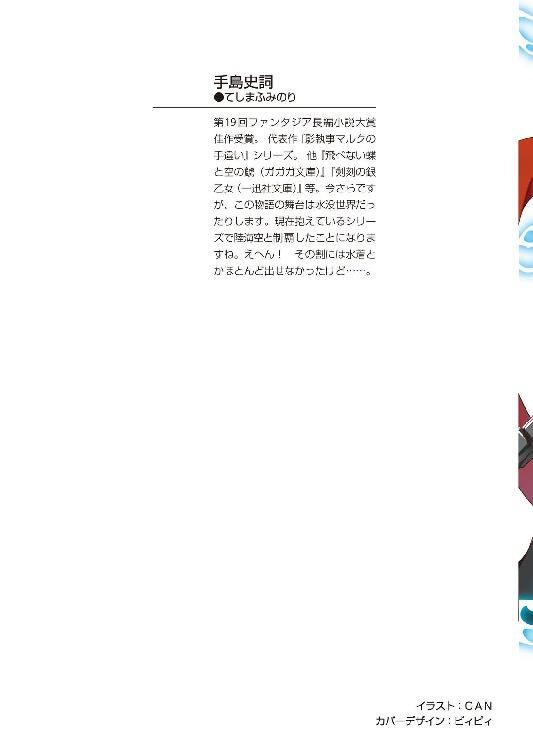
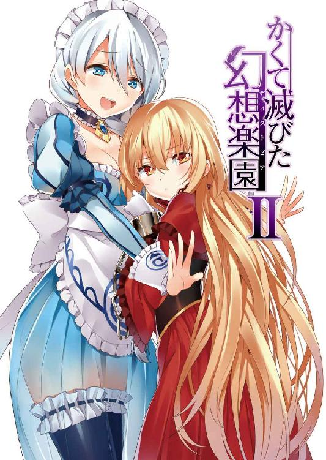
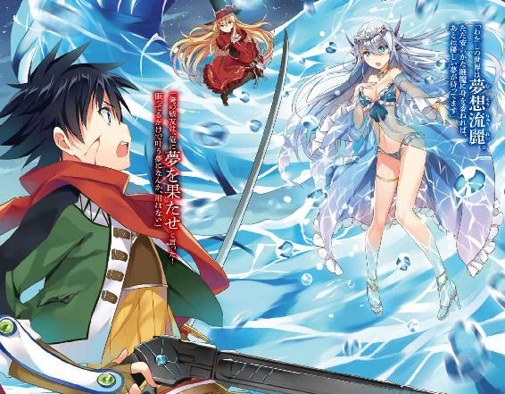
かくて滅びた幻想楽園Ⅱ
手島史詞

富士見ファンタジア文庫
本作品の全部または一部を無断で複製、転載、配信、送信したり、ホームページ上に転載することを禁止します。また、本作品の内容を無断で改変、改ざん等を行うことも禁止します。
本作品購入時にご承諾いただいた規約により、有償・無償にかかわらず本作品を第三者に譲渡することはできません。
本作品を示すサムネイルなどのイメージ画像は、再ダウンロード時に予告なく変更される場合があります。
本作品は縦書きでレイアウトされています。
また、ご覧になるリーディングシステムにより、表示の差が認められることがあります。
口絵・本文イラスト ＧＡＮ
物を盗めば盗賊、国を盗めば革命。
革命家は、盗賊ではない。
プロローグ
チャプン──
水の滴が、一つ跳ねては小さな波紋を起こす。
つま先を立てた素足が浅い水の膜を破り、また小さな滴を宙へと打ち上げる。
ツイッと、上品に指先でつまみ上げた肌着の裾が翼のようにひらめき、真っ白な髪を結った三つ編みが尾を引かれる。
ピチャン、ピチャン、滴を二つ、三つと散らして一人の少女が踊っていた。
──水の精......？
この世界に、妖精などというものは存在しない。精霊のような神聖な存在がいるとすれば、きっと人間に優しいものではない。
存在するのは、無慈悲なほどに強大な、異形の神々だけだ。
そんなことは嫌という程身に染みているはずなのに、リューは少女に対してそんな感想を抱いてしまった。
独り、リューが転がっているのは崩れた岩の上だった。
ここは十数時間前、百体もの巨人が進軍し、一千の屍が積み上げられ、そして神獣という絶対の存在が敗れたという場所だ。
同時に、黄金郷という煉獄に全てを癒やされた楽園でもあった。
生存者を搔き集め、なんとか食事と眠る場所を確保し、ようやくそれぞれが死者を悼む余裕を取り戻したのが、つい今し方のことだ。
余所者のリューは、この地に特別親しい友はいなかった。唯一の戦友は、志のままに戦い抜き、誇り高く逝った。そんな彼を悼むのは、筋違いのように思えるのだ。
だから、感傷に浸されたわけではないが、長らく地下にこもっていたこともあって、不意に夜の空が恋しくなったのだ。単に、それまでの寝床を失ったという理由もあるが。
ぼんやり月を見上げて、水の跳ねる音に目を向けると、この少女がいたのだった。
少女は、透けるような薄い肌着を一枚身につけているだけだった。
美しい月夜に、人がいないのを見計らって水浴びに出てきたのかもしれない。
靴も手袋もなく、大胆に曝け出された肢体は折れそうなほど細く、それでいてうっすらと透けて見える体は起伏豊かなものだった。
雪原のような白い髪に、水晶のような碧い瞳。淡い色彩に見合った顔立ちは、優しく穏やかなものに見えた。
飛ぶような軽やかな足取りで、少女はくるりと回っては水を蹴る。
少女が水で戯れているというよりも、水の方が少女に従っているような、そんな不思議な雰囲気がそこにはあった。
月光を浴びて滴は宝石のように輝き、楽しげに笑う声が心地好く響いた。
そんな光景に見惚れていたのは数分か、それとも数秒か、リューがこくりと喉を鳴らしたときだった。
小動物のような瞳を向けて、少女が淡く笑いかけてきた。
──気づかれてたのか。
隠れていたわけではないが、死角になっているのか少女はリューに気づいていない様子だった。
ただ見惚れていたというのもあるが、邪魔をしたくはなかったのだ。
「あ、その、覗き見るつもりはなかったんだが......」
面食らってリューが狼狽えた声を上げると、少女はスカートの裾を持ち上げたまま、静かに腰を折った。
──また、お会いしましょう──
「──え？」
そんな声が聞こえたかと思うと、不意に視界が闇に覆われた。
一瞬遅れて、月が雲に隠れたのだと気づいた。
やがて再び月が現れると、少女の姿はもうどこにも見えなかった。
──消え、た......？
ただ、自分の場所に帰っただけなのだろうとは思う。だが、今の幻想的な少女には泡になって消えてしまったような、そんな錯覚を覚えた。
それはリューが神を斬った日、そして全てを巻き込む大きなうねりを生んだ夜の、できごとだった。
第一章 揺れる世界
「──南に行く？」
怪訝そうな声を上げたのは、イオリだった。
腰まで届く艶やかな黒髪を一本に束ね、琥珀色の瞳が収まる切れ長の双眸。長いコートの下に上拵えのカタナを下げ、凜然とした少女だ。
「ああ。ギガスの南──アクアの神獣が、俺たちに力を貸してくれるかもしれない」
答えたのは、リューだ。
若草色のジャケットを羽織り、腰にはカタナと無骨な鉄の筒──〈銃〉を下げている。さして寒いわけでもないのに、首に巻いた赤いマフラーが妙に目立つ少年だ。
リューとイオリは、どこか似通った服装をしている。二人は、〈ウーロニクス〉と呼ばれる組織の人間なのだ。
「神獣が力を貸してくれるって、どういうことなの、クレアーレ？」
二人に向き合う形で、そこにはもう一人少女が座っていた。
ふわふわとした金色の髪は腰どころか膝に届くほどの長さで、小さな顔に収まる瞳も鼻梁も唇も、非人間的なほどに整っている。見たところ十三歳前後の少女には不似合いなことに、その両手は残酷なほど無骨な手枷を嵌められていた。
クレアーレ──幼い容姿とは裏腹に、気の遠くなるような年月を生きてきた神獣だ。
世界は、神獣に支配されている。
どれほど強力な武器を持ち、どれほど極められた技を振るい、どれほど優れた知恵を練り、どれほど多くの数を束ねたとしても、人間では決して届かぬ偉大な神々だ。
だから人間は無条件に神獣を敬い、服従し、命を投げ出せと言われれば疑いもなく死を選ぶ。それができない人間は、神獣に刃向かう反逆者なのだ。
そして、多くの人間はそれを疑問にすら感じていない。
支配されるということは守られるということでもあり、恐怖どころか喜びを抱いてしまうものなのだ。
そんな神獣の中で、クレアーレは極めて異例の存在だった。それというのも────
「わらわは罪人じゃ。神獣はわらわを許すまいよ。そして汝らも神獣を斬った。わらわたちは生きている限り、神獣からは追われる定めにある。それは反逆者の拠り所である〈ウーロニクス〉の比ではないのじゃ」
ジャラリと、罪人の証である手枷の鎖が鳴った。
〈ウーロニクス〉は神獣から逃れた者の集まりだ。神獣はそれを取るに足らないと考えているのか、探し出してまで滅ぼそうとはしていない。
だが、リューたちは違う。
十年前、クレアーレは創造主ミトラースに戦いを挑み、敗れた。なぜミトラースに刃向かったのか、それは彼女も断固として語ろうとしないためリューたちは知る由もないが。
そして、リューは人の身でその神獣を斬った初めての人間なのだ。
神獣の罪人であるクレアーレと、神獣を倒したリューは、どちらも神獣から追われる身であり、一蓮托生だった。
だが、リューが神獣であるクレアーレを守る理由は、もっと単純なものだ。
リューは十年前に彼女と出会っており、それからずっと追い続けてきた。そして、再会した彼女を盗むと宣言し、本当に手に入れた。
──クレアーレは俺のものだ。だから、守る。
簡潔明瞭な理由だ。
イオリはなおのことわからないという顔をした。
「クレアーレ、あなたは神獣から追われてるんでしょう？ その神獣が助けてくれるなんてこと、あるの？」
「十年前、わらわはある組織を率いていたのじゃ」
「──〈旅人〉──だったか？」
その名前はリューも噂程度にしか聞いたことがないが、クレアーレは小さく頷く。
「〈旅人〉がどうなったのかは、わらわも把握しておらぬ。じゃが、アクアのリヴァイアサンはわらわがもっとも親しかった仲間の一人なのじゃ」
「つまり、リヴァイアサンなら今のクレアーレも守ってくれるってことか？」
リューが問いかけると、クレアーレは微妙な表情を浮かべた。
「どう、であろぅな......」
「......おいおい」
「こればかりは会ってみねばわからぬ。じゃが、汝らには力が必要であろぅ？ リヴァイアサンは汝らの手が届きうる唯一の相手じゃ」
試すようなクレアーレの眼差しを、リューは獲物を見つけた猟師の笑みで受け止めた。
お互い、世界の支配者たる神獣に追われる身なのだ。力はいくらあっても十分過ぎるということはない。
「なるほど。力を手に入れられるか......いや、奪えるかは、俺たち次第ってことか。悪くない。神獣の力とは奪い甲斐があるってもんじゃないか」
喜々とするリューだが、そこに物憂げな表情を浮かべている者が一人いた。
「......？ どうかしたか、イオリ？」
「──え？ な、なに？」
話を聞いていなかったのか、声をかけるとイオリは驚いたように顔を上げた。
「なんか困った顔してたぞ？」
「な、なんでもないわよ」
「そうは見えないが......」
これでも何年も行動を共にしてる相棒なのだ。
リューが心配そうな顔をすると、イオリは言いにくそうに顔を背け、それからハッとしたように声を上げた。
「それ、クルテルたちにはなんて説明するの？」
「......あ」
同じ絶望を味わい、そしてまだ立ち直ったとはいえない仲間たちの名前に絶句した。
「あはは、盗賊がずいぶんしおらしいことを言うじゃない」
快活に笑ったのは、赤い髪の少女だった。
クルテル──十六歳という年齢で十人隊長という地位にあり、生き残った戦士の中で最年少でありながら、彼らをまとめる立場にある少女だ。幻装使いの戦闘服の上からコートを羽織り、腰の左右に二本の短刀を下げている。
──南へ行く──
そう言ったリューを、クルテルは驚くほど快く許してくれた。
「もともと戦部くんたちはギガスの人間じゃないし、きっとこれからもっと大きなことに関わっていくんだと思う。だから、私たちのことを気にする必要はないよ。......そうでなくたって、まともに動ける体にしてもらったんだし」
今の姿からは想像もつかないが、クルテルは三日前の事件で一度は重傷を負った。彼女だけでなく、リュー自身やイオリも致命傷を負ったにも拘わらず、今こうして地面に立っている。
全ては、黄金郷の力によるものだった。
──でも、死んだ人間は戻ってはこなかった......。
全てを癒やした黄金郷だが、死者を蘇らせることはできなかった。迷える死者たちに、無念を晴らす機会を与えるのが、そもそもの力なのだから。
それに、とクルテルは周囲へ目を向ける。
「大丈夫だよ。人間が初めて神獣から取り戻した大地なんだ。ようやく、他の支部からも応援が来てくれることになったし、そもそもここはわたしたちの国なんだから」
そこは、水没しつつある洞窟の入り口だった。奧には大きな空間が拓けていたはずなのだが、今は崩れて踏み入ることはできない。全て〝水界〟と呼ばれる淡水の海に沈んでしまったのだ。
〈ウーロニクス〉ギガス支部──だった場所だ。
基地としての機能は失われ、生き残りも非戦闘員の一般人を含めて百余名といったところだ。再建は不可能であり、その生き残りが生活していく場所もまだ定まってはいない。
それでも、この場所は彼らにとっては居場所だったのだ。
「そんなことより、問題なのは────」
クルテルが、厳しい戦士の表情を浮かべる。
このギガスという国は、巨神によって治められていた。
この基地と一千の犠牲を引き替えに、その巨神を打倒したのが三日前の出来事だ。
神獣を倒したのは歴史上、類を見ない快挙だが、勝利と呼ぶには〈ウーロニクス〉も失ったものが大きすぎた。三日の間にできたことといえば、生き残りをかき集め、彼らに温かいスープを用意したくらいのことだ。戦死者の骸も、まだ埋葬し終わってはいない。
そこでなによりもの問題は────
「クレアーレを、もふもふできなくなることかな？」
いつの間にか、クルテルはクレアーレを引きよせ、後ろからキュッと抱き締めていた。
「動きにくいのじゃが......」
迷惑そうな声を上げながらも、クレアーレは抵抗する素振りを見せなかった。
──はは、迷惑そうな顔してるなあ。
以前の彼女は、その迷惑そうな声すら上げなかった。リューにとっては喜ばしい変化だと言えた。
「──って、そっちじゃないだろう？」
微笑ましく笑ってしまったリューは、ハッと我に返った。
「俺が言ってるのは────」
「──メガロスは、死んだわけじゃない」
言葉の続きを引き継いだのは、イオリだった。
束ねてなお腰まで届く長い黒髪を振り払い、気の強そうな双眸をキュッと細める。
ギガスの神獣メガロスは、リューに敗れて姿を消した。
だが、傷を負ったとはいえまだ生きていたはずだ。人の力では、殺しきることはできなかったのだ。
イオリの言葉に、クレアーレは首を横に振る。
「あれも神獣の端くれじゃ。敗北した以上、今さら人間に害することなど、神獣としての誇りが許さぬ」
「俺が斬ったことで、勝負はついてるってことか」
実際に、メガロスが姿を消してから、残った神兵も死んだように動かなくなっている。戦うつもりがあるなら、神兵にも動きがあるはずなのだ。
「それよりも問題なのは、そのメガロスが王の地位を退いたことでなにが起こるのかってことだな」
基地を失ったリューたちは、まだ街でどんな変化が起こっているかも把握していない。
それに、もっと厄介な可能性があるのだ。
クルテルは重たく頷く。
「メガロスが力を失ったことで、他の神獣がこの国を狙うのは明白だもの。だから、戦部くんたちはアクアの神獣に協力を申し出に行くんでしょう？」
アクアとギガスは地続きであり、そこの神獣と協力関係を結ぶということはギガスも守られるということになる。ギガスの王を倒したのはリューであり、この国はリューのものということでもあるからだ。
だが、とリューはクルテルの顔色を窺うように見つめた。
「なあ、クルテル......その、君はいいのか？」
「なにが？」
「神獣から、協力を得ることについてだ」
世界は神獣に支配されている。その枠から外れた者は、反逆者として問答無用で処刑される。
そんな見捨てられた人々を救うのが〈ウーロニクス〉という組織であり、その究極の目的は神獣を滅ぼすことにある。
──俺は、〈ウーロニクス〉から離反することになるのか......？
神獣は〈ウーロニクス〉の敵であり、リューはその神獣に救いを求めに行く。それも、神獣の罪人を救うためにだ。
これは、〈ウーロニクス〉からすれば寝返りに等しい行為だろう。
クルテルは紳士帽子を持ち上げ、クレアーレの頭をそっと撫でた。黄金郷の赤い魔女であり、神獣フェニックスであるクレアーレだ。
「そうね......。クレアーレのことは、確かにショックだったよ。騙されたって思った」
今の仕草からもわかるように、彼女はひときわクレアーレを可愛がっていた。
......当人は、常に迷惑そうな顔をしていたが、それでもクルテルなりに親愛の情を注いでいたのだ。
「神獣は許せない。わたしたちの全てを壊したのは神獣だもの。許せるわけない。......でも、わたしたちを救ってくれたのも、やっぱりクレアーレなのよ。クレアーレが拾ってくれた命だって、ここにはたくさんある」
語りながら自分の気持ちを整理するように、クルテルは言う。
「だから、わたしたちはクレアーレを信じる。......ううん。クレアーレを連れてきた戦部くんを信じるよ」
それから、猫のように目を細めて笑った。
「心配しなくても、クレアーレのことはあの場にいた戦士しか知らない。みんな神獣じゃなくて黄金郷に救われた。そういうことになってる。だから、安心して行って」
「......ありがとう。そう言ってくれると、助かる」
頭を下げて礼を返すと、クルテルはクレアーレの腕に目を向けた。
「その手枷、早く外れるといいね」
クレアーレの手枷は、神獣の力を封じるものだ。
一度は黄金郷を顕現したことでその身を焼き尽くされているにも拘わらず、手枷だけは元の通りに腕を拘束していた。
──でも、絶対に壊せないものじゃないはずだ。
どんな道具を使っても傷一つ付けることができなかった手枷だが、今はそこに大きなヒビが入っていた。
──たぶん、黄金郷を開いたときだよな。
まだ壊せるほど大きなものではないが、黄金郷を開くことで少しずつ綻んでいるのかもしれない。
──でも、黄金郷を開くってことは、またクレアーレを殺すってことだ。
不死の神獣であるクレアーレが死ぬとき、その身は焼き尽くされてまた再生される。そこで世界を覆う転生の炎が、黄金郷なのだ。
つまり、引き金はクレアーレの死だ。
蘇るとわかっていても、簡単に割り切れることではない。
「......リュー、そろそろ時間よ」
イオリから声をかけられ、リューは我に返った。
「じゃあ、クルテルも気をつけてな。メガロスがいなくなって、街がどう変わるかもわからないし」
「うん。ありがとう。戦部くんも気をつけて」
別れを告げると、クルテルが一度だけ呼び止めてきた。
「あ、ねえ戦部くん」
「なんだ──へ？」
振り返ろうとする頰に、柔らかく、そしてしっとりと濡れたものが触れた。
それが唇の感触なのだと気づくまで、数秒のときを要した。
呆気に取られるリューに、クルテルはわずかに頰を赤く染めて笑う。
「この国を盗んだのはあなたなんだから、ちゃんと帰ってきてよ？」
それから、唇に二本の指を当てて投げる素振りを見せる。
「帰ってきたら、ちゃんとしたのあげるから」
そう言って、クルテルは去って行った。
しばらくの間呆然として、リューは拳を握って大きく頷いた。
「......っ、おう！」
「──なにが、『おう！』なの？」
幸せな気持ちは、真後ろからかけられた冷ややかな声に両断された。
冷たく睨むイオリの隣で、クレアーレが少し考えるような素振りを見せて口を開く。
「のぅ、リュー」
「なんだ、クレアーレ」
「汝はわらわのために子を残すと言ぅたが、ならば汝は自分の一族を築かねばならぬであろぅ。......相手を、一人に限定する必要はないと思うのじゃ」
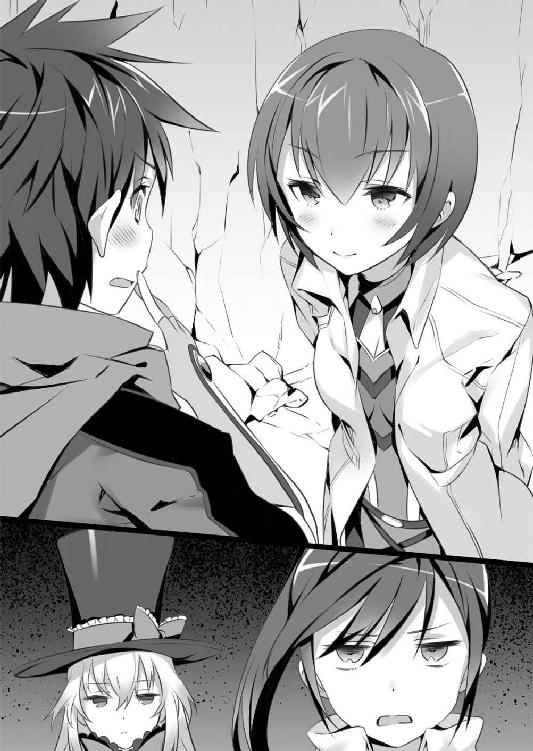
「そこで変に気を利かすのは止めるんだ！」
「......節操なし」
案の定、イオリから切りつけるような言葉を浴びせられる。ただ、なぜかその視線は殺気と、しかし安堵も入り混じった奇妙なものに感じた。
首を傾げながらも歩きだそうとして、ふと水の跳ねる音を聴いた気がした。
──そういえば、あの子を見かけたのもこのあたりだったか......。
一昨晩に見かけた、水と踊る幻想的な少女──あの不思議な少女が、まだそこにいるような気がした。
「どうかしたか？」
クレアーレから声をかけられ、リューは首を横に振った。
「なんでもない。行こうぜ、水の国アクアへよ」
リューたちは歩き始める。
その一歩が、さらに大きな異変を引き起こす一歩などと知る由もなく。
外壁の街──モナクス。
クルテルたちと別れた翌日。陽が高く昇るころになって、リューたち三人はその街に到着していた。
「......くたびれたのじゃ」
倦怠感を隠そうともせず、クレアーレがため息と共にそう漏らす。
「まあ、いい散歩だったろう？」
「獣に追い回されるのが、良い散歩のぅ......」
ギガスは陸地の多い国ではあるが、それでも三割から四割は水没している。移動手段も舟に頼るのが普通だが、〈ウーロニクス〉の舟は基地と共に全て失われてしまった。
それゆえ、リューたちは水界を避けて陸地を歩いてきたのだ。おかげで道中、何度も野生の鹿や熊に出くわし、切りがなくて最後には逃げ回ることになった。クレアーレのご機嫌が斜めなのも無理からぬことではある。
「悪かったよ。でも、ここからは舟だから安心してくれ」
ギガス国内はともかく、アクアへ渡るとなると舟が必要だ。調達するには、街で手に入れるしかない。
幸い、この街には〈ウーロニクス〉の息がかかった同志がいるらしく、用意してもらえる手はずになっていた。
「しかし、この街か......」
クレアーレが、複雑そうな顔色で高らかにそびえる外壁を見上げる。
この外壁は高さだけではなく厚みも相当なもので、幻装使いでも破壊が困難な代物だった。ここがアクアとの境にあり、最前線の砦として幾度となく奪い合っているせいだ。
だが、クレアーレが表情を曇らせたのはそれが理由ではない。
「あたしたちがここで戦ってから、まだ四日しか経ってないんだね......」
リューたちは、ここで神獣暗殺の任を与えられ、戦った。もっとも、相手は神獣に扮した偽物で、まんまと罠に嵌まってしまったのだが......。
クレアーレにしても、交渉を持ちかけて街に閉じ込められたのだ。あまり良い思い出のある街とは言えないだろう。
「ま、ここがアクアに一番近い街だ。通らないわけにはいかないさ」
言ってから、リューは不敵に胸を張った。
「それに、俺はメガロスからこの国を奪ったんだ。なら、ここは俺の街でもある。ただ堂々と歩けばいいだけの話さ」
そうして門を潜ると、突き刺さるような視線がいくつも投げかけられた。騒動に紛れて侵入し、神獣の艦を沈めたのはつい先日のことだ。見ていた者は忘れはしないだろう。
それすらも何食わぬ顔で受け流して進むと、やがて行く手を塞ぐように一人の男が立ちはだかった。
「よう、じいさん。なんか用かい？」
怪我でもしているのか、松葉杖に体を預けている。五十か、もしかしたら六十にもなろう歳だが、衰える様子も見せない鍛えられた体軀をしていた。
リューがなんでもなさそうに声をかけると、老人は憎悪に歪んだ目で睨めつけてきた。
「罪人め......私の顔を見忘れたか」
「......っ！ あ、あのときの、騎士か」
足の傷を見て、リューは気づいた。自分がつけたものだ。
この老人は、神獣に仕える騎士として、メガロスに扮した囮役を担っていたのだ。
「貴様、陛下になにをした？」
怒りを堪えきれないような、震える声だった。
神獣に仕える騎士が、主が戻らぬことに疑問を抱かぬはずはない。それでも、まだ自分たちの敗北に、確信を持てないのだ。
リューは臆すことなく、真っ向からそれを受け止めた。
「──斬った。メガロスは、俺が倒した」
そして、自分に向けられた敵意に向かって、リューは宣言する。
「この国はもう、神獣じゃなくて人間のものだ。俺たちはもう、何者にも縛られる必要はないんだ！」
歴史上、初めて神獣を打倒したのだ。
本来なら、リューたちは勝ち鬨の声を上げているところだろう。だが、実際には〈ウーロニクス〉も壊滅しており、贔屓目に見ても共倒れという状況だった。
──それでも、神獣から自由になったのは事実だ。
だから、リューはそれを知らしめた。しかし────
「──ぐあっ？」
「リュー！」
鈍い痛みが、頭を襲う。
触れてみると、どろりと赤く濡れていた。石を投げられたのだと、すぐには理解できなかった。
「──神獣さまを殺した悪魔！」
石を投げたのは、騎士ではなかった。
なんでもない、道ばたを歩く中年の女性だ。それに勇気づけられたように、人々は石や棒切れを拾い始める。
「恩知らずめ！ 神獣さまを手に掛けるなんて！」「人の皮をかぶった魔物だ」「俺は見たぞ。こいつらは不気味な力で炎を操るんだ！」「許されない！」
罵倒と共に次々と石を投げられ、リューはとっさにクレアーレを庇った。
「止めろ──ぐぅっ、なんで......」
打ち付ける痛みに呻くと、バサリとなにか大きなものがかけられた。
「不知火イオリが銘じます──おいでませ〈絶華〉」
庇うようにかけられたのは、イオリのコートだった。
そして──炎が広がった。
降り注ぐ石ころや木片が、瞬時に焼き尽くされ──いや、蒸発した。
「──あんたたち、これってつまり、もういない神獣のためにここで命を捧げるってことでいいのね？」
イオリだった。
背に、肩に、腰に、腕に、数十本からなる炎でできた刃をまとっている。
夜叉雛──ひとたび太刀を振るえば標的が息絶えるまで花弁のごとき炎が襲い続け、己に対する攻撃にもやはり同様の刃を返す。
その刃のひとつ一つが、小舟程度なら瞬時に塵と焼き尽くすだけの力があり、束になれば神兵の中でも最大の巨軀を誇る、ギガスの巨人ですら葬り去る。迂闊に振るえば、外壁に囲まれたこの街は炎の鍋と化すだろう。
側にいるだけで肺を焼かれるような炎に、石を手にとっていた民衆も息を吞んで後退る。神兵すらも圧倒する炎に、神獣への忠誠が恐怖に敗北していく。
民衆が戦意を失ったのを確かめて、イオリはカタナを鞘に収める。
「あたしたちはここを通りたいだけよ。邪魔をしないで」
人垣が半分に割れ、イオリの前に道が開かれる。
ただ一人、騎士の老人だけをその場に残して。
「......行こう？ リュー」
イオリが差し出した手に、リューは救われたような気がした。
「ああ」
手を握り返して、リューは立ち上がる。
騎士はそこからどきはしなかったが、それ以上行く手を阻むこともしなかった。
すれ違う瞬間、騎士が嗚咽を漏らした。
「......陛下なくして、我らはどう生きれば良いのだ？」
リューは、答えられなかった。
世界は、神獣に支配されている。
全ては神獣によって定められ、そこに疑問を抱くだけで反逆者として処刑される。反逆の意志など持たずとも、そうと取られる行動だけで反逆者とされるのだ。
だが、疑問さえ抱かなければ──反逆さえ行わなければ、神獣によって全てが守られ、満たされた幸福な世界だったのだ。
──俺は、それを壊したことになるのか......？
生き延びることに、そして拾った命を守ることに必死で、今までそんなことは考えもしなかった。
勝者の凱旋からは遠くかけ離れた気持ちで、リューはモナクスの街を通り抜けていった。
「──人は、神獣の意志に従って生きているのじゃ。それを失えば、次の頭でも与えぬ限りはああなるのじゃ」
モナクスで調達した小さな舟の上で、クレアーレはそう言った。
幸い、リューは額を切っただけだった。語りながら、彼女は傷口をハンカチで止血してくれていた。
「......他に、神獣を倒した例があったのか？」
問いかける声はどうしても沈んだものになってしまった。
クレアーレは不死の神獣として長い年月を生きている。
彼女は物憂げに水面を見つめた。
「人が神獣を滅ぼすことは難しい。じゃが、神獣を倒せるものは他にもおろぅ？」
「神獣同士での戦争......ということ？」
櫂を操りながら、イオリが問う。
「神獣の力は相性の良し悪しはあれど、強さ自体に差はないのじゃ。場合によっては共倒れになることもあろぅ。そうして取り残された国では、あのような光景も珍しいものではない」
つくづく、クレアーレが世界に絶望するほど長い間、人の歴史を見つめてきたのだと思い知らされた。
「俺は、どこを間違えたんだ......？」
「別に汝が間違ったわけではない。世界というものが、そういうものだということじゃ」
見慣れた退屈を語るように、クレアーレの声は気だるそうなものだった。
「神獣に従って生きる人間は、目の前で人が死んでも疑問を抱かぬ」
かつて、乗り合いのゴンドラで同席した商人も、黄金郷の名を口に出してしまったことで無慈悲に処刑された。
大勢の人が集まっていたにも拘わらず、そこで悲鳴を上げる者すらいなかった。
目の前で人が殺されても、彼らは──ああ、こいつは反逆者なんだ──そう納得してしまい、それ以上のことを考えないのだ。
「理解できぬことは神獣が定めたからで、理不尽なことは神獣に背いたからじゃ。そうして停止させてきた思考を、自分で動かすためには途方も無い痛みが伴う。それは誰のためでもない、自分が自分であることを取り戻すために必要なことであろぅ」
それは、今までの彼女の態度からは考えられないほど、優しい言葉だった。
「......もしかして、慰めてくれてるのか？」
クレアーレは、幽かにだが笑ったように見えた。そしてグイッと体を引きよせると、そのままリューの頭を自分の膝に乗せる。
「人にとって、十年は短い時間ではなかろぅ？ それほどの時間をかけて慕われたとあっては、わらわとて少しは甘やかしたくもなるのじゃ」
慈しむように頭を撫でられ、リューは顔が熱くなるのを感じた。
リューが黄金郷を追いかけたのも、神獣と戦ったのも、〈ウーロニクス〉に身を置いたのも、全ては十年前に出会った〝ある少女〟を追いかけてのことだった。
その十年前に出会った〝彼女〟は、紛れもなくクレアーレ本人だった。
自分より幼い容姿の少女──それでもかつては自分よりも大きかった少女の膝に、リューは不思議な安堵を覚えた。
「君は、俺のものなんだけどな......」
居心地の良さに吞み込まれそうで、リューはささやかな抵抗を込めて主張する。
「汝はわらわとの賭けに勝って、黄金郷を手に入れた。ならば、この膝も汝のものであろぅ。そのように怯えずとも、取って食いはせぬのじゃ」
「クレアーレ、少し変わったか？」
以前もからかわれたことはあったが、こんなふうに甘く囁いてきたのは初めてに思えた。
「汝が、わらわを変えると言ったのであろぅ？」
そう言って、やはり愛しそうに頭を撫でる。
──そうか......。隠し事が、なくなったからだ。
クレアーレを牢から連れ出したのはリューだが、それでも彼女は自身が神獣であることも、幼い容姿で長い歳月を生きてきたことも、打ち明けるわけにはいかなかった。
だから、常になにかの隔たりがあった。
それが、今はなくなった。変わったのではなく、これが本来のクレアーレなのだろう。
──これは、うかうかしてると俺の方が所有物になっちまうな。
メガロスはクレアーレを最強の神獣と呼んだ。
なるほど、全てを任せて従ってしまいそうな、危険な魅力があった。彼女の腕に抱かれていれば、それだけで満足してしまいそうになる。
それこそが、神獣が支配者たる由縁なのだろう。
人は、神に対して無条件に屈服してしまうのだ。
──そいつは、俺の性分じゃない。
リューは膝枕をされたまま、腕を組んで大きく胸を張った。
「クレアーレ、君は勘違いをしているぞ」
「勘違い？」
「君が俺を甘やかすんじゃあない。俺が君を甘やかすんだ」
クレアーレはキョトンと目を丸くし、それから苦笑のような笑みを浮かべた。
「ならば、これはもう必要ないか？」
「君の膝が俺のものである事実は、否定しない」
膝枕は、素直に心地好かった。
「ならば御託を並べる必要もなかろぅに......」
「重要なのは────」
舟の上で不敵に足を組み、リューは指を立てる。
「俺が望んで、手に入れたって事実だ。流されて与えられたら、盗賊じゃあない」
恐らくは誰にも理解できないだろう、リューの盗賊に対する信念だった。
「......汝は、面倒臭い男だのぅ」
「でなけりゃ、盗賊なんてやってな──ふごおっ？」
リューの腹部に、櫂の持ち手が叩き込まれていた。
「......お調子者。頓痴気」
自分を見下ろす、幼馴染みの冷たい瞳がそこにあった。
「怪我がいいなら櫂を漕いでくれない？ あんたの仕事でしょう。......あと、〈ウーロニクス〉は盗賊じゃないって何度言ったら理解できる？」
「......はい。すみませんでした」
臓腑に打撃を与えられ、涙と涎を流しながら、リューは櫂を受け取った。
それから、むくれた顔をするイオリがモナクスで誰よりも怒りを顕わにしていたことを思い出した。街中で夜叉雛まで出したのだ。激怒と呼べるほどのものだ。
「イオリ」
「なによ」
「さっきは、ありがとうな。俺の代わりに怒ってくれて。おかげで、無事に街を抜けられたよ」
イオリは大きく瞬きをして、見る見る顔を赤く染めた。
「こ、ここここここれからアクアの神獣に会うのに、クレアーレに怪我させるわけにはいかないでしょ！」
「そりゃあ、そうだけどよ......」
リューが謝ると、イオリは溢した料理を拭こうとして贈り物の入ったハンカチを使ってしまったような、失敗に失敗を重ねたと言わんばかりの絶望じみたため息を漏らした。
「......汝らは、本当に面倒臭いのぅ」
独りクレアーレが、呆れたようにため息を漏らしていた。
それでも、リューの顔からは先ほどの失意は色を消していた。
同じ日の晩──リューたちを見送った次の夜、クルテルはメルカートルを訪れていた。
こちらも近くの街で舟を入手し、クルテルも含めて男女五人の戦士が乗り込んでいる。
メルカートルはギガスのあちこちへ延びる大運河の収束地であり、国の内外からものが集まる商人の街だ。この街には、物資も情報も全てが集まっている。〈ウーロニクス〉の生き残りも、ここに身を寄せている者が多い。仮の拠点といったところだった。
この街のすぐ側に、小さな砦がある。十年間、フェニックスという神獣が囚われていた牢であり、リューとクレアーレが出会った場所らしい。
いわば、始まりの場所でもある。
──神獣に、勝ったんだ......。
メルカートルが近づくにつれて、それが事実なのだと思い出されてきた。
未だに、実感が湧かないところがある。それでも、うっすらとだが覚えているのだ。
メガロスと一騎打ちをして、敗ったリューの背中を。
──可愛い顔してたなあ。
神獣を屠った達人とは思えぬほど、無防備な頰だった。
クレアーレやイオリが寄り添う相手なのだ。分が悪いとは思いつつも、いつか迎えにきてくれるのではないかと期待してしまいたくなる顔だった。
「クルテル隊長、顔がにやけてるぞ？」
「う、うるさいなあ」
ギガスの生き残りに、隊長格はクルテルだけだ。
十人隊長とはいえ、今は指揮官という立場にある。毅然とした態度を取り繕おうとはするが、やはり周りはみな年上ばかりで、ついつい普段の顔をさらしてしまっていた。
仲間の戦士たちは、顔を見合わせて苦笑する。
「というかクルテル、今からでもついて行ってもいいんだぞ？」
見透かされていて、クルテルは赤面する顔を隠さなければならなかった。
「......いいの！ わたしはこのギガスの戦士なんだから。この国を、人間の国として立て直すのよ。それくらいできないと、ついて行ったりできないよ」
仲間の死に、クルテルは挫けて力尽きた。
それでも、リューは諦めずに立ち向かい、最後にはメガロスを倒してしまった。
──戦部くんと肩を並べるには、わたしは弱すぎる......。
だから、自分もなにかを為し遂げたのだという証が欲しかった。
「意地っ張りなやつだ」
仲間たちに笑われて、クルテルはふんと鼻を鳴らした。
「あなたたち、そんなこと言ってると隊長権限でメガロスの捜索を命じるよ？」
そのひと言に、さすがに戦士たちも閉口した。
「それにね、なんか戦部くん、すぐに帰ってくるような気がするんだ」
「女の勘ってやつか？」
「ううん。彼、メガロスと戦うとき、この国をもらうって言ったじゃない？ だから、なんか戻ってくるような気がするのよ」
「そう願いたいもんだな」
クルテルも、わかってはいるのだ。
リューは、いわば神殺しの英雄なのだ。〈ウーロニクス〉は彼の存在を無視しない。次の神獣を倒すべく、また新たな戦場へ赴かねばならないだろう。
それでも〝盗賊〟を名乗る彼がギガスを自分の宝だとしたなら、きっとこの国を放っておかないと思うのだ。自分のものだと定めたクレアーレを、本当に救ってしまったように。
そうして舟に揺られてしばらくしたころだった。
「お、見えてきたな。あれがメルカートルだ」
遠目にもわかる、美しい街並みだった。
「あーあ。こんなときでなかったら、少しは羽を伸ばしたいんだけどね」
これ見よがしに残念そうな顔をすると、仲間たちはクックと含み笑いを溢した。
「戦部隊長が戻ってきたら、いっしょに回ってこいよ」
「まだ言うか！」
一千の同胞を失ったにも拘わらず──いや、だからこそ、クルテルたちは他愛のないことで笑い合っていた。
だが、神という存在はよほど人に厳しいものらしい。
そんな小さな安息さえ、クルテルたちには許されなかった。
「──クルテル隊長！」
悲鳴のような声に、クルテルは腰の双刀に手をかけた。
舟が転覆しかねないほど、水面が大きく波打っていた。風や自然に起こるものではない。なにかよほど大きなものが水中を移動したのだ。
「水獣......いや、違う！」
メガロスが作り管理していたこの運河に、水獣が入り込むような隙はない。となると、考えられるものは一つだけだ。
──神兵の生き残りか......！
メガロスが存命である以上、彼の神兵もまだ力を失ってはいない。
敗北を受け入れたメガロスは神兵に待機を命じたようだが、忠誠心が行き過ぎて暴走したということは考えられる。だが、全員でかかれば倒せない相手でもない。
やがてすぐ目の前で大きな影が水面からせり上がる。
「やっぱり神兵──......っっっ？」
言いかけて、クルテルは言葉を失った。他の仲間も、同じだ。
そこに立ち上がったのは、人の形をした巨大な存在だった。
あまりに大きな、巨人と呼ぶにも大きすぎる存在だ。
そう、それはまさに巨神と呼ぶべき......。
「メガ、ロス......」
その名を口に出したのは、クルテルだった。
消えたはずの神獣が、どういうわけかそこにいた。
空から見下ろす巨大な神は、クルテルたちのあまりに小さな舟を見据えた。
『〈ウーロニクス〉の残党か......』
「あ、あ、あ......」
手が、震えていた。
カタナを抜くことも忘れて、ただ恐怖に震えることしかできなかった。
そして、メガロスは確かにクルテルを見た。
『女、将は貴様だな？』
ただそこに在るだけで屈服してしまう偉大な存在が、個という小さな一点に意識を向ける──それは空を覆うような威圧感が、一点に束ねられるということだ。
直接見据えられたことに──塊となって叩きつけられた威圧感に、クルテルは自分の気力が打ち砕かれたのを感じた。
──駄目だ。抗えない。
逃げることも、戦うこともできない。リューはこんなものと戦って勝ったというのか。
そして、神の腕は船上のクルテルをいとも容易く摑み────
「──聞いておるか？」
クレアーレのいくらか憤慨のこもった声に、リューは我に返った。
「あ、悪い。なんの話だっけ？」
「......？ なにかあったのか？」
答える代わりに、リューは頰に手を触れた。昨日、思いがけない口付けをされた頰だ。
──なんだ？ 嫌な気分だ......。
胸騒ぎのような、奇妙な不快感を覚えていた。
「モナクスのこと、まだ気にしてるの？」
「そういうわけじゃ......」
「見たらわかるわよ？」
イオリの指摘に、リューはグッと言葉を詰まらせた。
──俺は、どうすれば正解だったんだろう。
それは、今もしこりのように胸の中にこびり付いている。さすがに、十年近く相棒として組んでいるのだ。隠し事など、瞬時に看破されてしまう。
「まあ、それは認めるけど、今のはそういうのじゃないんだよ」
だが、それを説明できる言葉もなく、リューは首を横に振った。
「......それより、アクアの神獣の話だったな」
「──神獣リヴァイアサン──水の中に棲まい、人間の前に姿を現すことは稀で、〈ウーロニクス〉もその正体を摑んではいない。謎の多い神獣だという話ね」
神妙な顔で頷くイオリに、クレアーレが苦笑を漏らす。
「まあ、あやつは得体の知れないものに対する代名詞にされるくらいだからのぅ」
その姿は水の竜だとも、鯨のような超弩級の水棲生物だとも言われている。あまりに正体不明なことから、正体の知れない不気味なものを指して〝リヴァイアサン〟の名で呼ぶこともあるほどだ。
リューも耳にしている話だ。
それを改めてイオリが口に出したのは、自分たちが知っているのはその程度であると、クレアーレに説明するためだろう。
ギガスの〈ウーロニクス〉基地は壊滅し、アクアに関する資料も失われていた。事前に調べられたのは、クルテルたちギガスの生き残りが噂話程度に記憶していた情報なのだ。
──姿を見せなくても、民衆を支配できるだけの力があるってことだよな。
確かな力と威厳があるからこそ、人は神獣を神と、王と讃えて服従するのだ。
「リヴァイアサンっていうのは、どんなやつなんだ？」
舟を漕ぎながら問うリューに、クレアーレは複雑そうな顔をした。
「そうじゃな。他の国に比べれば、人間の縛りは緩いものであろぅな。考えが人間寄りなのじゃ。じゃが、国を率いる神獣としての顔は、やはり他の者と変わらぬ」
王として振る舞う姿は、メガロスあたりと同様だということらしい。
クレアーレは「ただ」とつけ足す。
「あやつをひと言で言うならば、変わり者であろぅな」
「神獣としては、って意味か？」
「神獣としてもそうじゃが、恐らく人から見ても変わり者なのじゃ」
「どういうことだ？」
クレアーレは話し倦ねたように杖に顎を乗せる。億千万の歳月を生きていようとも、こういった仕草をされると見た目通りの幼さに思えた。
「そうじゃのぅ......。メガロスは神獣は王だと言ぅたが、あの者は旅人なのじゃ」
〈旅人〉──クレアーレが率いた組織の名だ。
彼らは敗北したが、クレアーレにその〈旅人〉の名で呼ばせるとなると、よほど中核にいた人物なのだろうと想像できた。
「アクアは水の国じゃ。その神獣も、流れる水のごとく一つのところに留まってはおれぬ性分らしい。神出鬼没で、いつの間にか側に現れ、全てを見ている。半面、澄み切った水のように気持ちの良い者でもあった」
止まった水は淀むだけだ。水は流れてこそ清流となる。
「凄いやつみたいだな。......いや、神獣なんだから凄いのは当たり前なんだろうけどよ」
クレアーレはやはり複雑そうな顔をした。
「そう、じゃな。わらわもあやつにだけは敵う気がせぬのぅ」
「それって、つまり昔のあなたが──力を失う前のあなたが？」
リューだけでなく、イオリまでも顔を青ざめさせた。
クレアーレの腕には、未だに無骨な手枷が嵌まっている。彼女の力の大半は、封じられたままらしい。去りゆくメガロスが残した言葉では、今のクレアーレが使えるのは、かつてに比べれば絞りかす程度の力しかないのだという。
裏を返せば、たかが上澄み程度の力で、同じ神獣のメガロスを圧倒したということだ。最盛期の彼女はいかほどの力を持っていたのだろうか。
──そのクレアーレが、敵わない......？
リューは手の平に拳をぶつけた。
「良いな。それでこそ、奪いがいがある」
クレアーレは呆れたように肩を竦めた。
「またそれか。汝も懲りぬのぅ......」
「懲りないから、ここまで来れたんだ。それは、これからも同じさ」
かつて、リューはクレアーレにも同じ言葉を投げかけている。彼女を奪うと。
そして言葉通り奪い、変われないと言った彼女を変え、これからも与え続けるためにリューは次へと進む。それが、盗賊としてのリューの信念だ。
そうして舟を進めていて、リューは小さく口笛を吹いた。
「アクアへ抜けたぞ」
運河を遡るように櫂を漕ぎ、丘の上に抜けるとそこには、うっそうとした森林が広がっていた。
世界の大半は、水に覆われている。それが、水界が〝湖〟や〝海〟という名で呼ばれぬ所以だ。規模と質が違い過ぎるのだ。
水没した世界ではあるが、少し潜ればまだ足のつく大地を見つけることができる。そこに、人々は柱を立てて住居を築いた。
ギガスのメルカートルのように、舟がなければ家から出ることもできないような場所に街が作られるのも、浅瀬を利用しなければ人の住める大地が残っていないという理由から来ている。
水界では、森林というものは極めて特殊な環境でなければ存在しえないのだ。
見上げるような木々の群れに、イオリも感嘆の吐息を漏らす。
「すごいわね......。アクアに来るのは初めてだけど、これが浮遊樹林か」
浮遊樹──いくつかの種類は存在するが、大地に根を下ろすにしろ水中を漂うにしろ、水面に枝をつき出す樹木の総称だ。
森林の下には、やはり水界が広がっている。舟の上から見下ろしても水底は見えず、そう浅いものではないことがわかる。にも拘わらず、浮遊樹は悠々と水面を漂っていた。
水面をのぞき込むと樹木の影が逆さまに映っており、そこに葉から伝い落ちた滴が小さな波紋を起こす。湿度は感じられず、清涼な風が吹き抜けるそこは、異世界めいて美しい景色だった。
「アクアは国土の七割が水界じゃ。大地を持たぬ彼らが生活できるのは、浮遊樹という足場があるからじゃ。水以外の資源も、全てここから得ているといっても過言ではなかろぅ。造林技術がずば抜けておるのじゃ」
珍しく饒舌なクレアーレに目を丸くすると、彼女は肩を竦めて「十年前の話じゃがな」と付け足した。
リューは宝の山を目にしたように瞳を輝かせた。
「これだけあったら、何隻の船を造れるかな？」
「船？ なぜ船なのじゃ」
不思議そうな顔をするクレアーレに、リューは快活な笑みを返す。
「浮遊樹の浮力は、他の木材とは比べものにならないくらい高いんだ」
「あれは脆かろぅ？」
自然に生息する浮遊樹は、水面に浮かぶ浮力の代わりに強度が失われている。
だが、リューは自慢げに人差し指を振った。
「野生の浮遊樹ならそうだが、アクアの浮遊樹は神獣が手を加えたもので、ずば抜けて頑丈なんだよ。こんな形の良い森になってるんだから、野生の浮遊樹ってことはないぜ」
むしろ、アクアについて饒舌だったクレアーレがその事実を知らない方が意外だ。
紳士帽子を傾け、少女は小さく肩を竦めた。
「わらわは国を持たなかったからのぅ。そういったことに興味はなかったのじゃ」
どうやら、興味のないことに無関心なのは昔からだったようだ。
──そういえば、なんで自分の国を持たなかったんだろうな......。
問いかける前に、クレアーレが前方を示した。
「それより、そろそろ森に入るのじゃ。浮遊樹の中には、大地に根を下ろさず漂うものもある。進むのなら、せいぜいぶつからぬよう、気をつけるがよかろぅ」
「ああ。ありがとうな」
確かに、今は操船に集中しなければならない。リューは素直に礼を返した。
言っている側から、横合いから浮遊樹の一本が漂ってくる。
針路を塞がれる形になって、リューは仕方なく櫂を回して舟を迂回させた。質量の差から、櫂で弾けば舟の方が安定を失うのだ。
しかしその先でも、やはり揺れ動く浮遊樹が漂っており、森林も次第に迷路のような様相を呈していく。
「く、これは、抜けるのが難しいな」
見た目の美しさとは裏腹に、非常に厄介な存在だった。
「ここはギガスとの国境じゃ。浮遊樹には防壁の意味合いもあるのであろぅな」
「防壁か。......なるほど、こいつは確かに、巨人じゃ手こずるだろうな」
それは、ギガスの巨人が非力だということではない。彼らの巨体では、これだけ密集した浮遊樹の合間を縫って進むことは不可能なのだ。
もちろん、木々の衝突で神兵に傷を負わせることはできないが、彼らにも体力というものがある。それを削ぐという意味では、これほど効果的な防壁はないだろう。
巧みに櫂を操るが舟は一向に前へ進めず、リューは苛立ちを込めて舌打ちを漏らす。
「ったく、なんだってアクアの神獣はこんなところに国を造ろうと思ったんだ？」
「リヴァイアサンは水の魔物じゃ。あの者がその暴力を十全に振るうには、豊富な水源が必要なのじゃ」
「......つまり、俺たちは神獣の腹の中に飛び込むってことか」
「そういうことになるのぅ」
領土そのものが神獣の体のようなものだということだ。
とはいえ、今は目の前の森林をどうにかしなければならない。相変わらず行く手を阻むように漂ってくる浮遊樹を避けて、リューもそろそろおかしいと感じ始めた。
「なあ。浮遊樹ってよ。あくまで水に流されてるだけなんだよな？」
「それがどうかした？」
「さっきから狙ったようにこの舟に寄ってきてるように思うんだが......」
行く手を阻む浮遊樹は、まるで舟に吸い寄せられるように現れるのだ。
イオリがスッと目を細めた。
「......番人がいるってこと？」
「だろうな」
頷いて、イオリに櫂を差し出す。
あいにくとギガスの生き残りの中に、アクアへ行き来したことのある者はいなかった。モナクスを抜けるのがアクアへの最短ルートだとは聞いたが、そこに番人のようなものがいるとは彼らも知らなかったのだろう。
いずれにせよ、ここに敵意を持った〝なにか〟がいて、しかもそれは一方的にリューたちの位置を把握している。
そして、その〝なにか〟は水の流れを複雑に操って浮遊樹を操作している。これは上流に堰を作ったくらいでできることではない。相手は、人間ではない可能性の方が高い。
となるとその〝なにか〟を排除しなければ先には進めない。
「ちょっと見てくる。舟を頼むイオリ」
クレアーレが意外そうな顔をした。
「独りでゆくのか？」
「ここに俺たちを通したくない誰かがいるとして、そいつが目的を達成する一番簡単な方法は、この舟を沈めることだ。舟の守りも必要だろう？」
こんな国境の誰も通らない場所──しかも浮遊樹林の中で舟を失えば、進むことも逃げることもできない。神獣とはいえ、クレアーレは非戦闘員だ。独りで舟に残すわけにはいかない。行くならば、リューかイオリかのどちらかということになる。
リューたちの舟はすでに浮遊樹に取り囲まれている。本気でぶつけるつもりなら、さして難しいことではないはずだ。
「向こうもまだ本気で沈めようとはしてないのが、せめてもの救いだな」
それでもさすがに舟を空にすれば沈められるだろう。退く気はないと宣言するようなものなのだから。
──問題なのは、殺すわけにはいかないってところだ。
普段なら、神兵は一人でも多く倒しておきたいところだが、今は事情が違う。
リヴァイアサンに協力を仰ぐとは言っても、事前に連絡が取れるはずもなく、向こうにしてみればただの侵入者でしかないのだ。それに加え、罪人のクレアーレに表立って協力してくれるかも定かではない。
侵入者を排除しようという、相手の反応は至極もっともなものだ。
もちろん、クレアーレが交渉したところで結果は同じだろう。力を封じられ、黄金郷も自在に開けない彼女は、ただの人間と変わりのあるものではないのだ。
そもそも、神兵も含めて神獣の兵士というものは絶対服従を誓っている。命令一つで己の命も軽く投げ出す彼らに、交渉という手段が実を結ぶことは少ない。
だからといって神兵を殺めてしまっては、今度はリヴァイアサンと協力関係を結ぶことは難しくなるだろう。
つまり、神から与えられた力を振るう神兵を、殺さずに制さなければならないのだ。
しかし、イオリは櫂を受け取らず腰のカタナに手をかけた。
「あたしが行くわ」
「......おいおい。周りは浮遊樹に囲まれてるんだぞ？ 幻装なんか使ったら、俺たちまで炎に巻かれる」
それに、リューならば炎に頼らない〈銃〉もある。浮遊樹や水中といった隠れた的も撃つことができる。
「浮遊樹くらい避けるわよ。いざとなったら燃え広がる前に焼き尽くせばいいんだし」
イオリが本気で炎を操れば、樹木の一本や二本、触れた瞬間灰に変えられる。
「相手が神兵だった場合、あたしの方が柔軟に対処できるわ。あんたの場合、小さくて素早い相手だったりしたらどうしようもないでしょう？」
これだけ浮遊樹を密集させてきた相手なのだ。実際に戦うとなれば、その中で動き回ってくると考えるのが自然だ。
「それに、あんたは離れてても戦えるでしょう？」
そう言われて、リューも降参した。
「わかった。頼む。でも交渉相手の神兵なんだ。殺すなよ？」
「わかってるわよ」
リューに頷き返すと、イオリはコートを脱ぎ捨てる。
黒を基調とした戦闘服は、クルテルのそれとは意匠の異なるものだ。萌葱色だったクルテルに対し、こちらは艶やかな黒で、甲冑も一体となった構造だ。百人隊長として格付けされたものということもあるが、出身地が異なるという理由の方が大きい。
舟から浮遊樹へ飛び移ろうとするイオリに、クレアーレがポツリと声をかけた。
「水の流れを追うがよい。リヴァイアサンの神兵が、その先にいる」
ギガスでもそうだったが、神獣であるクレアーレは神兵の存在を感知することができるらしい。
イオリはどこか微笑ましそうに笑った。
「今回は止めないのね？」
「汝は、神兵の一体程度に後れは取らぬであろぅ？」
「ふぅん？ 信頼してくれるんだ」
クレアーレは、わずかに目を伏せた。
「汝は、わらわを信用するのか？」
今さらだが、その言葉でリューはようやく気づいた。
──そういえば、イオリはクレアーレをどう思ってるんだ？
クルテルたちも、クレアーレに対していくらか複雑な気持ちを抱いていた。それでも命と仲間を救われたことで信頼してくれたようだが、イオリの気持ちは聞いていなかった。
イオリは試すようにじっとクレアーレの顔を見つめ、それからツンと彼女の額を指で突いた。
「リューはあなたを裏切らないわ。だから、あたしも裏切らない。あなたがリューを裏切らない限りは、あたしはあなたを守る。それを信頼だと思うのなら、そう思って」
クレアーレは淡く微笑み返した。
「汝もたいがいにお人好しなのじゃ」
「そうでなきゃ、こんなバカと付き合ってないわよ」
「そう、であろぅな」
二人の少女はリューに目を向ける。
──そこはバカじゃないって否定して欲しいなあ......。
至極納得した顔で頷かれ、リューはちょっぴり傷ついた。
「じゃあ、ちょっと片付けてくる」
今度こそイオリは浮遊樹の枝へと飛び移り、そして瞬く間に見えなくなった。
強固な大地ではなく液体である水中に根を張り、水面に浮かぶという不安定な存在ながら、浮遊樹の枝は存外にしっかりしたものだ。イオリの腕より細い枝が、その体重を危なげもなく支えてくれる。
これらは人間が住居にできるよう、神獣が品種改良したものなのだ。伐採すれば良質な木材となり、その頑強さと極めて高い浮力から、特に船を建造する上では最上級の素材だとされていた。
この浮遊樹林一つでどれだけの船を造ることができるだろうか。浮遊樹林の船団があったならば、〈ウーロニクス〉にとっては無視できない力になるだろう。
木々の枝を飛び移りながら、つい周囲に宝の山があることを意識してしまった。
──リューのせいだわ。
冤罪だろうとも、イオリは心の中ではそう断じた。
そうして進んでいって、やがてイオリはそれを見つけた。
『元来た道を引き返しなさい、人の子よ』
水の中から、一人の女性が上半身を現していた。
武器のようなものはなく、身につけているのも胸部を覆う鎧くらいのものだ。とても争い事ができるようには見えない、清楚かつ美しい顔立ちで、二の腕もフォークより重いものを持ったことがあるのか疑わしいほど細いものだった。
一見人間となんら変わらぬ姿に見えるが、耳の後ろからは水かきのついた角のようなものが生えていた。
──これが、アクアの神獣......。
同性であるイオリですら、思わず見惚れそうな容姿だった。
──これは、リューを行かせなくて正解だったわね。
お調子者の彼のことだ。この美しい女性を前に、鼻の下を伸ばして「お前を奪う」などと言う姿がありありと瞼に浮かぶ。
女性は、もう一度警告の声を上げる。
『我が主は慈悲深い。侵入者を殺せとはお命じにはなっていません』
「そう。少し安心したわ。人間に寛容なのね」
腰のカタナを意識しつつも、決して触れようとはせずにイオリは語りかける。
「あたしたちはどうしてもここを通らなければならないのだけど、駄目かしら？」
女性は、聞き分けのない子供でも見つめるように、困ったような顔をした。
『我が主は慈悲深く寛容ですが、我は兵です』
兵隊は考えない。
ただ命令のままに戦い、眼前の敵を粉砕する。自分の命すら消耗品に過ぎない彼らに、慈悲という概念は存在しない。
この女性は、子供と話すような穏やかな表情で、そう言っているのだ。
──神兵は、どこまで行っても神兵だということね。
イオリも本気で交渉できると考えたわけではない。
「なら、やるべきことは一つしかないわね」
腰のカタナに手を載せると、女性も仕方なさそうにため息を漏らした。
『警告はしました』
そう言って、女性は水中へ潜る。その瞬間、隠れていた下半身が曝け出され、イオリは息を吞んだ。
しなやかにくびれた腰までは人のそれと同じだが、臀部から下は鮮やかな鱗に覆われた水棲生物のそれだった。
──これが、アクアの神兵──〝人魚〟──か。
数いる神兵の中で、ギガスの神兵が最大と呼ばれるように、もっとも美しいとされるのがアクアの神兵だ。
あまりの美しさから、神兵とは別につけられた呼び名が〝人魚〟だった。
「不知火イオリが銘じます。おいでませ──〈絶華〉」
イオリの方も、ただ見惚れてはいない。
紡いだのは、カタナと同じ形をした炎だ。序の型と呼ばれるもっとも基本的な型で、威力も普段より押さえたものだった。大きさもカタナの倍程度で、普段の半分もない。
とはいえ、カタナは所詮カタナだ。刃の届かない敵には意味がない。
相手の出方を窺っていると、すぐに水面に渦が生まれた。
『身の程を知りなさい』
その渦が、竜巻のように立ち上がった。人魚の容姿に相応しい、美しい力だ。
蛇のようにうねり、自分目がけて降り注ぐそれを、イオリは他の枝へ飛び移ることでなんなく躱す。
水柱の直撃を受けた枝は、瞬く間に打ち砕かれる。それはイオリにも予想できたことだが、水柱の破壊はその程度には留まらなかった。
それどころか──
メシメシメシッ──
異様な音を立て、浮遊樹の根が水面に引き摺り出される。触れた枝だけに留まらず、水柱はその幹や根までも吞み込んでいた。
──まるで空飛ぶ渦潮だわ......！
イオリはそれが水の膜ではなく、見た目通りの質量が旋回しているのだと見抜いた。
小さな池なら丸ごと一つ分ほどだろうか。それが高圧で回転しているのだ。巨木を根から引き抜くようなそれに巻き込まれれば、人間の体など一瞬で引きちぎられるだろう。果たして、ギガスの巨人ですらも堪えきれるかどうか。
美しい姿とは裏腹に、その暴力は容赦なく残酷だった。
浮遊樹を丸々飲み尽くしていながら、逆巻く水柱はなおもイオリを追いかける。
「はあっ！」
幻装が輝きを増す。
瞬間的に大きく広がった刃は、水柱を正面から真っ直ぐ斬り伏せる。真っ白な蒸気を残して、水柱は一刀のもとに四散した。
だが──
「幻装が、消された？」
イオリのカタナからも、炎が消えていた。
巨人の肉体をも断ち斬った刃が、ただの水柱一つで相殺されたのだ。
──巨人とは、力の質が違う。
巨大な体軀と硬質の筋肉、そしてその二つが生み出す圧倒的な腕力。それが、ギガスの神兵の武器だった。
人魚にはそれらが何一つ備わっていない。人と変わらぬ姿大きさで、恐らく刃物で切りつければカタナでなくとも命を奪えるのではないだろうか。
その代わりに与えられたのが、この超常の力なのだ。
『無駄です。炎の子よ。炎は我に届かない』
イオリですらこうなのだ。並の幻装使いでは、水柱を斬ることすら難しいだろう。
「......なるほど。手加減できる相手じゃあ、ないみたいね」
殺すなとは言われているが、そもそも神兵は人が死力を尽くしてなお倒せぬ存在だ。人に非ざる力を持つ幻装使いでさえ、四人五人でかかってようやく一体倒せるかというところなのだ。
それを殺さずに倒すなど、無理難題も良いところだろう。
──それでも遂行しなくちゃいけないのが、隊長格の辛いところよね。
それは〈ウーロニクス〉からの命令ではない。
だが、相棒の頼みなのだ。断れるはずもない。
「破の型──舞姫」
次に噴き上げた炎は、刃ではなかった。
ヒラヒラと羽衣のように漂う、薄い炎の膜だ。
破の型──炎を刃の形に紡ぐ序の型から、より自分に適した型へ昇華した技だ。個々で形も違えば用途も異なる、それこそ一人だけの炎だ。この段階に達して、幻装使いは初めて一人前と呼ばれる。
イオリのそれは、長い炎の帯だった。とても戦いに向いた形とは思えぬそれを、彼女は体に巻き付けるように浮遊させる。
「本当に炎が届かないか、試してみない？」
挑発を込めてそういうと、人魚から嘲笑の混じった声が返ってくる。
『試してみると良い。そしてそれがあなたの最期となる』
再び水柱が立ち上がり、イオリへ向かって押し寄せる。
イオリは炎の帯を素手で摑むと、弧を描いて緩やかに振るう。
羽衣は袋を作るように大きく広がり、そして水柱を包み込んでいた。
ジュウッと音を立て、瞬時に水柱が蒸発する。同時に、そこに触れた羽衣の一部も消失する。それでも、失った羽衣は微々たるものだった。
これには人魚も顔を強張らせる。
──見つけた！
そして、イオリの方も水中に潜む人魚の姿を視認した。
「飛べ舞姫！」
体から離れて浮遊する羽衣の末端を、イオリは蹴った。
宙に固定された炎は足場となってイオリを前に進め、しかし体に纏わり付くそれは少女の体に引かれてついてくる。
羽衣は、鎧であり、剣であり、そして翼でもあった。
夜叉雛のような苛烈さはなく、巨人のような強固な肉体を持った敵には効果の薄い力だが、攻撃と防御を同時に可能とする変幻自在の技だ。
神兵の中でもっとも美しいとされるのが人魚ならば、もっとも美しい炎を操る幻装使いがイオリだった。
羽衣をまとって宙を翔るイオリに、人魚も息を吞む。
『こしゃく！』
次に噴き上がったのは、水柱ではなかった。
飛沫だ。小さな水の塊が、無数に浮遊していた。
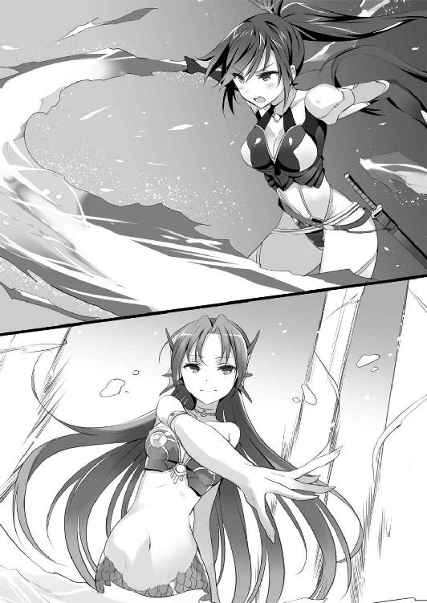
『お行きなさい』
その飛沫が、イオリ目がけて撃ち放たれる。
──まるでリューの〈銃〉ね。
小さな飛沫は、弾丸のようにイオリを襲う。
「吞み込め舞姫！」
足場にしていた羽衣を、前に向けてフワリと広げる。
範囲は広かろうとも、威力を拡散させたそれは舞姫の防御を破ることは叶わず、水蒸気となって周囲へ散る。
──ここまで近づけば、届く！
舞姫を体に纏わり付かせたまま、イオリは水の中に飛び込んだ。
羽衣は固体を抉るように水面を陥没させ、イオリと人魚を同じ位置に立たせる。
『愚かな』
同じ位置とはいえ、人魚の体は殻のように強固な水の膜に守られていた。周囲の水を押し退けている羽衣に、それを破る余裕はない。
「──三百八十一戦中、百六十一勝六十分け百六十敗──」
その呟きは届かなかったのか、イオリを押し潰すように周囲の水が迫る。ただ、人魚は理解していなかった。
「あんたの力、確かにすごいけど──遅くて、欠伸が出るわ」
炎をまとわぬカタナが、水の膜を両断する。
人魚が目を見開いたときには、カタナの柄が腹部にめり込んでいた。カクンと人魚が崩れ落ち、荒ぶっていた水も静けさを取り戻す。
「小細工なしの刀技ならあたし、リューより強いのよね」
居合いでメガロスを破ったリューと、イオリは共に修練を積んできたのだ。
どちらが勝ち越しているかに関しては、毎回言い合いになってはっきりしないのだが。
第二章 散歩する樹城
世界は水で覆われている。
中でもアクアは国土の七割が水没していることから、多くの街は浮遊樹の上に築かれていた。この地の〈ウーロニクス〉も例外ではなく、複数の浮遊樹が絡みついた樹城とも呼べる樹木に居を置いているという話だ。
舟の上で揺られて──人魚を撃退してから、さらに三日が過ぎていた。
旅は快調なもので、番人の人魚以来は神兵どころか人間の兵にも出くわしていない。
水界の移動は、陸路のそれとは違う。舟という乗り物の上では、眠っていても水流が先に進めてくれるのだ。もちろん航路を正し、外敵を寄せ付けぬために一人は起きていなければならないが。
そこでもっとも働いてくれたのは、意外なことにクレアーレだった。
日頃から無気力で気だるそうに、まるで動こうとしないのが彼女だ。
当然、見張りも面倒臭がるのだと思ったのだが────
まったく以て、その通りだった。
見張りの順番になっても立とうとはせず、櫂を握ることもない。
周囲を警戒する素振りもなく、ただいつも通りにぼんやり空を見上げていたり、リューやイオリの寝顔を眺めたりしている。
欠片ほども見張りとして機能しているようには見えないのだが、彼女の場合はむしろそれが凄いところだった。
神獣であるクレアーレは、神兵や神獣、人間や水獣などの微細な気配も完全に把握しているらしい。ただ、それをいちいち説明するのが面倒で、黙っているだけなのだ。
だから、彼女がぼんやりしているときは周囲に敵がいないときだ。外敵が近づけばリューたちを起こす程度には、クレアーレも信頼してくれている。
それに加え、彼女は星や水流の読み方も知っている。航路がずれればきちんと正してくれる。その操船技術も見事なもので、櫂を軽く左右に揺らし、ときには振りもせずにそっと押さえるだけで針路を修正するのだ。
もしかすると、リューやイオリより巧みかもしれない。
今まで、見張りはリューとイオリが交替で行っていた。三時間おきに交替し、その間に片方は身を休める。そうして船足を止めることなく進み続けることはできるのだが、それでも少しずつ疲れは蓄積していく。
だから、三日に一度は街に降りて休息が必要だったのだが、それが、クレアーレのおかげで船上でも十分な休眠を取れるようになった。いちいち街に降りずとも進み続けることができたのだ。
......ちなみに、国境での一戦も、彼女は神兵の存在を感知していたらしい。これにはリューも批難の声を上げたのだが、その答えはこうだった。
「汝らの手に負えぬ相手ではなかったであろぅ？」
どうやら、クレアーレはリューたちが自力ではどうしようもなくなるまでは自分から動こうとはしないらしい。
──だが、それでいい。
リューは、守ってもらいたくて彼女を攫ったのではない。彼女を救いたくて奪ったのだ。
むしろ、リューがどうしようもなくなるまで干渉しないということは、どうしようもなくなったときには──つまりリューたちを失いそうなときには、干渉するつもりだということだ。
リューにはそれが喜ばしくてならない。
「──起きるのじゃリュー」
クレアーレの声に、リューはガバリと身を起こした。十分な休眠を取ったおかげで、体も軽い。
リューが飛び起きると、クレアーレは眠る前と同じ姿勢でそこにいた。一つだけ違うのは、舟の行く先を指で示している点だろう。
指の先へ目をやって、リューは納得して伸びをした。
「あれが〈ウーロニクス〉の樹城──アンブラティオか」
それは、巨大な木々の塊だった。
国境の森林を全て束ねればこれくらいの大きさになるだろうか。枝の一つ一つが幹のように太く、空を覆うように広がっている。高さは飛び抜けているわけではないが、それでもモナクスの城壁を乗り越えんばかりのものだ。
そんな木々を守るように、水面に近い幹の部分はガラス質の岩で覆われていた。融解するまで幻装使いの炎で焼かれたものだ。水害や木の天敵である炎に強く、強度も硬い。
この巨大な幹を覆うだけの量を用意するのに、どれほどの時間をかけたのだろうか。ギガスの大空洞に勝るとも劣らぬ、世界で唯一の優れた砦だ。一説では、この樹上は神獣リヴァイアサンが起こした津波にも堪えたという。
これが、アクアに於ける〈ウーロニクス〉の基地だ。
浮遊樹が密林のように寄り集まった光景は圧巻のひと言だった。森ほどもある木々が一点に絡み合っているのだから、これでよく沈まないものだ。
「早いな。あと一日はかかる距離かと思ったんだが......」
「どうも、迎えに来てくれたみたいよ」
イオリの言葉に、クレアーレも感心したような吐息を漏らした。
「──散歩する樹城──というわけか」
そう、この樹城は自身が散歩するように移動できるのだ。
──アクアの移動城塞といえば、〈ウーロニクス〉の中でも有名だからな。
この樹城は、幹だけでなく根も水中を漂わせる浮遊樹の塊で、船のように舵を取ることができるのだ。もちろん、それ相応の人手と労力も必要ではあるが。
つまりリューたちを迎えるために、それだけの労力を費やしてくれたということだ。なかなか悪くない気分だった。
樹城からはたくさんの人々が身を乗り出し、手を振っていた。豆粒のように小さな彼らの歓声が、リューの元まで届いてくる。
「ふふん。今度こそ凱旋ってわけだ。悪くない。悪くないぞ！ みんな、俺だ！ 盗賊が来たぞー！」
二流の悪党にしか聞こえないセリフを、声高に叫ぶ。
胸を張り、喜々と拳を突き上げるリューに隣のイオリから冷ややかな声が突き刺さる。
「お調子者。あとで転んでも知らないわよ？」
そうは言いつつも、イオリの顔もわずかに綻んでいた。こんなふうに歓迎されるのは、彼女も初めてなのだ。嫌な気分がするはずもない。
飛び跳ねるリューに大きく舟が揺れ、クレアーレが迷惑そうな顔をしながらそんな二人を見つめていた。
「本当に、転ばねば良いがのぅ......」
樹城についた瞬間、リューはさっそく派手に転ぶことになる。
樹城には同じ浮遊樹から切り出された床板が敷かれ、そこここに手すりや網が張られていた。住居はカーテンで仕切った簡素なものから、板を打ち付けた部屋らしい部屋、木の幹を刳り貫いた天然の空洞など、多種多様に存在するようだ。
そんな樹城の住居を繫ぐのは、樹木の合間を縫うように走る回廊だ。浮遊樹から直接生える枝を削りだしたもので、あちこちに苔が覆い茂っている。
そこで、リューは転倒していた。苔で滑った......というわけではない。
「おや、大丈夫かな？」
文字通り顔から倒れ込んだリューに、気遣うような言葉が投げかけられる。
だが、野太いその声からは欠片ほども安心を得ることはできなかった。
──落ち着け俺。見間違いだ。きっと、疲れてたんだ。ほら、三日もぶっ通しで船旅とか初めてだったろう？
目の前にいるのは、きっと普通の人間だ。
そう自分に言い聞かせて、リューは気力を振り絞って顔を上げる。
「どうした？ 気分が悪そうだが」
リューを出迎えたのは、およそ世界中の悪意と殺意を一点に収束したような、恐ろしい形相の男だった。
骨張った頰のわりには薄い唇。眉も目を凝らさねばそれと気づかぬような薄いもので、頭髪は剃り上げられている。
なにより恐ろしいのは、目つきだ。
鈍く濁った瞳は、人を人と思わぬ、残忍な目だ。一体何人の人間を殺せば、人はこんな目をするようになるのだろうか。
眼球の大きさに対して小さすぎる瞳も迫力に拍車をかけている。神兵だと言われれば信じてしまいそうな容貌だ。
──アクアの神兵は、美しい人魚だったはずだろう？
人魚どころか、鬼だ。
リューとイオリはあちこちの国を訪れているが、神兵......いや神獣ですらこれほど恐ろしい顔をしているものは見たことがない。神獣の姿を模倣した彼らは、そことなく神々しさを併せ持っているのだから。
造形的に醜いわけではない。言葉では言い表せない、腹の底から込み上げるような恐ろしさがそこにはあった。
凶悪な顔が、鎌のように口の端を吊り上げる。
──殺される！
神獣に対してですら、リューはこれほど恐ろしいという感情を抱いたことはなかった。
震え上がり、カタナに手をかけるが、それよりも相手の方がわずかに早かった。
「リュー！」
イオリの悲鳴。ガシッと、腕を取られた。
「あ、あ、あ、あ......」
──勝てない──
人では、この怪物を倒すことはできない。
メガロスを前にしても抱かなかった恐怖だ。
しかし、男は存外に優しい手つきでリューを引き起こした。
「この樹城は揺れが大きいからね。舟では平気な人も酔うことがある。でも、休むのならベッドを使った方がいい」
今からお前を殺す──そう告げるような顔で、男は献身的にそう言った。
「な、なんで......。俺を、殺さないのか？」
なにが起こっているのか理解できず、リューが呆然として問いかけると、男はどんな地獄を見せてやろうかと思案するように微笑んだ。
「かわいそうに......。辛い目に遭ってきたんだね？ ギガスでのことは聞いているよ。僕はなんの力にもなれなかったけれど、どうか安心してほしい。ここは、安全だから」
微塵も安心を与えぬ形相で、男は優しくそう言った。
「名乗るのが遅れたけれど、僕はフーマー。フーマー＝ニタースという。ここの大将を務めている千人隊長だ。君が、戦部リューくんだね？ 君から見たら僕は弱いかもしれないけど、僕が大将でいる間は神獣相手でも君たちを危険に晒しはしないよ」
腰には上質な拵えのカタナが下げられており、イオリと同種のコートから覗くのは千人隊長の戦闘服だった。千人隊長は、基地を預かる大将格の地位だ。
それから、男──フーマーはイオリに目を向ける。
知らぬうちにカタナを抜いていたらしいイオリは、ビクッと飛び上がった。
「君は、不知火百人隊長だね？ ここではそんなものは必要ないから、しまってくれるかな。きっと疲れているだろうし、僕なんかが知ったふうなこと言うべきではないんだろうけど、苦労したよね。どうか、ゆっくり休んでほしい」
永遠の眠りを与えるような酷薄な笑みを浮かべて、フーマーは慈父のように穏やかな声でそう言った。
そして、最後にクレアーレへ目を向ける。
「君のお名前を、聞いてもいいかな？」
殺す相手の名前は聞いておくことにしている──といったセリフしか連想できない威圧感を放つフーマーに、クレアーレは無感動に答える。
「クレアーレじゃ」
「綺麗なお名前だね」
さすがにクレアーレでも怖かったのか、驚いたように目を丸くした。
「そのように言われたのは、初めてじゃな」
「きっと、君が可愛いからみんな名前のことに気づかなかったんだよ」
「汝のように清い心の持ち主に会ったのも、初めてやもしれぬ」
「僕も、君みたいに優しい子に会ったのは初めてだよ」
言葉だけ聞いていると、優しいお兄さんと小さな女の子の微笑ましい一場面なのだが、絵面としては殺人鬼に追いつめられた哀れな少女だ。
クルリとフーマーが振り返り、次はお前だというように口の端を吊り上げる。
「僕は頼りない大将だとは思うけれど、困ったことがあったらなんでも言って」
心が洗われるような、清らかな言葉だった。
──ま、まさかとは思うが、この人、顔が怖いだけで良い人なのか......？
慰めるように肩を叩かれ、リューはようやく勇気を持ってフーマーの顔を見上げた。
「ね？」
神兵も裸足で逃げ出しそうな、修羅の笑みだった。
──ひぃぃぃぃぃぃぃっ！ 顔が怖いとかいう次元じゃあないぞ！
震え上がるリューを見て、クレアーレがため息を漏らす。
「汝は、こういった反応は見慣れておるのか？」
「ああ。浮遊樹もここくらい大きくなると揺れに癖があるからね。初めて来た人は必ずこういうふうになってしまうんだ。......自分の非力さが、恨めしいよ。僕にできることは、彼らが安心して休めるようにここを守ることくらいなんだ」
浮遊樹の揺れはまったく以て関係ないのだが、フーマーは人の好いことにそう考えているらしい。
──俺は......人の、外面しか見えてなかったのか......。
羞恥心と罪悪感で押し潰されそうなリューの隣で、イオリも泣きそうな顔をした。
「あたしは、偽善者だわ」
そんな二人にフーマーはさらに優しく接し、リューとイオリはその優しさが痛かった。
そんなときだった。
ピチャン──
どこからともなく水の跳ねる音が聞こえた。
反射的に顔を上げて、リューは見覚えのある輪郭を捉えたような気がした。
──今の、どこかで......。
視界の隅でヒラリと揺れたのは、真っ白な髪だった。
「さあ、部屋に案内するよ。荷物はこれだけかな？」
それがどこで見たものかを思い出す前に、リューはフーマーに声をかけられた。
荷物を持とうとする彼を、他の戦士たちが慌てて止める。
「ちょっと隊長。それくらい自分たちがやりますから！」
「そうですよ。ただでさえ樹城を動かしてるんだから少しは休んでくださいよ」
どうやら、樹城で迎えにきてくれたのはフーマーの判断だったらしい。この口ぶりでは、彼の負担は相当なものだったのだろう。
フーマーは「でもお客さまが来てくれたんだし」と呟くが、他の戦士たちに背中を押されて去って行く。
もう一度振り返っても、白い影はもう見つけることはできなかった。
陽が落ちるころ、フーマーはリューたちのためにささやかな宴を開いてくれた。
やはり彼は形相が凶悪なだけで、面倒見がよい人格者らしかった。基地内のあちこちに、彼が修理した壁や、階段を使いにくい老人や怪我人のために作った坂などがあった。
朝などは、こっそり他の一般人に紛れて──あの人相でその表現が妥当なのかは疑問だが──廊下の掃き掃除などもしているらしい。生きた木の中であるこの基地には、毎日おびただしい量の落ち葉が降り積もるのだ。
そんな彼の人柄のおかげか、ここに住む人々はみな笑顔が絶えなかった。
──というか、フーマー隊長には神獣もビビるんじゃあないかな......。
むしろ、安息を与えているのはそちらかもしれない。
そうして宴の広場に足を踏み入れると、さっそくフーマーに手招きをされた。広場には酒や料理を並べたテーブルがあり、椅子の手合いは見当たらない。立食形式だった。
──大丈夫だ。顔を直視しなければ、普通に会話できるはずさ！
カタカタと震えていると、フーマーが杯を手に取る。
「それでは、僕たちの新しい友人の戦部百人隊長、不知火百人隊長、そして素敵な女の子のクレアーレに────」
黄金郷の赤い魔女──その名を知らぬはずはないだろうが、フーマーはその話に触れようとはしなかった。
リューたちが過酷な戦場から帰ったばかりなのだと知り、心を尽くしてくれているのだ。
「──でも、乾杯の前に一つ。ギガスで散ったたくさんの仲間に、一分間の黙禱を」
本当に、人格者だった。
みな静かに目を瞑り、リューもギガスでの戦友を思った。
──ミハエル隊長......。
巨神に挑み、黄金郷でなお戦い続けた誇り高い男だった。盗賊を名乗るリューを、一人の戦士として、男として扱ってくれ、花鳥風月の一つである〈鳳凰〉まで託してくれた。
志のままに生き抜いた彼を悼むのは筋違いかもしれない。だが、やはり悲しい。
そして、リューが守れなかった大勢の仲間たち。気の良い鍛冶屋の刀匠たち。ギガスに残してきたクルテル。頰に口付けを送ってくれた彼女は大丈夫だろうか。
一分は、瞬く間に過ぎてしまった。死者を悼むのに、一分は短すぎるのだとリューは初めて知った。
やがて、フーマーが乾杯を告げ、開宴となった。
「フーマー隊長、さっきはすまなかった」
「良いんだよ。僕はこういう顔をしているしね」
イタズラっぽく言うが、この形相で言われると恨まれているようにしか聞こえない。
──というか、自覚はあったんだな。
ということは、彼はリューたちが気に病まないように話してくれていたのだ。クレアーレの言う通り、本当に心の清い人だった。
もう一度頭を下げてから、リューは話を切り出した。
「謝りついでに、一つ頼みたいことがあるんだ」
「頼み？ なんでも言ってくれ」
「アクアの神獣──リヴァイアサンの元へ行きたい。なにか、手はないか？」
クレアーレの盟友とはいえ、相手は神獣である。国境での一戦からも、神兵に融通が利かないことは確かだ。
「リヴァイアサンか......。君の、次の任務なのかい？」
「......いや。これは〈ウーロニクス〉の事情とは無関係のことなんだ」
答えた瞬間だった。
「──っ？」
不意に、強い視線──いや、気配を感じてリューは振り返った。
──なんだ？
ほんの一瞬で消えてしまったが、気のせいで済ませられる弱いものではなかった。殺気にも似た、敵意のこもったものに感じられたのだが。
「どうかしたかい？」
フーマーは気づかなかったのか、不思議そうな声を漏らす。
「......いや、なんでもない。それよりリヴァイアサンのことなんだが」
リューは戦いに来たわけではない。助力を願いに来たのだ。
戦うことになったら、それはリューにとっては敗北だ。戦に勝ったとしても、リヴァイアサンが手を貸してくれることはないだろう。
ただ、〈ウーロニクス〉の千人隊長を相手に、それを正直に話すわけにはいかない。
口ごもっていると、フーマーはふむと俯いた。
「任務以外のどんな用があるのかは、今は訊かないでおこうか」
「すまん」
「リヴァイアサンの居城は、ここと同じような樹城だと言われてる。だけど恥ずかしいことに、僕たちはその場所も特定できてないんだ。それに、姿を見た者もいない」
「そうか......」
「でも、手がないわけじゃない」
言いにくいことなのか、フーマーはそこで一度言葉を切った。
「あんたたちに、迷惑をかけるつもりはない。話を聞かせてくれるだけで十分だ」
「そうじゃないんだ。ただ、ちょっと幸運が必要なことでね......」
周囲を窺うようにしてフーマーは続ける。
「僕はリヴァイアサンの居場所を知らない。だが知っていそうな人なら心当たりがある」
「......！ 本当か？」
「ええ。ただ、僕の部下というわけじゃなくてね。フラッと現れてはフラッといなくなっちゃう人なんだ。さっき見かけたから、今日はここにいるんじゃないかと思うんだけど、上手く捕まるかわからなくて......」
「十分だ。手がかりがあるだけでもありがたい」
リューがそう言うと、フーマーは優しげに──そう、脳内で変換した──微笑む。
「じゃあ、明日の朝に僕の執務室に来てくれ。それまでに、なんとか話をつけてみるよ」
「恩に着る。俺にできることがあったら、なんでも言ってくれ」
フーマーはとんでもないというように首を横に振った。
「君たちはお客さんなんだ。もてなすのは、僕の仕事だよ」
本当に善良な言葉なのだが、顔はやっぱりお前の命は明日の朝までだとでも言ってるような恐ろしいものだった。
──良い人なのになあ......。
そう言ってフーマーが離れていくと、他の戦士たちもポツポツと声をかけてきてくれた。
「よう、あんたが巨神を倒した男か。若いな」「黄金郷を手に入れたって話は本当か？」「本当に神獣を倒しちまうなんて〈ウーロニクス〉史に残る偉業だぜ」「幻装使いじゃないんだって？」「なんで〈盗賊〉なんて名乗ってるんだ？」
......ポツポツどころか、あっという間に取り囲まれてしまった。横を見ればイオリも同じような有様だ。
あっちは「美人だ」だとか「戦部とは恋人なのか」だとか「踏んでください（？）」だとか言われているが、人に取り囲まれたリューはそこまで聞き取ることができなかった。
あまりこういった状況に耐性がなかったのだろう。イオリは「ふぁっ？」と奇妙な声を上げて耳まで赤く染めていた。
クレアーレは......いち早くフーマーが救助してくれたらしい。人の環からは少し外れて料理を啄んでいる。フーマーが隣にいるおかげか、人もそこまで寄ってきてはいない。
矢継ぎ早に質問を投げかけられ、リューはまんざらでもなさそうに両手を挙げる。
「まあ、待ってくれ。一度に全部は答えられないぜ」
身振り手振りを加え、武勇伝を語って聞かせると、それだけで人々は歓喜と敬愛を返してくれる。
──ああ、これだこれ。こういう反応を見たかったんだぜ。
歓喜に身を震わせていたときだった。
「これで、俺たちは神獣を滅ぼせるんだな！」
その言葉に、リューも硬直した。
言ったのは若い戦士だった。リューと同年代か、少し上くらいだろうか。隊長格ではなく、勢いが先走っているような青年だ。
リューは彼を押し止めるように手を振る。
「まあ、落ち着けよ。俺は確かにメガロスを倒した。だが、それで神獣全てを倒せるように考えるのは、気が早いぜ？」
「そ、そうだな。だが、時間がかかるとしても、その手段は手に入れたんだろう。いつの日か、地上から全ての神獣を駆逐できるんだ。喜ばずにはいられないさ！」
「俺は、神獣を滅ぼすつもりはないぜ......？」
リューの言葉に、困惑が広がった。
「なにを、言ってるんだ？ 神殺しの英雄の言葉とは思えないぞ？」
「......俺は、神獣を殺したわけじゃあない。倒したけど、死んだわけじゃないんだ。メガロスは、今もどこかで生きてる」
青年は酷い衝撃を受けたようにパクパクと口の開閉を繰り返した。
そこに納得した声を上げたのは、貫禄のある中年の戦士だった。
「なるほどなあ。やはり、死ななかったわけか」
「どういうことだ隊長？」
隊長格の中年は大仰に頷く。
「何千何万年という歳月をかけて、〈ウーロニクス〉は神獣を倒せなかった。だから神獣は不死身じゃないのかという話があるんだ」
「じゃあ、俺たちは勝てないっていうのか？」
「待て待て。だが現実にはここに戦部リューという英雄がいる。なあ、戦部隊長。つまりあんたは、神獣から力を奪って倒したってことだよな？」
なにやら話が勝手に膨らみ始めているのを感じながらも、リューは頷く。
「ああ、そうだ」
「つまり、そういうことだ。殺せなくても、倒すことはできる」
歓声が広場いっぱいに広がる。
「むしろ死ねなくて不運なのは神獣の方さ。これから無限の償いが待ってるんだからな」
「ガハハハ！ 違いねえ」
さすがに、それはリューも聞き捨てならなかった。
「待てよ。俺はそんなことのためにメガロスを倒したんじゃない」
戦士たちは、心底意味がわからないというような顔をした。
「なにを言ってるんだ。俺たちの使命は神獣を滅ぼすことだろう？ その手段が見つかったっていうのに、なにを躊躇ってるんだ？」
「そうだぜ。そもそも────」
「──誰よりも先に〈ウーロニクス〉の使命を果たしたのは、あんたじゃないか」
リューは息を吞んだ。
──俺は、〈ウーロニクス〉の信条通りに戦ったのか......？
人間は、神獣に支配されている。
だから、神獣は滅びるべきだというのが〈ウーロニクス〉の考え方だ。
だが、リューはそのどちらも正しいとは思っていない。世界を変えても、神獣を滅ぼしはしない。どちらでもない、自分だけの信条を貫いてきたつもりだった。
それが、いつの間にか〈ウーロニクス〉のやり方に従っていたのだ。
次第に「神獣を倒せ」という言葉が大きな合唱になる。
堪らず、リューは宴の広場から飛び出していた。
宴会場を離れた、数多に伸びる太い枝の一つに、リューは腰を下ろしていた。
──俺は、英雄なんかじゃない......。
ギガスの神獣メガロスを討ったことで、〈ウーロニクス〉の仲間はそう呼んだ。歓声は実に心地好かったが、しかし過ちの証明でもあった。
リューの耳に蘇るのは、ギガスで投げつけられた怨嗟の声だ。
──神獣さまを殺した悪魔──
その神獣への反逆と捉えられる言動を取れば、即座に処刑される立場にあったことを理解することもできないギガスの住人は、そう叫んでリューへ石を投げつけた。
もっとも、リューには神であるメガロスを殺しきることはできなかった。彼は今もギガスのどこかにいるのかもしれない。死んだわけでは、ないのだ。
だが、王を倒して国を奪うというのは、そういうことなのだ。
あのときも、この基地のような感謝を期待していたわけではないが、露骨な敵意を向けられるとは思ってもみなかった。
──神獣を滅ぼし、世界を人の手に──
それが〈ウーロニクス〉の最終目的だ。
だが、それはリューの目的ではない。その〝神獣〟という括りの中には、クレアーレまで含まれているのだから。それを知る以前からも、滅ぼして全て壊すというやり方は盗賊というリューの信念と反撥し合うものだった。
だというのに、自分の行動は、結局その理念を準えただけだったのだ。
なぜなら────
──陛下なくして、我らはどう生きれば良いのだ──
ギガスという国の象徴を、壊してしまったのだから。
その言葉に、答えることができなかったのだから。
──盗むっていうのは、相手を倒してぶんどるってことじゃあないんだ。
リューのするべきことは、変わらない。
世界中の神獣から狙われる立場にあるクレアーレを救うため、国だろうと、世界だろうと、盗んで与え続ける。
だが、リューはその盗まなければならない国を、壊してしまったのだ。
──盗賊、失格だ。
それがクレアーレもイオリも連れず、こんなところでため息を漏らしている理由だ。
──国を盗むっていうのは、どういうことなんだろう......。
それはいつの間にか、鉛のように重たく体にまとわり付いていた。クレアーレは仕方のないことだと言ってくれたが、それでもやはり割り切ることができない。
これは自分の信条に反している。それは間違いないというのに、ならばどうすれば正しいのかが思い付かない。
と、そんなときだった。
ガサリと、すぐ後ろで浮遊樹の枝が大きく揺れた。
そして、ニュルリと冷たい奇妙な感触。手の上に、ぷるぷるした水の塊のようなものが乗っていた。
「なっ、なんだこれ？」
とっさにカタナに手をかけると────
ピチャン──
水の跳ねる音が、小さく響いた。
「──はや？ 先客さんがいたんですか」
木の枝をかき分け、素っ頓狂な声を上げたのは侍女姿の少女だった。
くるりとした大きな瞳は、湖面のような澄んだ碧色。三つ編みの髪は雪原を思わせる瑞々しい白。穏やかに目尻の下がった眼差しで、へらっと浮かべた笑みに蒲公英の綿毛を連想した。
頭にはヒラヒラとしたフリルで装飾されたヘッドドレス。真っ青なワンピースはうっすらと透けている不思議な素材で、袖や前掛けには海竜の刺繡が施されていた。どこか身分の高い貴族あたりの侍女を思わせる服装だ。
この国の神兵は人魚と呼ばれ、男女を問わず魅了する美しい姿をしていると言われるが、この少女のような姿をしているのではないだろうかと思った。
──この娘、あのときの......。
メガロスを倒した日の夜、肌着姿で水浴びをしていた少女だった。向こうもリューの顔を思い出したのか、柔らかな笑みを浮かべる。
「はや、また会えましたね？」
微笑に思わず見惚れかけて、リューは自分が直面している異常な事態を思い出した。
「あの......これ、君のか？」
リューの腕には、今もぷるぷるした水塊が纏わり付いている。
「レヴィのことですかあ？ わたしの友達ですよ」
「友達って、これ、生き物なのか？」
「さあ、わたしにもよくわからないです。でも、良い子ですよお？」
どうやら、正体はわからないが害のあるものでもないらしい。
──水獣の、一種なのかな......？
見たこともない部類だが、水獣の中には泡のような体に触手のような足を持った単細胞生物がいるらしい。その仲間ということは、まあ考えられないことでもない。
複雑な顔をしながらも納得すると、少女はへらっと笑みを浮かべた。
「えへへ。ここ、わたしのお気に入りの場所なんです。いっしょに座っても良いですか？」
少女の手には、蜂蜜酒といくつかの料理が載った皿が抱えられていた。祝宴会場から拝借してきたのだろう。
釣られてへらっと笑みを返し、リューは首を横に振った。
「いや、君の場所なんだろう？ 邪魔するつもりはないよ」
リューが立ち上がると、少女は道を塞ぐように枝に腰掛け、ぽんぽんと隣を叩いた。枝はちょっとした大木の幹ほどもあり、腰をかけるには十分な広さがある。レヴィと呼ばれた水獣らしきものは、すかさず主の膝へとすり寄っていた。
「ここを見つけたご褒美です。ちょこっとお裾分けしちゃいます」
そう言って、グラスになみなみと蜂蜜酒を注ぐ。
浮遊樹の花は良い蜂蜜の原料となる。浮遊樹の豊富なこの国には、良質な蜂蜜酒が出回っているのだ。
少女はグラスに唇をつけると、んくんくと甘い息を漏らして飲み干す。
わずかに溢れた滴が可憐な唇から細い顎、真っ白な首筋へと伝い落ち、大胆に開かれた胸元へと吸い込まれていく。
無防備でどこか扇情的な姿に、リューはゴクリと喉を鳴らした。
少女の頰が赤いのを見て、すでにできあがっているらしいと気付く。
──なんか、放っとくと下に落ちそうで危ないな......。
下には水界が広がっているが、高さは十ブレウィスほどもあるのだ。泥酔状態で落下しては命の危険もある。
庇護意識を感じて、リューはおとなしく隣に腰を下ろした。
合いの手を捕まえたことに、少女は「えへへ」と笑ってまたグラスに蜂蜜酒を注ぐ。
何気なく眺めていて、ふとグラスが一つしかないことに気付いた。一人で飲むつもりだったのだろうから当然のことだが────
「はい、どうぞ」
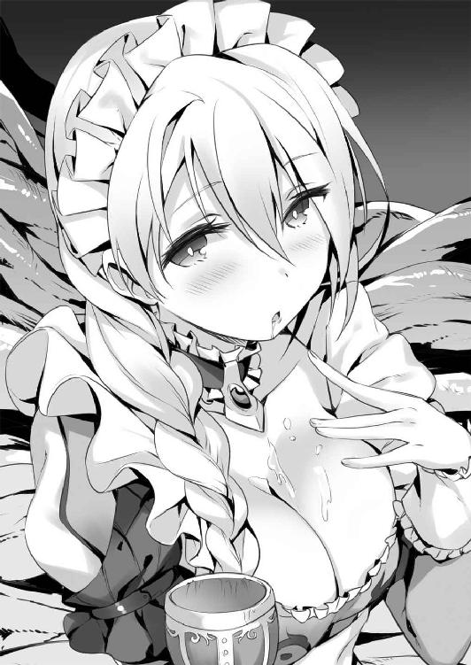
少女は、なんのためらいもなくそれをリューに差し出した。
──おい、これ今この娘が唇をつけてたわけだよな？
三六〇度の円周のどこかに、その痕跡が残っていることになる。そこに唇を重ねるというのは許される行為だろうか？
──まあ、落ち着けよ。受け取らないのも失礼な話だろう？ 俺は悪くない。
自分にそう言い聞かせて、リューはグラスを受け取る。
思わずそわそわしながらグラスの縁を見つめていると────
「──くぅぅ！ やっぱり麦酒よりも蜂蜜酒です」
隣に目を向けると、少女はビンごとラッパ飲みをしていた。
「お、おい。飲み過ぎじゃないのか？」
「はえ？ ちょっとお兄さん、返してください」
見かねて酒瓶を取りあげると、少女は不服そうに頰を膨らませた。愛らしい仕草ではあるが、直前まで酒瓶にかぶりついていたのを考えると素直に可愛いと思えない。
「だいたい、俺のことお兄さんって、君は何歳だ？」
「お兄さんは何歳ですかあ？」
「来月で十七だ」
「じゃあ、同じくらいですね。......同じくらいなのにお兄さんって変じゃないですか？」
「君が勝手にそう呼んだんだよな？」
そう指摘すると、少女はまたへらっと笑った。
──なんか、調子狂うなあ......。
ガシガシと頭を搔きながら、リューは酒瓶を返してやる。
「俺はリュー、戦部リューって言うんだ。君は？」
リューの名前に、少女はハッとしたような顔をする。
──あ、そういえば俺の名前、こっちでも知られてるんだっけか......。
まるで英雄のように持ち上げるのだから、リューの名前くらい戦士以外に知られていても不思議はない......のだが。
「リュー......リューたん......リューぴょん......リュリューのリュー......うーん、しっくり来ないからリューくんで良いですか？」
「真面目な顔でなに言ってるのかな！」
少女は、また「えへへ」と笑った。
──よく笑う子だな。
怒ってばかりのイオリとも常に仏頂面のクレアーレとも違う反応だ。
「わたしは、メアって言います。リューくんもメアって呼んで良いですよ？」
「じゃあ、メア。一つ訊きたいんだけど、なんでそんな格好してるんだい？」
メアはキョトンと首を傾げる。
「わたしの制服ですから」
──ということは、宴で給仕をしてくれてたのか？
それならば、確かに息抜きに料理を摘んで広場を離れたがるのも納得できる。
「リューくんこそ、普通の人なのになんでそんなカタナなんて持ってるんですか？」
──見た目ほど、ぼんやりした娘じゃないんだな。
リューが幻装使いでないことは服装を見ればわかることだ。しかし納刀されたカタナの銘など、そうそう見極められるものではない。
カタナは本来、幻装使いのための武器だ。一般兵に銘のある業物が与えられることはない。だというのに、リューの腰に下げられているのは、花鳥風月の一つに数えられる大業物──〈鳳凰〉なのだ。
〈鳳凰〉の柄に、手を載せる。
「戦友からの、もらいものなんだ」
「お友達の贈り物ですか？ 素敵ですね」
ふにゃっと笑うと、メアは生クリームで装飾された、柔らかそうなスポンジケーキを一つ摘んで懐かしげに空を見上げる。大きな孤月がそこに浮かんでいた。
「わたしにも友達がいたんです。あ、レヴィのことじゃないですよ？ すごいがんばり屋さんで、いっしょにいればなんでもできる気がしちゃうような、そんな子だったんです」
それが過去形で語られてることに、リューは気づいてしまった。
「......その友達とは、どうなったんだ？」
「その子はとってもがんばり屋さんだったんですけど、がんばってもどうにもできないことがあって、もう外には出られない体になっちゃって......神獣さんでも、どうしようもないくらい」
そう語る少女は、それまでと変わらぬ気の抜けた笑みを浮かべたままだった。
ああ、とリューは胸の中に苦いものが広がるのを感じた。
──この娘は、笑って表情を隠してるんだ......。
そんな人間に会うのは、初めてのことではない。〈ウーロニクス〉に所属する人間で、絶望を味わっていない者はいない。大きな絶望をかみ殺すとき、人はこんな顔をするのだ。
視線に気づいたのか、メアは「あ」と口を押さえた。
「はやや......。わたし、なにしゃべってるんでしょうね？」
確かに、初対面の人間に語るような話ではない。そんな内容でも口を滑らせてしまうのが、この酒というものの恐ろしいところであり、魅力でもある。
肩を竦めて、リューはなんでもなさそうに首を横に振る。
「そこまで話したんなら、最後まで聞かせてくれよ。続きが気になっちまう」
失言でも、口にすることで楽になることもある。
メアは、またふにゃりと笑った。
「リューくんは、見かけによらずいい人ですね？」
──俺って、悪人面なのかっ？
悪気がなさそうなのが、余計に痛かった。
「ふ......。俺は盗賊だからな。善良に見えちゃあ、商売にならない」
涙ぐんで強がるリューに、メアは続ける。
「ええっと、どこまで話したんでしたっけ？ ああ、そうだ。友達が外に出られなくなっちゃったってところでしたね」
メアの話にある〝友達〟を襲ったのは病だろうか。それがメアに取って、自分のことのような絶望だったのだろうと感じた。
白い少女は軽く蜂蜜酒を口に含んで続ける。
「でも、その友達には夢があったんですよ」
「......どんな夢だったんだ？」
「──〈王の杖〉──」
それまでのおっとりした声とは打って変わり、凜と厳しい音だった。
その言葉に、祝宴会場の騒音すらもシンと静まり返ったような気がした。メアの膝に乗るレヴィだけがぷるんと揺れる。
「王の、杖......？」
メアは、夢を見るような幸せそうな顔で語り始める。
「昔話の宝ものですよ。神獣さんたちも、本当は人間といっしょに仲良く暮らしたくて、そのためには神獣さんたちが認める人間の王さまを選ばなきゃいけなくって、〈王の杖〉はその王さまを選ぶためのものだったんです」
「神獣が、人と仲良く......？」
リューは耳を疑った。
神獣に禁じられた物語の中には、誰にも抜けない剣を抜いた者が王となり、世界を平和に治めるようなものもある。黄金郷を追いかけていて、リューもその手合いの物語には多少は詳しかった。
だが、神獣と人間が共存を望む物語など聞いたことがなかった。昔話とはいえ、不思議な話だ。
「珍しい、話だな。その、なんていうか他にそういう話は聞いたことがない」
「ずっとずっと昔のお話なんですよ。神獣さんも忘れちゃうくらい大昔の」
それから、また蜂蜜酒をクイッと呷って眼下の水面を見下ろす。
「わたしの友達は、その〈王の杖〉を探してて、そのお話を聞いてわたしもいっしょに探すって約束したんです」
「......今も、探してるのかい？」
メアは、ふにゃりと笑って頷いた。
「はい。絶対にあるって、友達は信じてましたから」
リューはグラスに残った蜂蜜酒をグイッと飲み干した。
「よし、その夢、俺も乗ったぞ」
「はえ？」
「俺は盗賊だ。盗賊に盗めないものなんてない。〈王の杖〉なんて宝があるなら、盗賊として黙ってるわけにはいかないだろう？」
「むぅぅ、リューくんはわたしのライバルになるつもりですか？」
ぷくっと頰を膨らませるメアに、リューは自信のある笑みを返す。
「盗賊は持つべき者から奪い、持たざる者に与えるもんだぜ。俺が〈王の杖〉を手に入れ、君に与える。これで全部丸く収まるだろ？」
メアはポカンと口を開けて、それからやはりへらっと笑った。
「リューくんはおかしな人間です」
「そう思うか？」
「はい。わたしの友達もおかしな人ですけど、リューくんはもっとおかしいです」
そう言って、メアはよろよろと立ち上がった。かなり酔っているらしく、足下がふらついていて怖い。酒瓶を拾ったレヴィは、中身を飲んだのかどこか黄色く染まって見えた。
「そろそろ、行かないとです」
「お、おい、大丈夫か？ 落ちるなよ？」
「大丈夫ですよお？」
大切そうにレヴィを抱え上げて、メアはリューの顔をのぞき込む。
「リューくんの方こそ、もう大丈夫ですよね？」
そう言われて、彼女が自分を元気づけようとしてくれたらしいことに気づいた。
礼を言う代わりに、リューは自慢げに胸を張った。
「ああ、大丈夫だ。宝があるなら、盗賊にできないことなんてないんだよ」
メアはレヴィごと両手を後ろで組むと、楽しげに笑って言った。
「さっきの宝ものですけど、実はもう見つけちゃったんです」
「......ええっ？」
いきなり探すべき宝がすでにないと聞かされ、リューは呆然とした。
「でも、肝心なのはそれが本物かどうかなんです」
メアは小さく手を振った。
「それじゃあ、バイバイです。近いうちに、またお会いしましょう」
そう言って、少女は足場の枝からヒョイと身を投げ出した。
「──メア！」
啞然としていたリューの手は、わずかに届かなかった。
楽しげに落ちていくメアの足は、ぷるぷるとした水獣の上に乗っていた。そして、その落下が非常にゆっくりとしたものであることに、リューは気づいた。
──あの水獣、浮遊能力でもあるのか......？
メアの姿はすぐに枝に隠れて見えなくなったが、水に落ちた音は聞こえなかった。恐らく、レヴィがどこかの枝に着地したのだろう。
「......まったく、君の方がよっぽどおかしな子だと思うぞ」
「──誰がおかしな子だって？」
真後ろから聞こえた冷ややかな声に、リューは飛び上がった。
「イ、イオリ？ いつからそこに？」
そこに立っていたのは、幼馴染みだった。イオリは腕を組むと呆れてため息を漏らす。
「まったく、独りでなにをしているの？」
「......独り？ いや、もう一人いたんだが」
「なに言ってるの？ あんた、ずっと独りでここに座ってたじゃない。あっちからも見えてたわよ？」
リューは愕然とした。
──どうなってるんだ......？
イオリは十五歳で百人隊長まで上った戦士だ。彼女ほどの者が、直前までいたメアの存在に気づかないとは思えない。
「幽霊とでも、話してたってのか？」
「──ひ、ひえ？」
リューの口をついて出た言葉に、イオリが飛び上がった。
「ち、ちょっと、変な冗談は止めなさいよ」
言いながら、すでにリューのマフラーにきゅっとしがみついていた。
神兵や神獣と戦う戦士でありながら、彼女は子供のころから幽霊や怪談のような不気味な話が苦手なのだ。
それから、足下に残る料理の小皿を見遣った。
──幽霊なんかじゃ、なかった。
空に浮かぶ大きな孤月だけが、全てを知っているようにそんな様子を見下ろしていた。
翌日。扉を叩く音でリューは目を覚ました。
──朝......？
戦場から戦場へ渡り歩くのが百人隊長という立場だ。いつなにが起きても対処できるよう、眠りは浅く夜明けには目が覚めるのだが、今朝は起きられなかった。
フーマーが用意してくれた部屋は木の板を組み合わせたもので、一般的な家屋と同様のものだった。窓もあり、さわやかな陽光が射し込んでいる。扉も、しっかりしたものだ。
そんなきちんとした部屋で、久しぶりのベッドだったのだ。寝心地が好すぎたのかもしれない。
「リュー、フーマー隊長が呼んでるわよ？」
イオリの声だった。朝が苦手な彼女よりも遅いということは、結構な寝坊をしてしまったことになる。
「しまった！ 朝に執務室に来いって言われてたんだ」
慌てて飛び起きると、腕の中から気だるそうな声が聞こえた。甘い香りのする、柔らかな感触がそこにあった。
「汝はたわけだのぅ。約束も守れぬようでは盗賊として失格であろぅ？」
「クレアーレはいつも手厳しいな......」
「心外じゃな。これでも甘やかしておるつもりなのじゃ」
「......って、あれ？ クレアーレ......？」
そこで、ようやくリューは自分の状況に気づいた。
同じベッドの上で、肌着姿のクレアーレがリューの腕の中にすっぽりと収まっていた。どうやら腕枕をしていて、そのまま抱え起こしていたらしい。
元々は独りでは眠れないという彼女のためにリューが添い寝をしていたのだが、眠れるようになってからも彼女はしれっと布団に忍び込んでくるのだ。
そよそよと風が吹き抜け、ギイ、ギイと、部屋が軋んで舟のように揺れる。浮遊樹そのものが、揺り籠のように揺れているのだ。そして腕の中には、手枷を付けた美しくも無防備な少女。
背徳的で、幻想的なまでに快適な場所で、リューは震え上がった。
──これは、イオリに見られたら殺される！
寝間着くらい着ろとリューが狼狽え、クレアーレに服を着せるのが毎朝の出来事で、それからイオリを起こしに行っていたのだ。
だから、リューがクレアーレと同じベッドで寝ていることは、イオリに見られたことはなかった。
「もう、聞いてるの？」
カチャリと、ドアノブが捻られる。
「だわあああああああっ、ちょっと待て、今はほら、その、あれだ、まだ服を着てないというか──」
必死で言い訳を始めるが────
無情にも、鍵はかかっていなかった。
扉が開かれ、すでに戦闘服とコートに着替えたイオリの顔が現れた。
「「........................」」
目の前の光景が理解できないというように、イオリが瞬きをする。
「服を、着てない......？」
服を着ていないのは、リューではなくクレアーレの方だった。
サアッと頭から血の気の引くリューの気もしらず、クレアーレが「ふわ......」と欠伸を漏らす。
「ええっと、クレアーレ......なにを、している、の？」
自分を落ち着かせるように問いかけるイオリに、クレアーレは困ったようにリューの腕の中から抜け出す。そしてもたもたと着替えを始める。
「昨夜、リューの様子がおかしかったからのぅ。慰めておったのじゃ」
「慰、める......っ」
どう慰める姿を想像したのか、イオリの顔が真っ青になって、それから朱に染まる。
「あ、んた、とうとう、間違いを......っ！」
「──落ち着けよイオリ。君は、勘違いをしてるぞ」
次にイオリがカタナを抜くだろうことが目に見えて、しかしリューは極めて冷静に笑みを浮かべた。
......もちろん、虚勢だが。
「勘違い......？」
それでも、笑みの意図が見抜けないイオリはわずかに眉根を寄せる。
──よし！ 今なら言いくるめられるはずだ。
欲しいものは奪い、求める者に与える。それがリューの信条であることは、イオリも理解している。ならば、眠れないクレアーレに添い寝が必要だったことも、伝わるはずだ。
言葉が届くだろうチャンスを摑み、リューは威勢良く自分の胸を叩いた。
ただ一つ誤算だったのは────
「俺はただ、来る者は拒まないだけだ！」
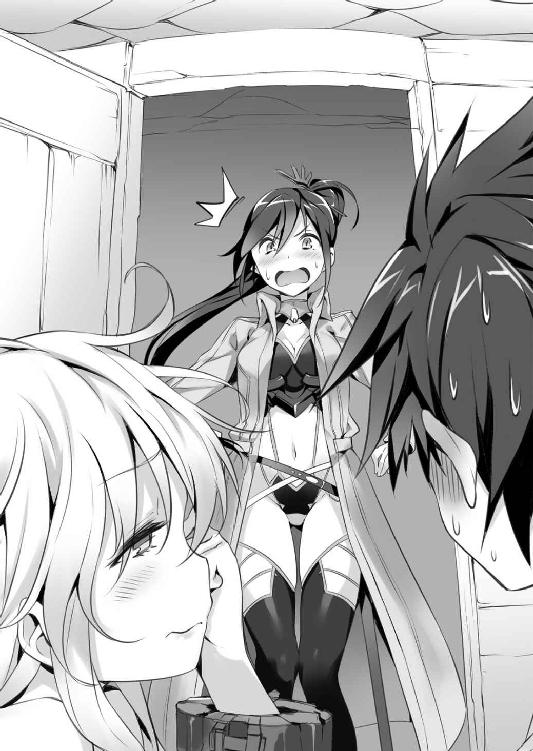
この場で一番気が動転しているのが、実はリューだったということだ。
盛大に取り違えた言葉に、イオリは目眩でも起こしたようにフラッとよろめく。
「これは、庇いようがないのぅ......」
クレアーレまでもが呆れ果てた声を漏らした。
「──この、外道っ！」
あとは、いつも通りの結末が待っているだけだった。
「──その怪我、どうしたんだい？」
凶悪な顔で心配そうな声をかけてくれるフーマーに、リューは苦笑いを返した。
「いや、ちょっと枝から足を滑らせただけだ」
「その割には、火傷が多いように見えるけど......」
イオリは、躊躇なく幻装を叩き込んできた。さすがに究の型までは使わなかったが、破の型まで使ったのだ。これまでになく本気で殺しにかかっていたことが窺える。
当のイオリは、未だにむくれ顔でリューとは口も利こうとしない。
「気にするでない。じゃれおぅただけじゃ」
「ああ、若いからね。そういうこともあるかな」
クレアーレの間違った弁護に、フーマーも間違った納得をする。
──原因は君のはずだろうっ？
批難したい気持ちはあったが、今朝のはクレアーレなりに励まそうとしてくれたらしいとも理解している。
怒りのやり場がないリューに、イオリがふんと鼻を鳴らした。
「......とりあえず、あんたが童女趣味だってことは理解したわ」
「まるで理解してないだろうっ？」
「どうかしら？ クルテルだってそんなに大きいわけじゃなかったし......」
なぜか、イオリは忌々しそうに自分の胸を見下ろす。
確かに、ここ最近になってイオリは急に女性らしい体型になってきた。一年前はまだまだ胸も平坦だったのだ。急な成長に、彼女も戸惑っているのかもしれない。
そこに、フーマーがクックと凶悪な笑い声を漏らした。
「......君たちは、本当に面白いな」
恐らく、リューとイオリのやりとりに微笑ましさを感じたのだろうが、侮辱に対する報復を誓うような顔だった。
──笑った顔も怖い......！
絶対的な恐怖を前にリューとイオリは即座に背筋を伸ばした。
「すみませんでした。話をどうぞです」
「なんでそんなにかしこまるんだい？」
困惑の声を漏らしながら、フーマーはパンパンと手を叩いた。
「まあ、とにかくだ──入ってきてくれるかな？」
執務室の奧の扉──リューたちが入ってきたものとは別の扉が開く。
「彼女が、案内人だ」
そこから現れたのは、見覚えのある少女だった。
「また会えましたね、リューくん？」
「案内人って、君なのか──メア？」
碧い双眸を柔らかく細め、「えへへ」と笑ったのはメアだった。足下には、昨日のぷよぷよとした水塊が従っている。
「驚きました？ ふふふ、じゃあわたしの勝ちですね」
「なんでそこで勝負してるのかな？」
そんなやりとりを見て、フーマーが意外そうな顔をする。
「なんだ、知り合いだったのかい？」
「あ、ああ......。昨日、祝宴の途中で会ったんだ」
「その前に、水浴びも見られちゃってますね」
イオリから殺意が叩きつけられる。
「覗き......？ あんた、どこまで節操がないの？」
「誤解だイオリ。俺はただ寝てただけだし、そもそも先にあそこにいたのは俺の方で、というか裸を見たわけじゃないし、とにかくそのカタナから手を離すんだ」
すでに抜刀の姿勢に入っていたイオリの腕を、リューは必死で押し止めていた。さすがに二度目となると、もう止められる気がしない。
そんな光景に、メアはほんわかと笑う。
「えへへ。仲良しさんなんですね。イオリちゃんもよろしくです」
「え、ええ。まあ、その......よろしくお願いするわ」
毒気を抜かれたように、イオリもつられて頷く。
最後に、メアはクレアーレに向き合う。
──なんだ......？
胸の前で組んだ手が、小さく震えているように見えて、リューは眉を顰めた。
「初めまして。メアって言います。あなたが黄金郷の赤い魔女さんですよね？」
震える手に気づいたのか、クレアーレも片眉を跳ね上げる。
リューが声をかける間もなく、彼女はいつも通りの無気力な声を返す。
「クレアーレじゃ。その呼び名は、今ではもう意味がないものじゃ」
力を封じられた彼女は、黄金郷を自在に開くことはできない。そして、その権利もリューに委ねた。従来の赤い魔女の役割からは、離れてしまったことになるのだろう。
自己紹介が終わったところで、フーマーがコホンと咳払いをする。
「まあ、知っているかもしれないけど、メアはこれで腕は確かだ。彼女なら神獣の──リヴァイアサンの居城にだって侵入できる。......すぐにふらっといなくなるのが、悩みの種なんだけど」
どうやら、メアには隠密としての技能があるらしい。
──そうか。ギガスにいたのも、調査の途中だったってことか。
単独で基地を離れて行動できるということは、扱いとしてはリューやイオリと同じ百人隊長だ。リューたちですら二人ひと組を義務づけられているのだ。完全な単独行動を許されるほどの人間となると、これは頼もしい話だった。
「ではあとは頼むね、メア」
「はぁい」
とても千人隊長に対する返事ではなかったが、彼女の声には聞く者を「仕方がない」と納得させてしまう不思議な色がある。
「じゃあ、さっそく出発しちゃいましょう」
どこかピクニックにでも行くような声で、メアが言う。
イオリが頭痛を起こしたように頭を抱えたが、リューは噴き出していた。
──なんか、この子とは気が合いそうな気がするな。
気の抜けたような態度を取っているが、それでいて背負っているものがある。信念があることを、リューは知っているのだ。
それに誰に対しても態度が変わらない姿は、どこかリューと通じるものがある。
「改めて、よろしくな、メア」
「はい。よろしくです、リューくん」
リューたちを見送ったフーマーは、ふと後ろに気配を感じた。
昨晩、リューが感じたものと同じものだ。
「......どうして、行かせた？」
男か女かもわからぬ、押し殺したような声だった。
そこに立っていたのは、異形としか呼べない姿のものだ。
まず目に留まるのは、顔の半分を覆い隠す〈焰〉と書かれた覆面だ。額から鼻までが隠され、とてもではないがまともに前が見えるとは思えない。
服装も奇異なもので、マントのような外套のそこここに金属片が縫い付けられている。よくよく見れば、それが折れたカタナであることがわかるだろう。
フーマーとは別の意味で恐ろしい姿だった。
階級はリューたちと同じ百人隊長で、アンブラティオの戦士ではない。そして、この異形はなにも今来たわけではない。ずっと、この基地でリューたちを観察していたのだ。
「......本部は、召集を求めている」
リューは神獣を斬った唯一の人間だ。
〈ウーロニクス〉にとっては、初めての希望となり得る存在なのだ。組織を統括する万人隊長たちは、彼の身柄を欲しがっている。
当然、フーマーにも彼らを回収するよう命令が来ていた。この百人隊長は、その伝令でここを訪れたのだ。樹城まで動かしたのも、それが理由だった。
「戦部隊長たちは、ここには来なかったんだよ」
あたかも彼らは死んだとでもいうような顔だが、フーマーの声には慈しむような響きがあった。
「すまないな、東風吹百人隊長。君には少し、迷惑をかける」
「......理由が、聞きたい」
フーマーは腕を組み、懐かしそうに呟く。
「彼女が──友人が、初めて僕に頼みごとをしたんだ。断れるわけがない」
覆面の百人隊長──東風吹は首を傾げる。
「......彼女とは、魔女のことか？」
「さて、どうだろうな？」
返事を濁すフーマーに、東風吹はそれ以上追及はしなかった。
それから、東風吹が静かに動いたのを感じて、フーマーは声をかける。
「追うのかい？」
「......任務ゆえに」
「そうだね。でも、五分だけ、君の時間をくれないかな？」
それが自分の任務への妨害と考えたのか、東風吹は腰のカタナに手を載せた。
「......なにゆえに？」
「君も、僕のお客さんだ。お茶くらい、ご馳走させてくれないかな？」
そう言って、フーマーは紅茶のセットを運んでくる。
「実を言うと、戦部隊長たちに出しそびれてしまってね。無駄にするのももったいないから、付き合ってもらえると嬉しい」
東風吹はますます以て意味が理解できないというように、警戒する。
「......足止めのつもりか？」
「そのつもりだったら、もう少し直接的な手段に訴えるよ。これでも、僕はここの大将なんだ。やりようはいろいろあるだろう？」
大気が軋み上がるような凄絶な笑顔だが、それでもフーマーは親愛の念を示しているつもりだった。
果たして、その心根が伝わったのか、それとも笑みに圧倒されたのか、東風吹はカタナから手を離した。
「......一杯だけなら」
「ありがとう。嬉しいよ」
「........................」
無言でカップを手に取ると、東風吹は覆面を剝ぎ取った。
その素顔を見て、フーマーは意外そうな声を上げた。
「へえ......」
「......なにが言いたい？」
露骨に警戒の声を漏らす東風吹に、苦笑を返す。
「いや。熱いから気をつけて」
「............熱い」
「だから言ったのに......」
カップに唇をつけ、さっそく悲鳴を漏らす東風吹を、フーマーは微笑ましく見つめた。
......現実には、いつでも握りつぶせる命を弄ぶような笑みが浮かんでいたが。
片や神兵もたじろぐ形相──実際に、アクアの神兵は彼を見て戦意喪失したことがあった──の大男。片や折れた刃物を体中に括り付けた修羅の如き異形。
それが、不器用な友人か親子のように、和やかに紅茶を飲み交わしている。それは、どこか地獄めいて異質な空間ではあったが、当人たちはささやかにも幸せそうだった。
やがてフーマーに約束した五分が過ぎるころには、東風吹のカップも空になっていた。
覆面を付け直し、立ち去る東風吹にフーマーは声をかける。
「道中気をつけて。戦部隊長たちは、神獣リヴァイアサンの元へ向かった。無茶はしないようにね」
その言葉が心底意外だったらしく、東風吹は困惑の声を漏らした。
「......あなたは、なにを企んでいる？ 懐柔のつもりか？」
素のままの声に、フーマーは苦笑した。
「なんというか、君はどこか他人に思えなくてね。仲間と思いたいんだが、駄目かな？」
「......なか、ま」
まるで初めてかけられた言葉のように、東風吹は口に出して反芻した。
「......あなたは、この姿を、嫌悪しないのか？」
フーマーは肩を竦めた。
「あいにくだけど、僕の方がよっぽど怖い姿らしいから......」
見知らぬ人間が見たら泣いて逃げ出すような姿ゆえに、二人は同じ痛みを知っていたのかもしれない。どこか友情を抱いたように見つめ合っていた。
「......では、行く」
「ああ。近くに来たらまた寄ってくれよ。またお茶くらいは出させてもらうから」
「......善処する」
そして、異形の百人隊長は影に染み込むように消えていった。
去り際に、ふと思い出したようにこう言い残して。
「......ごちそうさま、でした」
それを見送って、フーマーは自分に頼みごとをした〝彼女〟を思った。
──〈王の杖〉か......。
友人が、それを追っていることはフーマーも知っていた。初めて出会ったときも、彼女はそれを追っている最中だった。
その友人が、ようやく夢を摑めるか否かがかかっているのだ。フーマーとしては、力になってやりたい。
ただ────
「──どうか、眠れるリヴァイアサンが目を覚まさないように」
友人たちの無事を祈りながら、フーマーは几帳面にカップの後片付けを始めた。
第三章 迷える刃の道標
「みんなで、おっでかけ、たーのしいな♪」
どこまでも気の抜けた歌を歌いながら、メアは座席にちょこんと腰掛けていた。
舟を漕いでいるのは、リューだった。また交替で漕いでいくことになるのだが、メアは案内する気があるのかないのか「南へ真っ直ぐ」と言ったきりこんな様子だ。
ちなみに、あのレヴィという水獣は、樹城から降りるとポチャンと自分から水の中に飛び込んでしまった。
「......騒がしいのぅ」
クレアーレが迷惑そうな声を漏らすが、それも無理からぬことだった。
「えへへ。クレアーレは可愛いですね。ひたすらちやほやしたくなっちゃいます。なんでこんなに可愛く生まれてきたんですか？」
レヴィの代わりとでもいうように、メアはクレアーレを膝に乗せて撫で回していた。がっしりと捕縛されていて、逃れることは難しそうだった。
愛らしい顔貌を不服そうに歪め、クレアーレが不機嫌そうに言う。
「......汝は、なにがしたいのじゃ？」
「今言ったじゃないですか。クレアーレが可愛いからちやほやしたいだけですよ？」
抵抗を諦めたのかクレアーレはそれ以上はなにも言わなかったが、どことなく警戒したような表情に見えた。
──なんだろう。メアが苦手なのか......？
確かに初対面であそこまで撫で回されては、苦手意識を覚えるのも無理はないかもしれないが。それにしても、妙に警戒心を抱いているように見えた。
──クルテルのときは、あんな素振り見せなかったよな？
そんな二人を眺め、ふと隣でイオリも同じように怪訝な顔をしていることに気づいた。
「イオリも気になるのか？」
声をかけると、イオリは少し驚いた顔をしつつも、どこか嬉しそうに頷いた。
「うん。リューも気づいてたんだ。メアさん、なにも武器を持っていないわよね」
「え？ あ、いやうんそうだな！ あの透けた服じゃ暗器も隠し持てそうにないし」
「......あんた、どこ見てたの？」
じとっと睨まれて、リューは明後日の方向へ視線を背けた。
しかし言われてみると、確かにメアは武器らしきものをなにも携帯していなかった。
あるいは手荷物の中にあるのかもしれないが、すでに基地の外に出ているというのに手元に置いておかないのも不自然だ。
〈ウーロニクス〉にも非戦闘員はいる。むしろ戦士の数は一割いるかどうかだ。
ただ基地の外に出られるのは──出て、生きて帰ってこられるのは戦士だけなのだ。
神獣の世界は、危険に満ちたものではない。
そこが偉大な神獣と神兵に守られた世界だからだ。人に害を及ぼしうる水獣は言うに及ばず、人同士で争うことすら稀なことだ。だから人は無条件に従い、神獣のために生きる。
だが、その神獣が定めた枠からひとたび足を踏み越えれば、即座に反逆者とされる。
リューたちは神獣に逆らう反逆者なのだ。
それと気づかれれば、問答無用で処刑される。だというのに武器を持ち歩かないというのは、どういうことだろうか。
──フーマー隊長は、腕は確かだって言ってたが......。
そんな視線に気付いて、メアがへらっと笑い返してくる。
「どうかしましたあ？」
「ええっと......メア。君は、カタナを持ってないようだが、どうやって戦うんだ？」
メアは、へらっと笑う。
「わたし、不器用だからカタナなんて触れないです。戦ったりするのも苦手ですよ？」
それはあまりに意外な答えだった。イオリも目を丸くしている。
「では、フーマー隊長が腕が立つと言っていたのはどういうことなの？」
「んー、わたしは戦うの苦手ですけど、助けてくれる友達がいますから」
「それって、あのレヴィっていう......？」
イオリの言葉に頷いて、メアはどこまでも広がる水界へ目を向ける。そこに、彼女が友達と称した奇妙な水獣が紛れているはずだ。
──あのレヴィって生き物は、なんなんだろうな？
どういった絆があるのか、レヴィがメアを守るようだ。
リュー自身も〈銃〉という道具を得ることで、幻装使いと対等の力を手に入れた。水獣の力を借りて戦う者がいたとしても、あり得ない話ではないかもしれない。
「なんというか、驚いたな。てっきり、幻装使いなのかと思ってた。じゃあ、戦士でもないのに、こんな危険なことを？」
「えへへ。リューくんこそ幻装使いじゃないのに、危ないことがんばってるじゃないですか。褒めちゃいますよ？」
座ったまま、頭を撫でるように腕を伸ばしてメアは言う。
「まあ、俺は任務でもあるし。......君は、自分から任務に志願したのかい？」
幻装使いの素養がなくとも、戦士に志願する者は少なくない。それでも、戦って生き残れる者を選んで篩いにかければ、ほんの一握りしか残らない。
メアは自分は戦士ではないと言った。恐らく、戦士になれなかった一般人だろうか。それでも任務に志願するというのはよほどのことだ。
「任務......？」
しかし、メアは今度は困ったように首を傾げていた。
「はえ？ わたし、別に〈ウーロニクス〉の人ってわけじゃないですよ」
「「......は？」」
これには、リューだけではなくイオリまで間の抜けた声を漏らした。
「ち、ちょっと待ちなさい。メアさん、あなた、〈ウーロニクス〉でもないのに、なんで樹城にいたの？」
「それはですねえ、わたしがフーマーさんとお茶飲み友達だからです！」
呆気に取られるリューとイオリに、メアはニコニコと続ける。
「今回のことも、フーマーさんとお茶を飲んでて頼まれたんですよ。フーマーさんが入れる紅茶って、本当に美味しいんですよ？ クレアーレは飲みました？」
どこから取りだしたのか、クレアーレの髪を櫛で梳きながらメアはニコニコ笑顔で言う。
「む......？ いや、まだじゃな」
「飲まないと駄目ですよお。絶対クレアーレも好きな味ですから」
「汝がそう言うのであれば、そうなのであろぅな。機会があれば、いただくのじゃ」
苦手そうな顔をしながらも、クレアーレは素直に頷いていた。
──警戒してるのかと思ったが、そうでもないのか？
放心したように、そんな二人を眺めているときだった。
「茶飲み友達って一体......──ああっ、櫂が！」
あまりの事実に、いつの間にかリューは櫂を取り落としていた。
「なにやってるのよ！」
イオリが慌てて手を伸ばすが、気づくのが遅すぎた。水の流れは思ったよりも激しく、見る見る届かないところまで流されてしまう。
──しまった。予備は一本しかないのに。
舟で移動する以上、櫂を失うというのはあり得ないことではないが、いくつも積める大きさでもない。一つの舟に常備される予備の櫂は一本と決まっていた。
基地を出発した直後に一本失うというのは、ちょっと考えられない失敗だった。
リューが呻いていると、メアがくいくいと手招きをした。
「レヴィ、お願いです」
独り言のようなメアの声に、水面がピチャンと小さく跳ねた。
それから、不意に流されたはずの櫂が動きを変える。水の流れに逆らって、リューの舟に近づいてきたのだ。
──これ、あの水獣がやってるのか？
やがて、櫂はリューの手の届く位置にまで戻ってきていた。拾い上げると、ずっしりと妙に重たい感覚がした。先の方に目を向けると、ぷるんとした水の塊が引っ付いていた。
「ええっと、ありがとうな」
若干、どう反応すべきか戸惑ったが、結局リューはそう返した。
水獣は、気にするなとでも言うようにぷるっと震えて水の中に帰る。
一連の光景に、イオリも感心した声を漏らす。
「すごいわね。あんな水獣、見たこともないけど、どうやって手懐けたの？」
「むぅぅ、レヴィは手懐けたんじゃないです。友達だから、わたしの言うこと聞いてくれるだけです」
むくれて頰を膨らませると、メアは首を横に振る。長い三つ編みが左右へ揺れた。
「友達？ 水獣と......というか、それって水獣なの？」
「さあ？ 水獣さんとは、ちょっと違うような気がしますけど」
「正体も知らないのに、連れて歩いてるの......？」
信じられないと、イオリは頭を抱えていた。
──あれって、浮遊能力もあるんだよな......。
飛行と呼べるほど自在なものには見えなかったが、メアを乗せてふわふわと滑空していったのだ。
櫂を取り戻して気を落ち着けると、リューもフーマーが言っていたことを思い出した。
──そういえば、確かにフーマー隊長も部下じゃないって言ってたっけ。
しかし、そうなるとメアは本当に何者なんだろうか。それ以上にレヴィはなんなんだろうか。疑問は尽きないが、水界は留まることなく静々と流れていく。
謎の多い少女に、しかし良く笑う少女に、リューは悪い気はしなかった。
やがて、陽が暮れるころになってリューたちは浮遊樹の群れに遭遇した。
「えっと、あれはブッフェルスですね。アクアじゃ珍しく肉料理が美味しい街なんです。今日はもう遅いから、あそこで休んじゃいましょう？」
リューは首を横に振る。
「いや、時間が惜しい。先を急ごう」
モナクスの一件もあるが、妙な胸騒ぎがする。ギガスに残してきたクルテルたちがどうなっているかもわからないのだ。
「んー、でも、この先は暗礁になってて、暗いのに通ると危ないんです」
そう言われると、無理に言い張ることはできなかった。
水界でなによりも恐ろしいのは、神兵でも水獣でもなく、暗礁だ。水中は光が屈折して目算も狂う。昼間や水面につき出している岩ならともかく、夜に未知の暗礁を渡るなど自殺以外の何物でもない。
──というか、意外に案内の仕事してくれてるんだな。
「わ、わかったよ。今日は、ブッフェルスで一泊しよう」
「わぁい！ 肉料理です。肉には蜂蜜酒より麦酒ですよね」
──この娘、本当はただご飯が食べたいだけなんじゃ......。
一抹の不安を感じたが、案内人はメアなのだ。リューはおとなしくブッフェルスの港へ舟を着けた。
夕暮れ時ということもあり、港は混み合っていた。
荷下ろしの商船や、漁から帰った漁船、旅人を乗せた定期便などがところ狭しと桟橋を奪い合っている。そこに桟橋が縦横に張り巡らされているのだ。
リューたちは小型の舟ということもあり、かなり奥まで誘導されていた。
「この辺り、かなりの浅瀬だな」
もともと、浮遊樹の育つ環境というものは多くの場合は浅瀬だ。散歩する樹城ならともかく、浮遊樹とは言っても水底に根を張っているのだから。
となると、暗礁が多いのも自然なことだと言えた。
「浅瀬だから、水牛さんもいっぱいいるんですよ」
メアが示す先を目で追えば、なるほど桟橋と桟橋の間に大きな空間が拓けており、そこに長い黒の体毛を生やした水牛が浸かっている。
どうやら、メアが言う肉料理というのは、その水牛を使ったものらしい。
人や荷物を運ぶ乗り物としても使われているのだろう。大きな牛車がいくつも並んでいる。メルカートルがゴンドラの街だったように、ブッフェルスは水牛の街なのだ。
「しかし、こんなに浅いのに、あの辺の大型船はどうやって港に入ったんだ？」
「その辺は神兵さんが水の流れを見てくれてるんです。一つの街に一人はいますよ？」
アクアの街に入るのは、リューたちもこれが初めてのことだ。
まさか全ての街に神兵が常駐しているとは思わなかった。
「......そう。少し厄介ね」
イオリが警戒心を込めて呟く。
リヴァイアサンに会いにきたと言っても、神兵は納得してはくれない。リヴァイアサンに会うまでこの国の神兵とことを構えたくないという理由もあるが、万が一戦闘になって殺してしまったら、街の機能に支障を来す。
何気なくメアが視線を動かし、その先に目を向けると桟橋の奧に光るものがあった。
──珊瑚の......玉座？
樹枝状に広がる、桃色の塊がそこにあった。見ようによっては、浴槽のようにも見えるかもしれない。この珊瑚という生き物は鹹水の海という水域でしか生息できないという話だ。人の身で手に入るものではない。
──神兵の寝床ってことか。
あちらには、近づかない方が良さそうだ。
イオリに目を配らせると、彼女も頷いた。
桟橋に船を着け、今夜の宿を確保したリューたちは街に繰り出していた。
「ええっとですね、ここが一番美味しい肉料理のお店で、お酒が美味しいのはあっち、浮遊樹の実の生菓子が美味しいのがそっちの────」
次々とお店を指差して、メアはリューたちを先導していく。
──俺、このままで良いのかな......。
こうしている今も、王を失ったギガスは混迷を増している。立ち止まっている暇などないというのに、メアのこの無邪気な笑顔を見てしまうとなにも言えなくなってしまう。
通りは枝と枝との間に板を渡した狭いもので、人とすれ違うたびに身を捩らなければならない。ふと岩壁に築かれた鉱山都市を思い出した。頭上のそこここからは店々の看板がぶら下がっており、リューの背丈でも気をつけなければぶつかりそうだ。
人通りは少なくはないが、喧噪の中でも足下からキシキシと床が軋む音が聞こえる。そんな空中回廊を、メアは危なげもなくスタスタと進んで行く。
と、そこでクレアーレの歩みが遅いことに気づいた。
「大丈夫か、クレアーレ？」
「ここは、歩きにくいのじゃ」
通路は狭く、しかも風向きや波に揺られて傾くこともある。クレアーレの愛らしい革靴で歩くのはキツイかもしれない。
「ごめんな、気づかなかった」
そう言って、リューは腰からクレアーレを抱え上げる。
少し驚いた顔をしたが、彼女も抵抗することなくリューの首に腕を回してしがみつく。ジャラリとまた鎖が揺れるが、手枷がリューに痛みを与えることはなかった。ぶつからぬよう、避けてくれたのだ。
フワリと、花のような甘い香りが鼻をくすぐった。
──相変わらず、軽いなあ。
片腕で抱えられるほど、クレアーレは軽い。柔らかくも華奢な体に触れると、とても彼女が神獣であるとは思えなくなる。
メアとイオリは、まだリューたちが遅れていることに気付いていないのか、先に進んでいってしまう。
思えば、寝所以外の場所で二人きりになるのは初めてのことかもしれない。慣れない街の中ということもあり、なんだか妙な気分になって心臓が早鐘を打っていた。
「なあ、クレアーレ。どうしたら国を盗んだことになるんだろうな」
なにか喋らなくてはと思って、口をついて出たのはそんな言葉だった。
クレアーレがわずかに目を大きくして、それから慰めるように微笑んだ。
「こういう言葉があるのじゃ────」
一度言葉を区切ると、普段の気だるそうなそれとは違う、凜とした声音でこう言った。
「──物を盗めば盗賊。国を盗めば革命──」
「革命は、英雄の所業であろぅ。汝は、英雄になりたいのか？」
リューは目を見開き、首を横に振った。
「俺は盗賊だ。英雄なんて、性分じゃあない」
「ならば、それが答えじゃ。汝は盗賊の仕事をすればよい」
「でも、盗みたいんだ」
「なんのために？」
諭すような眼差しに、リューはようやく自信のある笑みを浮かべた。
「君にプレゼントするっていうのは、どうだ？」
これにはクレアーレも目を丸くした。
「わらわに、か......？」
「君は、自分の国を持ったことがないんだろう？ だったら俺が与えてやる」
──わらわは国を持たなかったからのぅ──
舟の上で、ひと言だけクレアーレが漏らした言葉だ。
初めから意識していたわけではないが、自分の行動理念としてはそれが一番正しい。
「国か......」
億千万の月日のなにを思い出したのか、クレアーレの表情は物憂げなものだった。
「俺は君と在り続けると言った。なら国って居場所を作っちまうのが、なかなか手っ取り早いと思わないか？」
「汝は、今それを思い付いたのではないか？」
──う、お......。バレてる。
図星を指されて、リューは鼻白む。
そんな反応を楽しむように、クレアーレはしがみつく腕に力を込めた。
「......汝の腕は、温かいのぅ」
「そ、そうか？」
顔を擦りつけ、クレアーレはどこか満足そうだった。
そして、甘えるようにリューの耳元につぼみのような唇を近づけてくる。
思わず顔が赤くなったときだった。
（気を付けるのじゃ。リヴァイアサンが、汝を見ている）
リューは目を見開いた。
どうやら、それを警告するためにわざと歩みを遅らせたらしい。
（見てるって、どういうことだ？）
問いかけるが、クレアーレは首を横に振るだけだった。助言できるのは、それが精一杯のようだ。
──監視されてるってことか。
追い払おうとしないということは、少なくとも迎え入れるつもりはあるということだろう。リューがなにを考えているのか、見定めようとしているのかもしれない。
「ありがとうな、クレアーレ。......もう、歩けるか？」
本当に歩けなかったわけではないだろう。リューがそう言うと、彼女はどこかムッとしたように目を細めた。
「わらわは汝のものであろぅ？ ならば最後まで離すでない」
......歩くのは、嫌らしい。
「そうだな。君は俺のものだ。君が嫌がっても手放してやらない」
片腕は辛くなってきたのでクレアーレを横抱きに抱え直し、それで周囲の人々にぶつかりながら、リューはイオリとメアを追っていった。
その顔には、いくらか自信の色が戻っていた。
──国を盗む。それ自体は、間違っちゃいない。
石を投げられ、呪いの言葉を吐かれようとも、その目的は過ちではなかった。
だから、まずは進めばいい。恐れずに、今までと同じように。
ブッフェルスの水牛料理は、確かに極上だった。
赤身の残る肉に振りかけられた盛大な胡椒と塩が、味覚と嗅覚を同時に楽しませてくれる。鉄板に添えられた根野菜も色取り取りで美しく、そこに併せた葡萄酒が堪らなく食欲を駆り立てるのだ。
──これは、メアが食べたがるのも無理はない。
腹を満たし、宿へ戻ろうとしたときのことだ。
「はれ......？ レヴィがいないです」
まるで慌てた様子もなく、メアがそんなことを言った。
イオリが心配そうな顔をする。
「レヴィってあのぷるぷるした生き物？」
「はい。ずっと膝の上に乗ってたと思ったんですけど」
「膝の上って、店の中のことでしょう？」
「ええ。ついて来てると思ったんですけど、どこかに落ちちゃったんでしょうか？」
ブッフェルスの街も、浮遊樹の上に建設されている。
同じ樹上の街でも、〈ウーロニクス〉の樹城ほど堅牢なものではない。家々はさすがに木造の家屋だが、通りは枝の間に木の板を渡して通路を作り、そこにロープの手すりを備えただけの吊り橋状態のものだ。
隙間は多く存在し、あの水塊の生き物は転落防止の網などすり抜けてしまうだろう。
「ち、ちょっと、落ちたって下は水界なのよ？ 大事じゃない」
「いなくなるのは、よくあることですから。そのうち戻ってくると思いますよお？」
口ではそうは言っているが、その手がせわしなく三つ編みをいじっていることを、リューは見抜いてしまった。
「仕方ないな。手分けして捜してみようぜ」
「はえ？」
「友達なんだろう？」
そう言うと、メアはパッと表情を明るくした。もともとニコニコしてはいたが、やはり笑顔とは違ったのだと気づかされる。
「えへへ。ありがとうございます」
そこでクレアーレに目を向けて、リューはしまったと思った。
心なしかくたびれた顔をしている。神獣とはいえ、今の彼女は見た目通りの力しかないのだ。体力もあまりないのだろう。船旅の後で見知らぬ街の探索は辛いところだ。
先ほど歩けないと言ったのも、まったくの演技ではなかったのだと気づいた。
それを察したのだろう。イオリがクレアーレの前にしゃがみ込んだ。
「クレアーレは、もう宿で休む？」
「......そうさせてもらうのじゃ」
クレアーレが頷くと、イオリはリューに目を向けた。
「じゃあ、クレアーレはあたしが送ってくわ」
「ああ。......いいのか？」
どちらかというと、レヴィのことを気にしているのはイオリの方に見えたのだが。
なんでもなさそうに、イオリはクレアーレの手を引いていく。
イオリの態度に少し不自然なものを感じたが、リューは首を横に振った。
「じゃあ、捜しにいくか」
リューの顔を見て、メアがキョトンと首を傾げる。
「はや？ リューくんはついて行ってあげなくていいんですか？」
それは疲れたらしいクレアーレのことか、それともどこか様子のおかしいイオリのことか、どちらのことを言っているのかはわからないが、リューは首を横に振った。
「イオリがやるって言ったから大丈夫だ。大丈夫じゃなかったら、必ず俺にそう言う」
そう答えると、メアはまた「えへへ」と笑う。
「信頼してるんですね。ちょっと羨ましいです」
「羨ましいって......その、友達の？」
「まあ、それもありますけど」
青いスカートを揺らして、メアはとことこと足を進める。
「とりあえず、落ちちゃったんなら港の方から上がってるかもしれないです」
「ああ」
メアの背中を追って、リューも歩き始めた。
幹から続く階段を降り、港へ入ってリューとメアは小さく身震いした。
「上は蒸すのに、こっちは冷えるな......」
すでに陽は落ちており、水界から冷たい風が押し寄せてくる。
そろそろ春も終わろうかという季節でこの寒さだ。雪の季節になると浮遊樹も凍るのではないかと思った。
「この季節は仕方ないんです。でも夏はすごく気持ちいいですよ？」
「確かに、水に飛び込んだら気持ちいいだろうな」
「はい。可愛い水着もいっぱい出るんですよ」
それは、リューにはかなり意外な言葉だった。
「水着って、人間用のか......？」
「神兵さんは水着なんていらないですよ？」
「まあ、そうなんだろうけど......」
メアの口ぶりでは、水着というのは水中作業のための衣服ではなく、身につけるのを楽しむものに思える。
つまり、神獣が人間に娯楽を与えているということだ。あるいは人間側が考えたささやかな楽しみ方なのかもしれないが、それを許容しているのは紛れもない事実だ。
──クレアーレも変わり者だって言ってたけど、どんなやつなんだろう？
考え込むリューをよそに、メアはスカートの裾を持ち上げる。真っ白な太ももまでもが垣間見えて、リューは覗き込みたい衝動を必死で堪えた。
「女の子向けのはこんなふうに、小さなスカートがついてるのとか、フリルがたくさんついてるのとかもあって、可愛いんですよ」
「なるほど、興味深いな」
リューとて、十代の少年だった。
哲学の考察でも述べるような表情で、綺麗な太ももを瞼に焼き付ける。クレアーレ並みに無防備な姿を晒されては──目の前の甘美な誘惑に抗うには、彼は若すぎたのだ。
クレアーレやイオリの水着姿がありありと脳裏に浮かんだ。
「気になるんなら、クレアーレとイオリちゃんのも用意してあげましょうか？ リヴァイアサンのお城には結構残ってたと思いますから」
「いいのかっ？ 俺には君が天使に見えるぞ」
心からの感謝を込めてそう言うと、メアはおかしそうに笑った。
「リューくんは不思議な人ですね。そうしてると、とてもフーマーさんたちが言う英雄には見えないです」
リューは人差し指を立てて左右に振る。
「それはそうさ。俺は盗賊だ。英雄なんて上品なものになった覚えはない」
「......？ じゃあ、なんでギガスの神獣さんをやっつけちゃったんですか？」
首を傾げるメアに、リューはわかりやすく渋面を浮かべた。
「どうしても、欲しいものがあったんだ」
クレアーレだ。
彼女を盗んだことでリューはメガロスに追われ、そして倒して道を開くことにした。
「ただ、一番欲しいものは手に入ったが、それ以外が上手くいってない。そいつをどうにかするために、この国に来たんだ」
リヴァイアサン──〈旅人〉でのクレアーレの盟友にして、最強の神獣である彼女に敵う気がしないとまで言わせた神獣だ。
「そうだ。なあ、メア。君はリヴァイアサンの樹上に案内できると言うけど、リヴァイアサン本人は見たことがあるのか？」
──気を付けるのじゃ。リヴァイアサンが、汝を見ている──
せっかくクレアーレが警告してくれたのだ。少しでも身構えておく必要がある。
「ええっと......見たといえば、見たことになるんだと思います」
「どういうことだ？」
「答えにくい質問しちゃ駄目ですよ？」
なんだかよくわからないが、叱られてしまった。
「リューくんこそ、なんでリヴァイアサンのところに行くんですか？」
その質問には少し迷ったが、メアは〈ウーロニクス〉の人間ではない。話しても問題ないように思えた。
「そうだな。一番欲しいものは手に入ったが、それ以外が上手くいってないと言ったろう？ そいつをどうにかするのに、リヴァイアサンは大きな力になる」
「ええっと、つまりリヴァイアサンを盗みに行くってことですか？」
──リヴァイアサンを盗む──
そう考えてここまで来たわけではない。だが、妙にしっくりと来る言葉だった。
「うん。そうだな。盗むんだ。リヴァイアサンを」
「リヴァイアサンの力をですか？」
「まさか？」
リューは首を横に振る。
「力一つでなんの意味がある？ リヴァイアサンがどんなやつかは知らないが、盗むからには全てを、だ。そうでなくちゃ、盗んだ宝に対しても失礼ってものだろう？」
神獣を盗む──傍で聞いたら世迷い言にしか聞こえないそれを、リューは自信を持って宣言した。
メアは少し驚いた顔をして、やがておかしそうに笑った。笑い声は、夜の水界にどこまでも響いていく。陽が暮れて、港も人気が少なくなっているのだ。
「なんだ。ちゃんとわかってるんじゃないですか」
「なにがだ？」
「たぶん、それがリューくんの探してる答えだと思いますよ」
「俺の、答え......──っ！」
問い返そうとして、不意に、強い気配を感じた。視線とは、少し異なる。それでも、自分へ向けられた明確な意志だ。
──こいつは、アンブラティオで感じたのと同じだ。
あのときは一瞬しか感じなかったため、誰に向けられたものかわからなかったが、今度は明確にリューへと向けられていた。
「......メア。少し、離れていてくれるか？」
警戒した声に、メアはよくわからないという顔をしながらもリューから一歩離れる。
「......戦部リューに相違ないか？」
すぐ後ろから聞こえたその声は、男か女かもわからぬ押し殺したものだった。
「汝は、後悔しておるのか？」
宿に向かって歩いていると、不意にクレアーレがそう言った。
「こ、後悔って......なにを？」
「わらわがリューを裏切らぬ限り、汝はわらわを守ると言った。じゃが、リューが汝を裏切った場合のことは、聞いておらぬ」
イオリは息を吞んだ。
「リューが、あたしを裏切るわけないでしょう？」
「リューにそのつもりがなくとも、汝にとってそうだとは限らぬ」
見透かされたようで、今度こそイオリは言い返せなかった。
「......おかしいな。あなた、そんな積極的な子だったっけ？」
覇気もなく、今まで自分からなにかをするようなことはなかったはずだ。
クレアーレはまるで表情を変えないまま、イオリの顔を真っ直ぐ見上げる。
「わらわを外に連れ出したのは──黄金郷を開いたのは、リューと汝じゃ」
「......あたしは、特別なにもしてないと思うけど？」
それは謙遜ではなく、事実だ。
リューはクレアーレを救うと躍起になっていたが、イオリは普段通りのことしかしていない。ましてや黄金郷を開こうなどとは欠片も考えなかったのだ。
それでも、クレアーレは首を横に振る。
「リュー独りではこうはならなかった。汝が側にいたから、リューは最後まで抗った。汝は、リューを否定しなかったであろぅ？ 黄金郷を開いたのは、汝も同じじゃ」
まさか、この無関心を絵に描いたような少女が、自分をそんなふうに思っているとは思わずイオリは戸惑った。
「あ、あたしは、黄金郷に望むようなものなんてないわ」
そう突き放すと、なにを思ったのかクレアーレはキュッとイオリを抱き締めた。
「怯えずとも、良いのじゃ」
小さな少女の抱擁は、まるで母親にそうされたように、不思議なほど心地好かった。
話したいと、思ってしまった。
「......参ったな」
髪をかき上げ、イオリはため息を漏らす。
「......ちょっと、不安......なのかな。上手く、言えないよ」
リューよりも手が早く、幻装使いとして、戦士として生きてきたのがイオリだ。修練は辛かったが、支えてくれるものはいくらでもあった。人の身で強くあろうとするリューへの対抗心もあった。
不安も、恐怖も、押さえて克服すべきものであり、自分から口に出したことはなかった。
「リューが汝と道を違えると思ったか？」
「......ううん。そういうのじゃない。あいつが間違ってると思ったらあたしが引き戻すし、そうでなかったらどこまでもついて行くし、連れていくもの」
そう。その関係は揺らがない。
なにがあっても、どこへ行ってもだ。
「ならば、リューの向かう先に疑問を抱いたか？」
「......どう、だろう。わからないよ。黄金郷を探すのがリューの夢で、ようやくそれが叶ったんだもん。それが間違いだったとは、思わない」
クレアーレの手が、そっとイオリの背を撫でた。
「汝は、リューがどこへ向かっているのか見えているのか？」
キュッと、胸が締め付けられる気がした。
きっと、それが今のこの漠然とした不安の理由なのだとわかってしまった。
「......あいつ、どこに行くのかな。〈ウーロニクス〉には、もう戻らないのかな」
最初に不安を感じたのは、リューがリヴァイアサンに会いに行くと言ったときだった。
クレアーレのために神獣の力を借りる。それ自体は別に文句はない。ただ、それを神獣と敵対する〈ウーロニクス〉の中でどう折り合いをつけるつもりなのだろうか。
それでも、まだ深刻に悩むほどの不安ではなかった。
不安を抱いたのは、アンブラティオの宴でのことだった。
フーマーが開いてくれた祝宴の最中で、戦士たちは「神獣を倒せ」と息巻いて、しかしリューはそれが受け入れられないように出て行ってしまった。
戦士たちの反応は、理不尽なものではない。
イオリとて、クレアーレと出会っていなければ同じ反応を示していただろう。彼女が神獣だと知ったときも、クルテルほどではないにしろ、やはりショックはあったのだ。
ただ、神獣全てを敵視するには、イオリはクレアーレを知りすぎてしまった。黄金郷と、それに置いて行かれてしまう彼女の、あの寂しそうな顔を見てしまったのだ。
それは、本当に憎むべき神獣の顔だったろうか？
だが、それでもイオリは、〈ウーロニクス〉の戦士なのだ。
果たしてリューの進む道は、〈ウーロニクス〉と同じ道なのだろうか？
それが見えないから、イオリも足下がなくなったような気持ちなのだ。
思わず涙が浮かび、クレアーレがそれを慰めるように腕に力を込める。
「汝に見えぬのなら、きっとリューにも見えておらぬのじゃ。ならば、いっしょに探すがよかろぅ。汝らには、それができるはずであろぅ？」
今さらながら、この少女が幼い容姿とは裏腹に、神話の時代から生きている神なのだと気づいた。頭ではなく、体で、心で、そう感じた。
「クレアーレ、なんであなた、あたしにそんな優しくするの？ 黄金郷を開いたから？」
普段の態度と違い過ぎて、そう問いかけずにはいられなかった。
「リューはあなたを奪うと言ったけど、だったらあなただってリューを側に置いておきたいんじゃないの？ あたしは、どちらかというと邪魔なんじゃないの？」
先ほど雑踏の中でリューの腕に抱かれる彼女は、決して普段の仏頂面ではなかった。
そう言うと、クレアーレは心外そうな顔をした。
「汝の言う通り、リューはわらわといっしょに在り続けると言った。子孫を残し、わらわのために血を残すと言った。それは、わらわのものじゃ」
クレアーレは、至極真面目な顔でイオリを見上げた。
「じゃが、子を見るなら、わらわは汝とリューの子が良い」
「ふぁっ？」
頭の中が真っ白になった。
「な、なななななななにを......こ、子供？ 子供ってあの、ああああああたしだってまだ子供みたいなもんだし！」
「......駄目か？ ならクルテルあたりでも────」
「──それは、ヤダ」
とっさに口をついて出た言葉に、クレアーレは淡く微笑んだ。
「ならば問題なかろぅ？」
それから、寂しそうな、しかしやはり嬉しそうな声でこう言った。
「それだけが、今のわらわがここにいる理由なのじゃ」
その声に答えるように、ピシンとクレアーレの手枷が軋んだ。
それはイオリの耳には届かなかったが、彼女は顔を真っ赤にしながらも頷いた。
「ど、努力はするわ」
「わらわは、結果を望んでいるのじゃが......」
「んなっ」
愕然とするイオリの胸に、それまでの不安はもう残っていなかった。
そんなときだった。
遠くの空で、炎と水が噴き上がったのは。
「......あまり、脅かさないでくれないか？ これでも気が小さいんでな」
舟の陰から現れたそれに、リューは呻くように言った。
どの口がそう言うのかと、イオリあたりならば呆れているのだろうが、今は冗談を言ったつもりはなかった。
──後ろを、取られた。
百人隊長の位を与えられていても、リューの力は弱い。幻装使いの素養を持たない彼は、炎を扱うことができないからだ。
力を持たないリューは、技を磨くことで強くなったのだ。隊長格の中でも、純粋な剣の勝負でリューに勝てる者は少ない。
その自分が声をかけられるまで存在に気づけなかったというのは、ちょっと普通のことではない。正直なところ、自信が揺らいだ気分だった。
ゆっくり振り返ると、そこには奇妙な姿をした人影があった。
コツンと桟橋に硬い音を響かせるのは、杖にも似た鞘を持つカタナだ。鍔はない。全身を隠すような外套には、いくつも縫い付けられた刃物の破片。視界を閉ざす覆面には〈焰〉の一文字。あまり関わり合いになりたい容姿ではない。
──焰人の人間だな。
〈焰〉の一文字は炎の意志──つまり〈ウーロニクス〉の秩序を象徴していた。
人が集まれば、衝突が生まれる。力を持てば、人は使いたくなる。争いの種はどこにでも転がっている。
そこで秩序と治安を守るのが、この〈焰〉の一文字を背負った戦士──焰人たちなのだ。
それにしても、奇妙な格好ではあるが。
──まあ、フーマー隊長を見たあとだと、なにってこともないが......。
不気味な姿ではあるが、フーマーのような恐怖は感じない。恐らく、一日基地にいたことで慣れてしまったのだろう。嬉しい話でもないが......。
異形の焰人は、くぐもった声で続ける。
「......伝令。戦部リュー、不知火イオリ、百人隊長両名は速やかに本部へ帰投せよ」
リューは呻き声を漏らした。
──〈ウーロニクス〉からの指令か......。
とはいえ、使者と呼べるほど穏やかな相手ではなさそうだ。加えて、単独で神兵が守るこの街に侵入してきたのだ。階級はリューと同じ百人隊長ということになる。
仮にも神獣を倒したのだ。ギガス支部の救援を優先したとはいえ、確かに立場的には速やかに本部へ出頭しなければならないところだ。それが、さらにアクアへ姿を消したのだから、本部も多少は強引な手を使ってきても不思議はない。
リューは気負う素振りは見せず、泰然とした態度を取り繕う。
「悪いが、そいつは少し遅くなると伝えてくれ」
最低でも、リヴァイアサンに話を付けてからでなければ、〈ウーロニクス〉の任務には戻れない。
リューの返答に、焰人の気配が変わる。
「......帰投は命令。拒否権は存在しない」
「そう硬いこと言うなよ」
あくまで親しげに話しかけると、鋭い殺気が返ってきた。
「......リヴァイアサンとの接触は、命じられていない」
リューは目を細めた。
──気づかれてる。
リヴァイアサンに会ってどうするかまでは見抜かれているとは思いたくないが、それでも組織の命令を無視して動いていることは悟られているのだ。
「従わなかったら、どうなるっていうんだ？」
「......拒否権は、ないと言った」
力尽くで、連れて行くということだ。
「おいおい。そいつは神獣の理屈だぜ？ 従わなかったら反逆者か？」
「......組織には、規律が必要だ。破るなら、罰を」
「できんの？ お前に？」
焰人の殺気が膨らみ、リューもふてぶてしくそれを迎え撃つ。
「リューくん」
「悪いな、メア。もう少し離れた方が良さそうだ」
──やっぱり、今〈ウーロニクス〉に戻るわけにはいかない。
クレアーレが神獣であることが知られたら、どうなるかわからない──それが最初の理由だった。
だが──これで、俺たちは神獣を滅ぼせる──それは、リューの信条ではない。
賛同できない理念の組織に身を置くことに、抵抗を覚えたわけでもない。
──このまま戻ったら、きっと俺は〈ウーロニクス〉のリューでしかなくなる。
樹城の宴のときから......いや、モナクスを通り抜けてから、ずっとしこりのように絡みつく違和感が、とうとう無視できない大きさに膨れ上がっていた。
今のままでは、いずれリューは盗賊ではなくなってしまう。
そんな気がしてならないのだ。
「──俺は盗賊だ。盗賊を従わせたければ、捕まえてみな？」
だから、リューは退くわけにはいかないのだ。
焰人は、憤怒も嘲弄もなく、静かにカタナへ手をかける。
「......任務履行。戦部リューを捕縛する」
そして、同胞であるはずの二人は同時に仕掛けた。
リューが抜いたのは、鎖のついた小刀だった。
──カタナ以外の得物とは、やり合ったことがないよな？
戦士同士で手合わせするときの、リューの常套手段だ。
幻装使いはカタナから炎を練る。それゆえ一般の戦士もそれに倣い、剣はカタナと決まっている。〈ウーロニクス〉の鍛冶技術はカタナのために積み上げられてきたのだ。彼らにとってなまくらであっても、並の刀剣を遥かに圧倒するものなのだ。
ゆえに、戦士たちはカタナでの戦いしか経験していない。神獣にも神兵にも、剣のような武具を使うものなどそうはいないのだから。
リューは、そんな戦士たちにとって戦いにくい戦い方を好む。
向こうはカタナに手をかけているのだ。リューならば、抜いた瞬間を押さえられる。
そう読んで間合いの短い小刀を選んだのだが────
「──っ？」
異形の戦士は、カタナを抜かなかった。
代わりに、刃物を縫い付けた外套で振り払う。
鈍い金属音と火花を散らし、小刀が弾かれる。
──こいつの外套、武器になるのか！
迂闊に間合いに踏み込めば、体当たりを受けただけでも重傷を負うだろう。当然、体術の手合いを仕掛けることも難しい。
姿勢を崩した隙に、焰人はカタナを抜いていた。獣の毛並みのような、不思議な刃文を持ったカタナだ。大きく振りかぶることはなく、短く突きを穿つ。並の戦士では反応もできないだろう、恐ろしい鋭さだった。
だがリューが抜いた小刀も、一本ではない。
左手に握った小刀で、突きをスルリと受け流す。
「名乗っておくぜ──戦部リュー──字は〈盗賊〉だ！」
受け流した小刀からは、鎖が巻き上げられていた。
ジャラリと焰人の手に絡まったそれは、見事にカタナを巻き込む。
「盗賊に出会ったら、大事なもんはしっかり持ってないと奪われちまうんだぜ？」
わずか三手で、リューは焰人の動きを封じていた。
カタナは振るってこそ〝斬る〟という鋭さを発揮するのだ。止まった状態で搦め捕られては、いかなる名刀でも鉄は切れない。
しかし、焰人はまるで感情が欠落しているかのように動じた様子はなかった。それどころか、裁きを与える審判のような声音でこう告げた。
「......こちらも名乗る──東風吹ツムギ────」
「──字は〈刀殺し〉──」
キンッと、澄んだ音を響かせ、リューの小刀が根元からへし折れた。
「──っな？」
なんの感触もなく折れたそれ、リューも声を上げる。
──斬られた？ いや、なにをされた？
守りに回した小刀だけでなく、カタナを拘束していた鎖までもが、ガシャンと敢え無く切断される。
背筋に冷たい汗を感じて、リューは距離を空ける。
「思い出したぜ──刀殺しの東風吹ツムギ──銘だけじゃない、字持ちの幻装使いだ」
リューの字が〝自称〟であるのに対し、こちらは〈ウーロニクス〉から正式に与えられたものだ。
組織の中で幻装使いや戦士が問題を起こすことがある。神獣の力を目の当たりにした戦士などが、自暴自棄に陥ってそういった行動を取ることもある。
カタナを振るう戦士の暴走は、焰人でも止めるのが難しい。そんな中で、特に幻装使い専門の粛清を担う焰人に〈刀狩り〉の名で呼ばれる者がいたはずだ。
外套に縫い付けたカタナは、倒した幻装使いのものだろう。つまり破片の数だけ粛清を行い、生還しているということだ。
──厄介なやつを差し向けてくる。
今までもあまり従順とは言えなかったリューだ。本部も、今度ばかりは力尽くでも従わせるつもりなのだろう。
手元に意識を向けると、小刀はすでに使い物にはならないことがわかった。
──カタナも外套も、使えなかったはずだぞ。
斬られたのだとは思うが、得物の正体はまるでわからない。
このカタナを破壊する見えない刃が〈刀殺し〉の名の由来だろう。
──おまけに、向こうはまだ幻装すら使ってない。
さすがに浮遊樹の上に乗った街で炎を使うわけにはいかないだろうが、特技を封じられてなおリューの上を行くとは信じがたい手練だ。
「おもしろい技を持ってるな。焰人なんか辞めて、盗賊をやってみる気はないか？」
「......その要求は、難しい」
軽口を叩いたつもりだったのだが、存外に真面目な答えが返ってきた。
──なんか、憎めないやつだな......。
生真面目というか、不器用というか、見た目ほど質の悪い人間ではないのかもしれない。
ただ、だからといって和解したわけではない。東風吹が静かにカタナを構える。
「......代わりに、最初の要求を遂行する──戦部リューを捕縛する」
「そっちは断ってくれていいんだけどな！」
新たな小刀を抜いて、リューはふとある疑問を抱いた。
──なんだ？ 刃物の数が、減ってないか......？
外套に縫い付けられた刃物の破片が、妙にまばらに見えた。最初は、全身にまとっていたのではなかったか？
「......どこを、見ている」
しかし考える時間は与えられなかった。
踏み込む東風吹のカタナを、二つの小刀で受け止めるが────
──また、斬られた！
交差させた小刀が、バターのように切断された。
同時に熱気が顔を襲い、慌てて飛び退く。
──カタナに熱......？ だが、炎はないぞ。
動揺しながらも、リューとてただ圧倒されて退いたわけではない。
先ほど切断された鎖を足で搦め捕り、東風吹に向けて蹴り飛ばす。
──あれは？
弧を描くように宙へ跳ね上げられた鎖の中に、リューは奇妙な〝揺らぎ〟を見た。
その正体に気づいたときには、鎖はバラバラに切断されていた。
続けて繰り出される突きを、リューは飛び込むように身を伏せて躱す。背中をカタナが掠めたことに冷たいものを感じながら、東風吹の足下で前転して背後へ抜ける。
互いにすれ違い、振り返ったところで、リューは周囲に停泊する船へ視線を向けた。
「なるほどな。そのカタナの破片、暗器のための固定具か」
壁や床のそこかしこに、カタナの破片が突き刺さっていた。恐らく、最初に小刀を振り払ったときに放っていたのだ。
「糸みたいなもんかな？ それに、炎を乗せてるわけだ。そりゃあ、カタナもひとたまりもない。確かに〈刀殺し〉だ」
カタナとて、刀身の腹を叩かれれば折れる。東風吹ほどの手練が、一方的に攻撃できるのだ。折れないわけがない。
東風吹が、ふむと頷いた。
「......仕留めるまでに看破されたのは、久しい。でも────」
また、カタナを真っ直ぐ突き出す。
「──そこは、蜘蛛の巣の中」
暗器は、東風吹を中心に張り巡らされているのだ。その後ろへ飛び込んだリューに、逃げ場などあるはずもない。
だが、リューは不敵に笑みを返した。
「そうでもないさ。目に見えてれば、躱しようもある」
言いながらリューは小刀を投じる。ガシャンと音を立てて、枝や桟橋に備えられたランプが砕ける。
「ほら、こうすれば見えるだろう？」
暗さを増した港に、ぼんやりと揺らぐ光の筋がいくつも走っていた。どれも陽炎のように揺らいでいて、はっきりと輪郭を見て取ることはできない。それでも糸のような細いものだとはわかる。
これが、数多のカタナを葬ってきた東風吹の炎らしい。
糸を軸にしているところを見ると、序の型──形ある炎をカタナに纏わり付かせる基礎的な型──の変形だろう。しかしイオリにも真似ができるか怪しい、器用な芸当だ。
「炎は光を歪める。理屈じゃあ、そこにいないように見せることもできるんだってな」
だが、それは強い光に隠れて初めて効果が現れるものだ。暗闇の中では、ありのままの炎を曝け出す他ない。
「......〈朧〉という技だ」
種を明かされた東風吹は、仕方なさそうに炎を消す。戦意喪失したのか、外套をひと振りして船に放った刃物も引き寄せた。痕跡を残さぬための仕掛けなのだろう。
「......困った」
「気にするな。あんたが悪いんじゃない。俺が抜け目ないだけだ」
二流の悪党のようなセリフで勝ち誇っていると、東風吹はなおもカタナを前につき出していた。
「......殺さずに捕らえるのが、難しい」
勝負は付いた──そう思ったリューは、東風吹の言葉が理解できなかった。
そして────
「東風吹ツムギが銘じる──来たれ〈嵐世〉」
リューは目を見開いた。
「バカ野郎！ こんなところで幻装なんか使ったら────」
ゴゥッと、炎が視界を覆った。
「メア！」
メアは、東風吹を挟んでリューとは反対側にいた。
「大丈夫ですよお」
こんなときでも「えへへ」と笑うメアは、腰から東風吹に抱えられていた。
向こうも、さすがに非戦闘員のメアまで巻き込むつもりはなかったのだろう。物騒な外套の下に、それでも大切そうに抱き上げている。
「お前......こんなところで幻装なんか使ったら、神兵が来るだろうが......！」
「......それまでに、片をつける」
東風吹は百人隊長のようだ。つまり、余所者だ。
だから、知らなかったのだろう。
すぐ側で水が噴き上がった。
『人の子よ、剣を収めなさい』
リューたちは、港の桟橋で戦っていたのだ。人魚の寝所である、珊瑚の玉座があるすぐ側でだ。
足下から水柱が立ち上がり、その中に若い女性の姿があった。
──これがアクアの神兵──人魚か。
リュー自身が見るのは初めてのことだが、なるほどこれは確かに美しいと思った。中性的な顔立ちで、性別を問わず振り返ってしまうような容姿だ。現に、こんな状況だというのに見惚れそうになっている。
「......失策。対応が早い」
まさか、即座に人魚が駆けつけてくるとは思わなかったのだろう。苦い声を漏らし、東風吹は迷うようにリューと人魚の間に顔を行き来させた。
「はえぇぇ？」
そして、躊躇なくメアの体を宙に放り出す。
リューが声を上げる間もなく、白い少女はその腕にすっぽりと収まった。
「......返す」
それだけ言って、東風吹は人魚へカタナを向ける。
「お前、なんで......」
東風吹の立場なら、メアを盾にリューを戦わせることもできたはずだ。
「......幻装使いは人を守る。それがなによりも、絶対。だから、戦う」
リューは息を吞んだ。
粛清の任を担っていても、ひとたび神兵と相対すれば──人を守る──そのためだけに戦う。それが、この東風吹という幻装使いの在り方らしい。
それは、信念と呼ばれるものだ。
どんな状況でも揺るがない、自分自身の道標だ。
そして、それこそが今の自分に欠けてしまった──揺らいだものだと、気づかされた。
答えの、欠片を手に入れた気がした。
──取り戻さなきゃいけない。
東風吹の背中に、強くそう感じた。
『愚かな。ここは我が主より預かる街。仇なす者に逃げ道などない』
水流が逆巻き、東風吹へ押し寄せる。
「......なら、作る」
その水流が、固体のように断ち割られる。
水流の中から、炎の球体が飛び出した。どうやらあの塊が、東風吹の破の型らしい。
「......行け」
「いいのか？」
「......自分の撒いた種。ただのケジメだ。あと、本部へ帰投しろ」
しつこく念を押しながら、東風吹と人魚は戦い始める。
──堅物だが、筋の通ったやつだ。
素直に、そう思った。
「死ぬなよ、東風吹」
炎と水がぶつかり、東風吹の覆面がハラリと宙に舞う。
その戦場を背後に、リューは駆け出した。
「破の型──鬼火──」
リューたちが港を離れていくのを気配で感じながら、東風吹は炎の球体を走らせる。
拳ほどの大きさで、そこから尾を引くように糸が紡がれる。東風吹の幻装もまた、糸なのだ。普段から糸を使うのも、この幻装の特性から来るものだ。
──まだ、接触の機会はある。
彼らにはまだ他に仲間がいたはずだ。そちらと合流するまで、ブッフェルスを離れはしないだろう。現に、リューは自分の舟ではなく、街へ向かったのだ。
だから、ここで神兵を崩すことにはなんの問題もなかった。
──あれは、人の敵になったわけでもない。
リューの行動には、謎が多い。
東風吹から見ても、なにが目的なのか見当もつかない。あるいは神獣に寝返ったのかとまで懸念したが、それならばここで東風吹を殺しておかなければ彼は破滅だ。
それをしなかったということは、まだ人間側にいるということだ。
東風吹にとって、重要なのはそれだけだった。
リューがどう思ったのかは知らないが、東風吹は善人というわけではない。カタナを振るうのは、ただ信念を貫くためだけだ。
リューの気配を探っていると、人魚からの攻撃が収まる。
『哀れだな』
人魚は、東風吹を見てそう言った。
「......哀れとは？」
『貴様の姿だ。そのような姿に成り果ててまで、貴様はなぜ我が主に刃向かうのか』
いつの間にか自分の覆面が外れていることに、東風吹はようやく気づいた。
──......見られた。
人にも神兵にも見られたくないものが、そこにあった。
人魚の言葉は侮蔑ではなく、心から哀れんでいるものだった。
『我もかつては人の身だったがゆえにわかる。その姿では、同じ人間からも忌避されよう。貴様はなんのために抗うのだ』
東風吹は、静かにカタナを構える。
「......私が、人であるため」
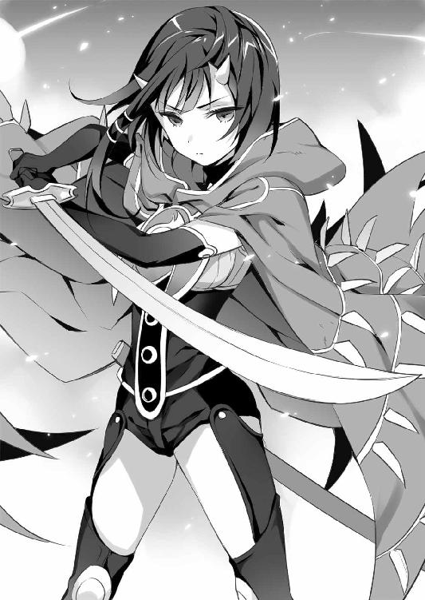
簡潔かつ明瞭な答えだ。
「......人は、私を恐れる。でも、私は人だ」
そういう姿らしいことは、東風吹も理解しているのだ。
人魚が自分を探るように目を細めたのを感じた。
『......そうか。貴様、目が』
東風吹は、目が見えない。幼いころに神獣に刃向かったとされ、そして命は助かったものの光を失った。鍔を持たないカタナが杖のような拵えなのも、見たとおりの杖として使うためなのだ。
身内も失い、絶望した東風吹に与えられたのが、幻装使いとしての力だった。
〈ウーロニクス〉は神獣から捨てられた人々を救う。神獣を滅ぼすとか、勝ち目があるとかないとか、そういったことは東風吹には意味がない。
──手の届く場所にいる誰かを守る──
きっと、それがもっとも人間らしく振るわれる力だ。
焰人に身を置いているのも、ただそれだけが理由だった。人同士でも、傷つけ合うことはある。外では神獣から人を守り、内では幻装使いという暴力から仲間を守る。
異形であっても、己は人なのだ。力を持った、人なのだ。
だから、その力を自分が人であるために振るう。
全ては、己が人で在り続ける証明のために。
「......だから、私は戦う」
それが合図だったように、再び人魚が水流を操る。
水の柱を、東風吹は静かに斬り払う。
炎の球体が宙を翔る。水の柱と衝突し、爆発的な水蒸気を撒き散らして粉砕した。尾を引く糸がかき消されるが、それも球体の疾走と共に蘇る。
真っ向から競り負けた人魚が、焦りに表情を歪めるのがわかった。それはそうだろう。自身が崇拝する神から与えられた力が、たかが人間に破られたのだから。
続いて、人魚は東風吹の鬼火を真似たような水塊を生み出す。何十、何百という数で紡がれたそれが、矢のように解き放たれる。
「......狙いが甘い」
東風吹は目で攻撃を追っているわけではない。
音を、においを、空気の震えを探って、周囲を認識しているのだ。
自分に鬼火をまとわりつかせると、降り注ぐ水塊のうち自分に直撃するものだけを撃墜する。それ以外の水弾はというと────
『馬鹿な......っ』
東風吹は、ふわりと水弾に飛び込むように跳躍した。
狙いを外れた水弾は、弧を描いて追尾を始めるがそんな悠長な動きで追えるほど、東風吹は遅くはなかった。
カタナの間合いに捉えられ、人魚が硬直した。
『こんなっ、人風情が......！』
人魚は決して他の神兵に劣るわけではなかったが、それでも東風吹の方が強かった。
そうして人魚の首を落とそうとカタナを走らせたときだった。
横合いから、雷のような衝撃が全身を襲った。
「......──っ？」
息が詰まり、体が硬直してしまう。
それが攻撃ではなく、ただの殺気だと気づいて、なおのこと東風吹は愕然とした。
「......あ......」
そして、その決定的な隙を、見逃す神兵ではなかった。
再び、飛沫の散弾が放たれる。
──凌げない。
いかに鬼火が強力だろうと、この至近距離からの散弾を防ぐほど万能ではない。
なんとか身を捩り、宙に逃げるも全ては躱せない。
水弾に撃たれて、東風吹は桟橋に投げ出された。
「......ぅあ」
動けなかった。
腕はまだカタナを握ってはいるが、力が入らなかった。
これが、人と神兵の違いだった。
どれほど強い炎を操ろうとも、どれほど優れた技を振るおうとも、たった一つの隙、たった一度の油断で全てを覆される。
忘れてはならない。
世界とは、このように理不尽なものなのだ。
ただ、東風吹はそう後悔はしていなかった。
──百人隊長が二人もいれば、神兵に後れは取らない。
それに、追われる者である彼らが、これだけの時間があって身を隠す手段を講じない理由はない。結果的には、彼らを逃がす時間稼ぎになったのだ。
自分は最後まで人を守るために戦った。
「......？」
死を待つだけの東風吹だったが、人魚は止めを刺しには来なかった。
なんとか気配を探ると、どうやら自分と人魚の間になにかがいるとわかった。
──今の殺気は、これか......？
横から叩きつけられた殺気だ。それがなければ、ここで倒れていたのは神兵の方だったはずだ。
『──仰せのままに』
人魚はその何者かに腰を折ると、水界へと消えていった。
そして、その〝なにか〟は東風吹へと近づいてくる。
──神兵よりも、上位のなにか......？
そんなものが存在するとすれば、それは──
意識が途絶える寸前、東風吹の体に触れたのは──ぷよぷよとした不思議な感触だった。
第四章 水面に潜む神獣
「なにがあったの、リュー？」
息を切らして、駆けてきたのはイオリだった。
「ああっと......、なんて説明したらいいかな」
とっさに上手く説明できなかった。
──〈ウーロニクス〉の使者と斬り合ってたら神兵に見つかった──
言葉にするとそういうことになるが、それがいくらなんでも自分が悪いだろうことはリューでもわかる。
それをどう、叱られないように説明するか────
「──んーと、リューくんとカタナを持った人がケンカして、そしたら神兵さんが怒って暴れ出しちゃったんです」
リューの苦悩を知る由もなく、メアがありのままを答えた。
フラッと、イオリが目眩を起こしたようによろけた。
「......あんた、〈ウーロニクス〉の使者とことを構えたの？」
「し、仕方なかったんだよ！ 相手は焰人で本部に強制連行されそうになったし、まだリヴァイアサンに会ってないんだし」
「だからって使者と斬り合ったら戻ったときになんて言い訳するのよ！」
「お、俺は盗賊だ。自分の自由だって奪い取るもんさ」
「ちゃんとあたしの顔見て言いなさいよ」
それらしいことを言いながらも、わかりやすく目を泳がせていたリューはとうとう返す言葉がなくなり、通路の真ん中で正座した。
「すみませんでした。カッとなってやりました。反省してます」
腹立たしげに腕を組み、イオリがそれを冷たく見下ろす。
「......それで？ 仮にこのままリヴァイアサンに会ったとして、そのあと〈ウーロニクス〉に戻るつもりあるの？」
「それは......」
答えられなかった。
リューもイオリも、〈ウーロニクス〉の戦士なのだ。
だが、神獣であるクレアーレを救いたいというリューの在り方は〈ウーロニクス〉の理念から外れ始めている。
「......今〈ウーロニクス〉に戻ったら、俺は盗賊じゃなくなる気がする」
「なんでよ？」
「〈ウーロニクス〉は神獣の滅亡を望んでいる。そりゃあそうだよな。神獣に捨てられて、死にかけた人間の集まりなんだから。俺は......黄金郷は、神獣に一泡吹かせられる希望らしい」
イオリはなにも言わず、リューの言葉に耳を傾けてくれていた。
「アンブラティオで、神獣を倒せって盛り上がるやつらを、俺は止められなかった。今のままじゃ、俺はそういう流れに逆らえない......吞まれちまう気がするんだ」
信念が揺らいだリューでは、この強い流れに抗えない。
「──痛っ」
ゴチンと、イオリの拳が頭に落ちた。
「だったら、ちゃんと口に出してそう言いなさいな。独りでうじうじ悩んでないで、あたしにそう言ったらいいでしょう？」
「でも俺、〈ウーロニクス〉を裏切るかもしれないんだぜ？」
「それが嫌だったら、あたしはここまでついて来てない」
イオリは、どこまでも揺るがぬ声で、そう言った。
「あんたが行くところにはあたしがついて行く。あたしが行くところにはあんたがついてくる。あんたが間違ってると思ったら、あたしが止めるのよ。あたしはあんたを止めなかった。それは、あんたといっしょに行くってことでしょう？」
どこまでも頼もしい言葉に、リューは思わず涙ぐみそうになった。
──俺、支えられてるんだなあ。
そして、気づいた。
──王よ。俺は盗賊だ。あんたの国、もらい受ける──
リューは、メガロスにそう言ったのだ。
だが、メガロスを倒しても国は奪えなかった。盗んだことにはならなかった。〈ウーロニクス〉は祝福したが、盗賊としてのリューはやはり負けたのだ。
盗賊としての信条が揺らいだ。
だから、進む道が不明瞭になった。
──はっきりさせなきゃいけないのは、そこなんだ。
国を盗むとは、どういうことなのか。
その答えが見つからなければ、世界を盗むことなどできはしない。
相棒の少女は、それを見抜いていたのだ。
「イオリ、お前って、本当に良い女だよな」
「んなっなななななななに言ってるのよ！」
「ぶべらっ？」
素直に礼を言ったら、殴られた。
ピクピクと震えるリューをよそに、イオリはなぜか親指を立てて握った手をクレアーレに突き出していた。
「ちゃんと言えたわよ。ありがと」
言葉の意味はわからなかったが、そう言って笑うイオリは妙に美人に見えた。
「──待たせたわね」
一刻ほどして、舟を回収してきたイオリが言った。
神兵に目を付けられた以上、ブッフェルスに留まるのは危険だ。だが、これ見よがしに逃げれば、それもまた自分の居場所を告げているようなものだ。
それゆえ、神兵に姿を見られていないイオリが舟を回収し、そこで一夜を明かすことにした。せっかくの宿が無駄になってしまうが、宿代を持たなくて船で眠る者は多い。彼らに紛れていれば、休むことも街を出ることも難しくはないはずだ。
「毛布は人数分あるし、交替で見張りにつけば大丈夫よ。......騒ぎを起こしたのあんたなんだから、最初はリューがやんなさいよ？」
「わかってるよ。......港の方はどうだった？」
そう訊くと、イオリはわずかに表情を曇らせた。
「おい......？」
不安が込み上げる。イオリは舟の座席から一枚の布切れを取りあげた。
布には〈焰〉の一文字が刻まれており、それは赤黒く濡れていた。
「リューが言ってた焰人のものだと思う」
「......死んだのか？」
技だけでリューと渡り合うような戦士だったのだ。神兵相手とはいえ、後れを取ったとは信じたくなかった。
イオリは長い髪を揺らして首を横に振る。
「血痕はあったけど、死体はなかったわ。死んだとは限らない......」
慰めるつもりで言ったのだろうが、神兵に後れを取って生き残る可能性は極めて低い。敗れた反逆者を生かしておくほど、彼らの忠誠心はぬるいものではないのだから。
──あれだけの手練が、こんな簡単に......？
神獣に刃向かうというのは、こういうことなのだ。
リューや東風吹より力があっただろう千人隊長のミハエルでさえ、ギガスではなんの戦果も上げられずに戦死したのだから。
対立した相手ではあったが、非があったのはむしろ自分の方だ。あんな出会い方でなければ、他の仲間と同じように笑い合えたはずなのだ。〈ウーロニクス〉から離反しつつあるリューだが、それでも組織の仲間を否定する気持ちは微塵もなかった。
覆面を受け取って、歯を食いしばる。
「......今は、身を隠そう。でないと、あいつを置いて逃げた意味がなくなる」
あるいは、リューが素直に東風吹の要求に応じていれば、こんなことにはならなかったかもしれない。
それでも、もう起きてしまった出来事なのだ。ここで泣きわめいて神兵に見つかれば、東風吹はまったく無意味に死んでしまったことになる。
──いや、まだ死んだと決まったわけじゃあない。
東風吹には、リューに似た抜け目のなさがあった。もしかしたらなにかの策を講じて生き延びているかもしれない。だからリューは毛布を手に取り、率先して舟に乗り込んだ。
と、そこでぷにゃっと奇妙な感触がした。
「うわ──......って、こいつ、レヴィか？」
座席の下に、ぷるぷるとした水塊のような生き物が転がっていた。
「わあ、捜したんですよレヴィ。どこ行ってたんですか？」
水獣を抱き上げ、メアが嬉しそうな声を上げる。
果たして言葉が通じるのか、レヴィは申し訳なさそうにぷよんと揺れた。
──あれって、本当になんなんだろうな......？
メアがあれほど大切にしているのだ。害のあるものではないのだろうが、それにしても得体が知れないと思った。
それから、ふとあることを思い出した。
──リヴァイアサンは、得体の知れないものに対する代名詞──
クレアーレも認めた言葉だ。
そして彼女はリヴァイアサンを変わり者だとも言った。
人の姿を取るクレアーレやメガロスを見ていると忘れそうになるが、そもそも神獣という存在は異形の神々なのだ。
──まさか、な......？
メアに頰ずりされてぷよぷよと波打つ水塊を見て、リューは自分の妄想を笑い飛ばした。
「............」
クレアーレだけが、そんなレヴィを警戒するように見つめていた。
翌朝、他の舟が動き出すのを見計らって、リューたちはブッフェルスを抜け出した。
暗礁地帯は複雑に入り組んでいたが、メアが細かに針路を示してくれたおかげで、危なげなく通過することができた。
「ふふふ、どうですか。ちゃんと案内できるでしょう？」
自慢げに胸を張ると、メアはまたクレアーレを膝元に引き寄せようとする。
さすがに耐性ができたらしく、今度はするりと躱されてしまうが。
「うぅぅ、クレアーレ？ わたしのお膝、空いてますよ？」
「不要じゃ」
「はうぅ？ 存在を否定されました！」
大げさに涙ぐむと、ふとリューが目を留めた。リューはちょうど操船をイオリと交代し、休憩に仮眠を取ろうとしていたのだが。
メアは愛らしく小首を傾げると、両腕を広げた。
「それじゃあ、リューくんが来てもいいですよ？」
「え、いいのか？ それじゃあ......──いや、なんでもないです」
イオリから殺気......どころか剣気をたたきつけられ、リューは震え上がった。
──いや、この重圧はイオリ一人のものじゃない......？
ハッとして隣に目を向けると、クレアーレからもじとっと睨めつけられていた。
──イオリ相手には、こんな顔しなかったよな？
珍しい反応だ。メアだと、どのあたりが問題なのだろうか。しかし、そういった反応を示してくれるのは、素直に嬉しくもある。
「なら、クレアーレに頼むぜ」
そう言うと、クレアーレはどこかムッとした顔をするが、仕方なさそうに自分の膝をぽんぽんと叩いた。どうやら、許可が得られたらしい。
そのままゴロッと膝枕をしようとして──ぶにょん──頭に、奇妙な感触がした。
「──って、うわあ？」
リューが枕にしたのは、いつものぷるぷるした水獣レヴィだった。
「な、なにするんだよ......」
「わらわも、ときには意地悪の一つくらいはしたくなるのじゃ」
そう言って、クスクスと肩を揺らす。
期待を裏切られたことには涙したが、そんなふうにいたずらをしてくれるようになったのは喜ばしくもある。
ふとそんな自分たちを、複雑な表情を浮かべメアがじっと見つめていることに気づいた。
「どうかしたか？」
声をかけると、メアは少し慌てたように笑う。
「少し、友達のことを思い出しただけです」
「友達って......ああ」
樹城で聞いた思い出だ。リューはクレアーレとイオリをちらりと見やる。彼女たちの前で話して良いものだろうか？
メアはなんでもなさそうに首を横に振ると、イオリとクレアーレに向かって話し始める。
「別に隠すようなことでもないですよ。私には大切な友達がいたんです。その友達には夢があって、だけどどうしても叶えられなくて、諦めてしまいました」
「諦めた......？」
意外そうな声を上げたのは、クレアーレだった。
──クレアーレも、興味を持ったのか......？
しかし、意外に思ったのはリューも同じだった。〈王の杖〉の話だとは思うが、その友達が諦めたのだとは聞いていない。
水面を見つめるメアを、なぜかクレアーレが慰めるような、あるいは申し訳なさそうな顔をしたように見えた。
「友達には、待てない理由があったんです。人生をかけた、たった一度だけのチャンスがあって、それに全てを賭けなきゃいけなくて、だけど失敗しちゃったんです。......友達は、そこで壊れちゃいました」
表情は普段と変わらぬふにゃりとしたものだが、どこか思い詰めた声に聞こえた。
珍しい話ではなかった。
神獣は強大過ぎる。なにも考えず、抗わず、ただ従っていれば満たされた幸福な人生を全うできるだろう。だがそれは生きていると呼べるのだろうか？
そこに違和感を抱いてしまった人間は、希望を求める。いにしえの時代から、数多の人々が黄金郷を追い求めたのも、それが理由だ。
だが、一度希望を知ってしまったなら、その希望を失った絶望には耐えられない。
メアの友達は、その希望を失ってしまったのだ。
チャプンと水面に指をつけて、メアは物憂げに続ける。
「別に、友達が悪いわけじゃないんです。あの失敗は、誰のせいでもなかった。友達も、私も、みんな一生懸命がんばって、それでも駄目だったんです。でも同じことはもう二度とできないし、他の方法だってたぶん存在しなかったんです」
それは懺悔だったのかもしれない。
壊れてしまった友達を救えなかった、メアの懺悔だ。そこから感じられたのは、普段のゆるい態度とは正反対の余裕のなさだった。
──メアは、なにかを焦ってるのか......？
同時に、クレアーレが関心を抱いた理由に気づいた。
メアの言う友達は、彼女に酷似しているのだ。彼女もまた、創造主ミトラースに挑み、そして敗れて絶望したのだから。
「......汝はまだ、その夢を追いかけているのじゃな」
苦い声音で言うクレアーレに、メアは珍しく真面目な顔で頷いた。
「諦めてしまうには、あまりに惜しい夢だったんですよ」
メアは、今も信じているのだ。
その夢を叶えられると。それこそが、神獣の居城への道案内という危険な任務を、彼女が引き受けた理由なのだ。
言葉に窮したように、クレアーレが視線を背ける。その先にいたのは、リューだった。
訊くべきか迷ったが、確かめたいという気持ちの方が少し大きかった。
「その友達って、もしかしてクレアーレと似てるのか？」
「はい。本人かと思っちゃうくらいですよ？」
──十年前のクレアーレ......ということは、ないか。
その可能性は考えたが、クレアーレ自身も初めて聞くような顔をしていた。そもそも彼女は十年も牢に閉じ込められていたのだ。別人だろう。
メアは懐かしそうに微笑んだ。
「だから、リューくんたちを見てるとなんだか懐かしくて、羨ましくて」
そんなメアに、リューは当然のように手を差し出した。
「だったら、君もいっしょに来い。俺が、全部与えてやる」
差し出された手を意外そうに見つめて、メアは「えへへ」と笑った。
「リューくんは誰にでもそう言っちゃうんですね」
「誰にでもってわけじゃない。欲しいと思った相手だけさ」
「それで私のことも盗んじゃうんですか？」
「そりゃあそうさ。盗賊が、欲しいものを手に入れない道理はないだろう？」
真っ白な三つ編みに指を絡め、メアは恥ずかしそうな笑みを返した。
「ふふふ。告白されるのって、思ったより気恥ずかしいものなんですね」
「違うからっ！」
「......節操なし」
ミシッと、イオリが握る櫂が軋んだ。
慌てて否定すると、メアは人差し指を唇に当てて悩むような顔をした。
「私たち、まだ出会ったばかりなんですから、すぐにそんなふうには思えないです」
「しかもなんかフラれた？」
「でも────」
「リューくんが私の気持ちを盗んだときは、私のこと、好きにしちゃってもいいですよ？」
あまりに大胆な答えに、リューの方が呆気にとられた。
そして、いつも通りの傲慢な笑みを浮かべる。
「盗んでみろと言われて、奮い立たない盗賊はいないぜ？」
「ふふふ。楽しみにしてます」
まんざらでもなさそうな反応に拳を握ると、背後から冷たい殺気が叩きつけられた。
「......どうにも、元気を持て余してるみたいね？ ちょっと体を動かしてみたらどうかしら。手合わせするなら、相手をしてあげるわ」
抜刀の姿勢に入ったイオリに、リューは目を見開いた。
「おまっ、こんなところでそんなもん抜いたら舟がひっくり返るだろうっ？」
「あたしの腕なら、首だけを落とせる」
「動かす体がなくなっちゃうっ？」
「そんな節操のない体なんて、なくなっても平気でしょう──きゃっ？」
舟が揺れ、体勢を崩したイオリを支えようとリューは手を伸ばすが──
ムニャッと、二つの柔らかな感触が手の平に収まった。
イオリの顔が、耳まで赤く染まり、涙が浮かぶ。
「ひぃ......」
「ま、待っ──」
もみ合いになって、リューとイオリは揃って舟から放り出された。
それからさらに数日して、リューたちは雄々しくそびえる一本の浮遊樹を見上げていた。
「これが、リヴァイアサンの樹城か......」
〈ウーロニクス〉のアンブラティオが複数の浮遊樹の集合体であるのに対し、こちらは一本の浮遊樹だけでできていた。
「神話の時代から存在するから、樹齢も何千年にもなるみたいですよお？」
気の抜けた声で解説するメアに、リューはゴクリと喉を鳴らした。
──ここから先が、リヴァイアサンの住居......。
クレアーレでも敵わないと認める神獣だ。
「さあ、こっちですよ？」
リューの緊張などまるで気づかぬように、メアは慣れ親しんだ友人の家を訪れるように、木の幹へ舟を隣接させる。
「......神兵の見張りは、いないのか？」
さすがに警戒してリューが言うと、メアは首を横に振った。
「今はいないと思いますよ」
「今は......って、どういう意味だ？」
「ここは元々、神兵さんたちの集会所みたいなところなんですよ。だからリヴァイアサンがいないときは、神兵さんたちも来ないんです」
「居城ってわけじゃないのか？」
メアはおかしそうに笑う。
「根無し草のクレアーレに、旅人呼ばわりされちゃうくらいですから」
ふと、リューは違和感を覚えた。
──メガロスは神獣は王だと言ぅたが、あの者は旅人なのじゃ──
いつだったか、そう言ったのは確かクレアーレだ。だが、そこにメアはいただろうか？
思案するリューを置いて、メアは幹に飛び移り、先に進み始める。
「お、おい。待ってくれよ」
クレアーレの手を握り、イオリが後ろを警戒しながらついて来る。
不思議な樹木だった。アンブラティオのように人の手は入っていないが、太い根や枝が通路のように自然と伸びており、それを支えるように植物の蔓が下がっている。
まるで浮遊樹そのものが、人のための道を造っているようでさえあった。
見上げれば、枝や葉のそこここに小鳥や小動物が住み着いており、どこか厳かに自分たちを見つめている。まるで知恵があるかのように────
──というより、王に傅く臣下か......？
メアが言った通り、神兵の気配はない。住み着く生き物は無数にいるというのに、その気配も静かで稀薄なものだ。樹城そのものが眠っているような、そんな感覚だ。
自然が紡いだ回廊は、城の名にふさわしい巨大な幹を囲むように登り続ける。いくら丈夫とはいえ、木の枝など歩きやすい足場ではないはずなのだが、奇妙なことに疲れは感じなかった。それどころか、普段よりも体が軽いような感覚さえ覚える。
やがて、回廊の終わりが見えて、空が開けた。
どうやらそこで一度折れたらしく、野原のような平らな地面が広がっている。
幹と同じ径を持つそこに、一つの玉座が置かれていた。神兵の寝床だという珊瑚の玉座──形は良く似ているが、大きさはむしろそれよりひと回り小さなものだ。
そこから、静かに水が溢れ出していた。
「あれが、リヴァイアサンの玉座です」
「......その、今はいないみたいだな？」
なんとかリューが声を絞り出すと、メアは首を傾げた。
「──いますよ？ リヴァイアサンは、もうここに来てます」
その言葉に応えるように、メアの足下から水獣が飛び出す。
「なっ──」
レヴィは迷わず玉座に疾駆し、そしてそこにチャプンと飛び乗った。
──こいつが、リヴァイアサン......？
それをあり得ないと否定するには、この生き物は不可思議過ぎた。今さらながら、レヴィという名がリヴァイアサンの愛称なのだと気づいた。
「メア、君は、全部知ってて......？」
愕然として問いかけると、メアはスタスタと玉座に歩みより、そして────
こともあろうか、レヴィの上に腰を下ろした。
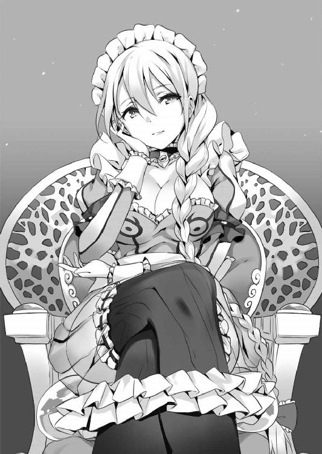
「ふいぃ......。やっぱりお尻の下にはレヴィがいないと駄目です」
「ちょっ──！」
目を剝くリューに、メアはニコニコと笑う。
「駄目ですよ？ レヴィに座っていいのはわたしだけなんですからぁ。あ、でもクレアーレなら許しちゃいますけど」
「そうじゃなくて、君は一体......」
メアは意外そうに首を傾げた。
「ヒントは結構あげたつもりだったんですけど......まだ気づいてなかったんですか？」
「わたしが、水の神獣リヴァイアサン──メアリクス＝ウェルテクスです」
それから、尻の下に敷いたレヴィをぷよぷよと撫でる。
「レヴィがなんなのかは、実はわたしも本当にわからないんですよね。正確には、わたしの力がなんでこういう形を取っているのか、ですけど」
それから、今までの笑みから打って変わり、鋭くクレアーレを見据える。
「さて、クレアーレ......わたしの言いたいことは、わかってますよね？」
途方もない威圧感に、リューは膝をつきそうだった。
──クレアーレを、どうするつもりだ！
〈旅人〉──創造主ミトラースに反旗を翻し、破れた組織──それは神獣が支配するこの世界で反逆を起こすだけの力を持つ集団だったということだ。
その旅人の名を冠する神獣は、果たして今のクレアーレをどう見ているのだろうか。
そんな重圧の中、クレアーレは平然と前に進む。
「少し、離れておれ。巻き添えを食うのじゃ」
「駄目だクレアーレ......！」
伸ばした手は、わずかに届かなかった。
毅然として歩み出るクレアーレに、メアは────
「──大好きぃーっ！」
猫のように、飛びついていた。
コテンと後ろに倒れるクレアーレを抱き締め、愛しそうに頰ずりをする。
「うわぁん！ これですこれ、あふう、柔らかいなあ可愛いなあ」
「......これ、舐めるでない」
「十年間もお預けされてたんですからぺろぺろくらい許されます！」
「許されぬから言ぅておるのじゃが......」
「さらさら！ もふもふ！ すべすべ！ くんくん！」
なんというか、クルテルでも見ているような気分だった。いや、あれとは比較にならないほど酷い。今さらながら、彼女には慎みがあったのだと気づいた。
──敵う気がしないって、こういうことか......。
確かに、この勢いには逆らえる気がしない。
数分して、されるがままだったクレアーレも、そろそろ辛くなってきたらしい。グイッとメアの顔を押し退ける。
「これ、いい加減にするのじゃ」
「むぅう、ずっと側にいても我慢してたのにぃ......」
「そうは見えなんだが......？」
船旅の最中も、メアはがっしりとクレアーレを膝に乗せて逃がさなかった。メアの事情を知ってからは、彼女も無理に抵抗はしなくなっていたのだが......。
──ん？ てことはメアの友達って、クレアーレのことか？
確かにクレアーレはメガロスに囚われ、自由を失った。
だが、〈王の杖〉というものにはどう関わっているのだろうか。それに、諦めてしまったというのは、ミトラースを倒すことだろうか？ そこで初耳のような顔をしていたのはどういうことなのか。
──わからないところが、多すぎるな......。
メアとクレアーレの関係は、まだ核心に迫る部分が曖昧に思えた。
だが、リューの目的は彼女たちの関係を突き止めることではない。
「火の鳥のくせにクレアーレが冷たい」
叱られて、メアはいじけたように唇を尖らせ、人差し指で地面に円を描く。なんというか、威厳の欠片もない姿だった。
「あの、そろそろいいか？」
怖ず怖ずとリューが声を上げると、メアはようやくその存在を思い出したようにポンと手を叩く。
「あ、そうでした。わたしに会いに来たんですよね？」
実際には、最初からいっしょにいたわけだが......。
──メアが神獣だっていうのは驚いたが、よく考えればむしろ好都合だな。
アクアでいっしょに旅をして、彼女が人と共に生きようと考えているのだと感じた。それに懸念していたクレアーレに対する態度も、これを見た限りでは問題ないだろう。
......当のクレアーレは非常に迷惑そうな顔をしているが、そこは我慢してもらおう。
クレアーレとギガスを守るという二つの目的は、初めからメアにとって都合の悪いものではないのだ。断るとは思えない。
「リューくんは、わたしになにを望むんですか？」
本題が切り出され、リューは慎重に口を開く。
「望みは二つある。一つは、クレアーレは神獣に追われてる。彼女を守るのに君の力が欲しい」
旅の途中でも少し話したことだ。メアは特に表情を変えることもなく、小さく頷く。
「......もう一つは？」
「ギガスだ。俺がメガロスを斬ったことで、あの国は不安定になってしまった。いずれ、他の神獣から攻め込まれると思う。だけど、俺が奪ったんだから、ギガスは俺の国だ」
──国を盗むとはどういうことなのか──
その答えは今もまだ見つかっていない。
それでも、ギガスをメガロスから盗んだのはリューなのだ。
「盗んだ以上は、なにがあっても守る。アクアは丘を一つ跨いだ隣国だ。ここからならギガスを守れるはずなんだ」
人からの言葉を咀嚼するように、神である少女は目を閉じた。
「......つまり、リューくんが守りたいものの番人になれってことですか？」
「そうだ。俺の宝を守るのに、今は力が必要なんだ」
リューがそう言うと、メアはどこか落胆したような顔を見せた。
──落胆......？ 神獣が、か？
人間ならばどうということはない表情だったはずだ。
だが、全知全能であるはずの神獣──メアがそんな顔をしたことに、なぜかリューは衝撃を受けた。
それから、一抹の不安がこみ上げる。
クレアーレの盟友だとはいえ、リューは神獣に敵対する〈ウーロニクス〉に身を置いている。メアの立場から見て、好ましいものだとは限らない。
いつの間にか、額に汗が滲んでいた。目の前にいる少女が、いくら愛らしい外見をしているとしても、人間など気まぐれ一つで滅ぼしうる神獣なのだと意識してしまった。
永遠のように長い沈黙は、実際にはせいぜい数秒のことだったのだろう。
やがて、メアは考えながらといった様子で頷いた。
「んー......、まあ、良いですよ？」
断られるかとも思ったが、メアは意外にもそう言ってくれた。
「本当か？」
「クレアーレは大切な友達ですから、頼まれなくたって守りますよ。ギガスだってお隣さんですから、あそこが他の神獣に取られちゃうとわたしも困ったことになっちゃいます」
交渉は、上手く行きそうだ。肩から力が抜けて、思わずへたり込みそうになる。
ホッと安堵の息を漏らすと、メアは少し困ったような顔で問いかけてきた。
「──ただ、わたしからも一つ訊いていいですか？」
「ああ、なんでも答えるぜ」
「そこに、リューくんがいる必要って、あるんですか？」
言われた意味が、とっさに理解できなかった。
「クレアーレを守るならわたしだけで十分だし、リューくんになにができるんですか？」
「それは......ク、クレアーレは俺のものだから──」
「──違います。わたしのものです」
凄まじいほどの断言だった。
「......汝のものになった覚えはないのじゃが」
クレアーレの気まずそうな声が聞こえなかったように、メアは言い募る。
「だってわたしの方がクレアーレのことが大好きです。何千年も大好きでいるんです。それに、ギガスにだってリューくんは必要ないでしょう？」
メアは人差し指を立てて、こう言った。
「だったら、わたしがギガスを支配しちゃった方が現実的ですよ？」
──支配──
そのひと言に、リューは耳を疑った。
「お、おい......。ちょっと待ってくれよ。君の夢は、人と神獣の共存じゃなかったのか？」
「違います。それは手段であって、わたしが欲しいのは別のものです」
──〈王の杖〉──メアの探しものは、それだったはずだ。
つまり、必要以上に人間に寄り添うつもりはないということらしい。
──なら、今まで俺が見てたメアはなんだったんだ？
心臓を鷲摑みにされたような冷たい恐怖を感じて、しかし違うと感じた。
「......いいや、そいつは噓だ」
だが、リューはそれを否定した。
「へえ？ なんでですか？」
「この一週間、俺はアクアと君を見てきた。どこの街も神兵に守られていて、人間への娯楽があった。そこで楽しそうに笑う君を見た。君は、ただ支配するだけじゃなくて、人間といっしょに生きていたはずだ」
メアはおかしそうに首を傾げた。
「それはわたしの国なんだからそうですよ。他の神獣と変わらないです。でも、ギガスはわたしの国じゃないですよ？」
──じゃが、国を率いる神獣としての顔は、やはり他の者と変わらぬ──
クレアーレがそう言っていたことを、思い出してしまった。
「わたしは、わたしの愛しい民とクレアーレを守るためにギガスを落とす。なにもおかしなことはないじゃないですか？」
「そ、それは......」
実に神獣らしい言葉だった。
だが、あまりに神獣らしすぎると思った。
──神獣として正しいやつが、罪人のクレアーレを守るっていうのか？
胸の中に、強烈な違和感がこみ上げてきた。全てを諦め、拒絶していたクレアーレが、頼るべき相手として真っ先に名前を挙げた神獣が、そんな普通の神獣だというのか？
リューは違和感の正体を探るように問いかける。
「わからない」
「なにがですか？」
「君には探しものがあるって聞いた。でも、君が本当に望んでるものはなんだ？」
メアの顔から、失意の色がわずかに薄らいだように見えた。
「わたしの望みはたった一つです。わたしの友達が諦めてしまった夢を叶えてあげたい」
今度はリューがその言葉の意味を咀嚼するように、目を瞑る。
──メアの友達の夢──
それは、〈王の杖〉を探すことか。
それとも人と神獣の共存か。
──あるいは、それ以外のなにか？
だが、答えが出る前にメアは立ち上がってしまった。
「残念ですけど、わたしが話を聞いてあげるのはここまでです」
メアの姿が変貌する。
侍女の衣装がほつれ、同じく透き通った羽衣へと紡ぎ直される。頭部からは水かきのついた角がつき出し、解けた三つ編みは途中から水に変化していた。
──人型の、神獣......？
竜や水棲生物だろうと言われていたのではなかったのか？
その疑問は、次にメアが発した言葉により解決された。
「レヴィ」
メアの呼びかけに、レヴィの体が膨れ上がる──いや、破裂する。
瀑布のような怒号を響かせ水の奔流となったそれは、やがて一つの形を取り始める。
「龍......だと？」
それは、水でできた龍だった。
翼はなく、蛇のような長い胴を持った水龍だ。見上げるほどにそびえるその姿は、巨神メガロスには及ばぬものの、この樹城と比肩するほどの大きさだ。
「これがわたしの夢想流麗──クレアーレの幻想煉獄に相当する、わたしの世界です」
神獣が神たる所以は、己の世界を持っていることだ。
それは一時とはいえ死者を呼び戻すクレアーレの黄金郷であり、そんな死者ですら傷つけられないメガロスの無敵の肉体であり、神兵のそれとは次元の異なる力だ。
──これが、リヴァイアサンの名の由来......！
リューはレヴィこそがリヴァイアサンではないかと感じたことがあった。
その直感は、ある意味では的を射ていたのだ。
「──ぐっ」
同時に、立っていられなくなるほどの重圧を感じた。
それは恐ろしくもあり、同時に安らぎを感じるような、不思議な感覚だった。抗う気力をそぎ落とすような、それでいて服従することで満たされるような、そんな威圧感だ。
これこそが、人が考えることを放棄し、無条件に神獣を崇拝する理由だった。
理屈も、束縛も、必要ない。
ただ〝神〟という存在を目の当たりにするだけで、人は傅かざるを得ないのだ。
その神性を顕わにした神獣を直視して、平然としていられる人間はいない。
かつてメガロスと対峙したときは、黄金郷という支えがあった。直接斬り合ったときには、彼も人の姿を取っていた。
支えもなく、守りもなく、神獣と向き合えばリューでも膝を折る。
隣で同じようにへたり込んだイオリが、悲鳴のような声を上げた。
「リュー！ クレアーレが......」
水龍の背に乗ったメアの腕には、クレアーレがしっかりと捕まえられていた。
「クレアーレ──っ？」
気力を振り絞り、神からの重圧を押しのけ、歯を食いしばって立ち上がると目の前に水の壁が立ちはだかった。
「触っちゃ駄目よリュー！」
イオリに止められて、それが凄まじい速度で旋回していることに気づいた。
水の壁は、リューとイオリを取り囲むように聳えていく。
すぐさま〈銃〉を抜いて水壁を撃つが────
「吞まれた......っ？」
〈銃〉の閃光は、水壁の表面をわずかに弾けさせただけで、そのまま吸い込まれるように消えてしまう。
「わたし、これでも神獣なんですから、そんな小っちゃい力じゃ意味ないですよ？」
緩んだ笑顔に苛烈な意志を込めて、メアはこう宣言した。
「リューくんに、本物の国盗りを見せてあげます」
おっとりした外見ではあるが、長きにわたってメガロスと領地を奪い合っていたのがこの神獣なのだと思い知らされる。
「......本気で、ギガスを襲うつもりか？」
「襲うなんて人聞きの悪い。正式な戦争ですよ？」
物騒な言葉を吐きながら、それでもメアはいつものような笑みを浮かべていた。
「実を言うと、メガロスくんにはもう、宣戦布告をしちゃってるんです。だから、これはリューくんが来る前から決まってたことなんですよね」
一方的にそう告げると、パタパタと手を振った。
「じゃあ、バイバイです」
その笑顔に、アンブラティオの夜のことが思い出される。あのときも、同じ言葉を残してメアはレヴィと共に樹城から去って行ったのだ。
ただ一つ違うのは、今度はまた会いましょうとは言わなかったことだ。
水龍が移動を始める。
「待てよメア、まだ、俺の話は終わってないぞ！」
メアは首を横に振る。
「フーマーさんに約束した時間は、もうお仕舞いです。それまで話を終わらせられなかった、リューくんの失敗です」
ここでリヴァイアサンと言葉を交わした機会は、あくまでフーマーから与えられたものなのだ。
──だが待て。メアは時間が終わりだと言っただけじゃないか？
それはつまり、条件さえ満たせばまだ耳を傾ける気があるということではないか？
「次のチャンスは、自分で摑めってことか」
メアは答えず、ただ淡く微笑み返すだけだった。
「なら聞かなくてもいい。だが、これだけは予告しておくぜ！」
吼えるリューに、水の神獣は今ひととき足を止めてくれた。
今にも膝を折りそうなほど震えながら、リューは神であるメアに人差し指を突き出した。
「君は俺に盗んでみろと言って、俺はその挑戦を受けた。それは、なに一つ変わってない。盗賊は必ず盗みに行く。絶対にだ。覚悟しておけ」
水の壁に遮られた向こうで、メアの顔に再び期待の色が浮かんだような気がした。
「なら、神さまとして一つだけヒントをあげます」
「ヒント......？」
「探しものはもう見つけたと言ったじゃないですか？ 実はそれ、ここにあるんです」
メアはリューに──正確には、その手に握りしめた〝あるもの〟に目を向けた。
反射的に、リューはそれを見る。
たった今、水の壁に向かって放ち、無力にも阻まれた〝杖のようなもの〟を。
──探しものは〈王の杖〉......それじゃあ、まさか......？
息を吞むリューに、メアは静かに告げる。
「リューくん、それは今までたくさんの人間の手に渡ってきました。でも、探しものは見つからなかったんです。今度は、探しものを見つけてくれるんでしょうか？」
それを最後に、メアは水龍の上で背中を向けてしまう。その腕に抱き上げられたクレアーレと、目が合った。
「リュー」
縋るでも、拒絶でもない声。普段のけだるそうなそれが噓のように、感情のこもった声だった。
「──盗め」
ただひと言、クレアーレはそう言った。
そしてその言葉の意味を、リューは確かに読み取った。
「ああ。少し待っていてくれ。すぐに、全部盗んでやる」
一歩も前に進めぬ有様で、それでもリューはそう答えた。
やがて水龍は見えなくなり、リューはイオリに目を向けた。
「追うぞ、イオリ」
「その前に、どうやってここから出るのよ」
水の範囲は狭い。リューの〈銃〉で射貫けなかった以上、イオリの幻装に頼らざるを得ないが────
「──こんなところで究の型なんか使ったら、リューが死ぬわよ？」
そうなのだ。
水壁の中に残された空間は、せいぜい人ひとりが横になれるかという程度だ。究の型でなくとも、幻装など使えば隣にいるリューはただではすまない。
「それに、これは神獣が作った世界よ。神兵のそれとは格が違うはずよ」
人魚が操る水流は、イオリの幻装をかき消したという。
神獣の世界ということは、クレアーレの黄金郷に比肩する力で紡がれたということになる。果たして、究の型が使えたとして、人魚の主たるリヴァイアサンが生み出した壁を破壊できるものだろうか？
「せめて、外にもう一人いてくれれば......」
内側と外側の両方から攻撃すれば、まだ可能性はある。
そんなときだった。
「......まだ、こんなところにいるのか？」
男か女かもわからぬ、押し殺した声が響いた。
「──東風吹、ツムギ......！」
ブッフェルスで行方知れずになった百人隊長が、どういうわけかそこにいた。
「東風吹、生きてたのか」
厄介な相手ではあるが、姿を見てホッとしたというのが、正直な感想だった。
前回と同じく刃のついた外套をまとい、顔にはあり合わせの布切れを巻いていた。
「......ぷよぷよしたものに助けられた」
感情の籠もらぬ声で、東風吹は言う。
「ぷよぷよって......レヴィか？」
「......神兵より格上のなにか。よくわからない」
話を聞いてみると、神兵を仕留めようとした東風吹に殺気を叩きつけ、次はそれで倒れた東風吹を神兵から守ったらしい。
本当に、目的の理解できない話だが......。
「戦闘を止めたかった、ということかしら......？」
イオリが言うと、東風吹も頷く。
「まあ、無事だったんならよかったさ。それより、どうやってここまで？」
「......ブッフェルスから、ずっと付いてきていた」
どうやら〈朧〉で姿を隠し、追跡していたらしい。
──ってことは、メアやクレアーレは気づいてたはずだよな。
気づいていて、放置していたのだ。
そしてここで東風吹を置いて行ったということは────
「東風吹。ここから脱出したい。手を貸してくれ」
リューが言うと、東風吹は思案するように口元へ手をやった。
「......両名が本部に戻るのなら」
憎めない相手だが、やはりそこは譲れないらしい。
「本部には戻る。だが、今は先にやるべきことがあるだろう？」
「......最優先事項と言われている」
「リヴァイアサンはギガスへ攻め込む。そこから人を救うより優先すべきことか？」
メアがどういうつもりなのかはわからないが、状況としてはそういうことなのだ。
東風吹は悩むように俯く。判断できないというより、信条と使命とで葛藤しているように思えた。
やがて、信条が勝ったらしく東風吹はカタナを抜いた。
「......神獣から人を守る。戦部リューがその道を違えぬのなら」
「誓う。盗賊の字にかけて、ギガスをリヴァイアサンから守ってみせる」
東風吹は真っ直ぐに切っ先をつき出し、静かに唱えた。
「......東風吹ツムギが銘じます。究の型──祟り髪」
炎が、東風吹を吞み込む。
肩にかかる髪の延長のように、長く細い炎の帯が集う。炎の糸は東風吹の体にも纏わり付き、機械めいた爪を持つ手甲を紡ぎ上げる。
──究の型......！
百人隊長の中でも扱える者は稀で、イオリでさえ極めたとは言えない高みだ。
しかも────
「なんなの、この力......」
イオリが愕然とした声を漏らす。
水壁ごしに向き合ってなお、膝をつきたくなる重圧を感じた。究の型は何度か見ているが、他の隊長格の中でも群を抜いているだろう。
もはや、神獣のそれに近いかもしれない。
外套が襟巻きのように舞い上がり、顔を覆う布が炎に焼かれ塵となって風に消える。もともと付けていた覆面はイオリが拾っていたのだ。臨時の間に合わせだったのだろう。
その素顔を見て、二人は目を見開いた。
東風吹の素顔は、意外にもリューと同じくらいのものだった。造形としてはかなり整っている部類のものだろう。スッと通った鼻柱に、柔らかな曲線を描く眉。キュッと引き締められた唇も形の良いものだ。
ただ、その瞳はどこか遠くの景色でも見ているような、焦点の合わないものだった。
──こいつ、目が見えないのか......。
だが、リューたちが驚いたのはその瞳ではなかった。
東風吹の額からは、小さな角が二本、生えているのだ。
視線を感じたのか、東風吹は腕で角を隠す。
「......あまり、見られたくない」
「なんでだ？」
リューが首を傾げると、東風吹は困惑を顔に浮かべた。
「......なぜって......」
「格好いいと思うぜ、その角。強そうじゃねえか」
幻装使いが炎を操るのは、人に非ざるものの血が流れているからだと言われている。東風吹の角は、その人に非ざるものの姿──一種の先祖返りのようなものかもしれない。
東風吹が、驚いたようにポカンと口を開いた。
その反応に、リューはなってないというように首を横に振る。
「問題は、そんなことじゃないだろう？」
「......では、なんだと？」
困惑する東風吹に、リューは咎める声でこう言った。
「君が、女の子だとは聞いてないぞ」
外套が炎に巻き上げられ、顕わになった戦闘服は女性のものだった。イオリほどではないが、胸の膨らみもある。
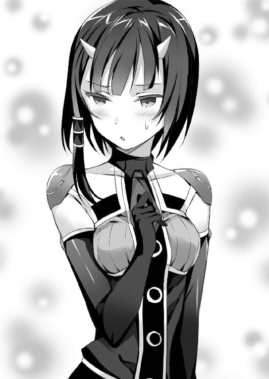
「......問題か？」
「大問題だ」
いかにもご立腹という様子で、リューは水壁の向こうの東風吹に指を突き出す。
「いいか？ 女の子っていうもんはみんな宝物みたいなものだ。俺はその女の子に手を上げたことになるんだぞ？ 盗賊として取り返しのつかないことをするところだった」
「お調子者」
隣から吹雪のような眼差しでイオリから睨まれたが......。
「......気味が悪いとは、思わないのか？」
なんの耐性もなかったら、確かに少しは気味が悪かったかもしれない。
──でも、フーマー隊長に比べたらなあ......。
「──むしろ、可愛いくらいじゃないのか？」
うっかり口をついた言葉に、東風吹は困ったように身を捩った。
「......気遣いは、受け取っておく」
リューの言葉を同情と受け取ったのか、東風吹は素っ気なく顔を背けた。
だが、可愛らしいと思ったのも間違いではない。幼さの残る顔立ちで、二本の角もその顔立ちを引き立てるアクセント程度にしか見えない。
それでも幼いころは忌避の対象にはされただろう。目が見えないことで、それを過剰に感じているのかもしれない。
隣でイオリが再び冷たく「お調子者がっ」と呟いていたが。
「......私が仕掛ける。合わせろ」
「了解だ」
炎でできた糸が寄り集まり、槍のような太さの鞭を紡ぐ。一本あたりに織り込まれた炎は数十から百数十ほどだろうか。それは、いつしか百を数えるほどの量に達していた。
──一体、何千本の炎の糸を紡いだんだ......？
下手をすれば万を越える数かもしれない。それを一個人の意志で操っているのだから恐ろしい技量だ。改めて、刀殺しの字が与えられた意味を痛感した。
──ブッフェルスであんなもの使われたら、どうしようもなかったな。
それを使ってリューを脅さなかったのは、浮遊樹の街だったからだろう。
この幻装は効果範囲が広すぎるのだ。現に、リヴァイアサンの玉座がある広場ですらも炎上を始めているのだから。
東風吹が手甲を振るう。
「......ねじ伏せろ、祟り髪」
ズズズズズズズズンッ──百を超える炎の鞭が一斉に水の壁を打ち据える。周囲へ飛沫が撒き散らされ、見る見る壁の質量が削られていく。
「う、お......っ」
まさに、激震だった。樹城を揺るがすほどの衝撃に、堪らず膝をつく。
ただ炎として操っているだけでなく、あの無骨な手甲で制御し、技へと昇華させているからこその破壊力だ。
──だが、これなら破れるかもしれない。
祟り髪によって薄くなった部位を見定め、落ち着いて構える。
照準を定めて、先ほどのメアの言葉が脳裏を過ぎった。
──〈銃〉って、一体なんなんだ......？
メアは、確かに〈銃〉を示して〈王の杖〉と呼んだのだ。
リューが持つ〈銃〉は、なにも唯一の品というわけではない。これ自体は、神獣の居城や太古の遺跡などから稀に発見される遺産なのだ。刀技を重んじる〈ウーロニクス〉の中で〈銃〉を頼る者は少ないが、隊長格程度の功績があれば手に入る。
だが、この〈銃〉という道具は、ただの人であるリューに神兵を倒す力を与え、メガロスからその力を封じもした。
果たして、これは誰がなんの目的で......いや、どうやって創造したものなのだろうか？
──いや、今は前に進むことだけを考えろ。
クレアーレを、待たせているのだ。
左腕で銃身を支えると、リューは右手でそっと引き金を絞り込んだ。
「貫け！」
内と外からの衝撃に水の壁は大きく震え、そして一呼吸遅れて弾けた。
あとには、霧のような水蒸気の膜だけが残されていた。
──未だに、〈銃〉の連発はキツイな......。
〈銃〉を撃つごとに消費されるのは、使用者の生命力のようなものだ。それは幻装使いも同じはずなのだが、借り物の力ゆえか幻装とは消耗が段違いだった。
──だけど、俺が休んでいいのはここじゃない。
歯を食いしばって踏み堪えると、東風吹が幻装を解いていた。
「......これで進めるな？」
「ああ。助かったこれでメアを追いかけられる......？」
間近で見た東風吹は、どういうわけか酷く戸惑った顔をしていた。
恐れるようでもあり、期待しているようでもある。なにかしらの希望を抱いて、しかしそれを信じることができないような、そんな複雑な感情がにじみ出ていた。
──クレアーレ......？
その姿が、出会ったばかりのころのクレアーレと重なって見えた。
気がついたときには、リューは自然と手を差し出していた。
「なあ、東風吹。俺といっしょに、来ないか？」
焦点の合わない瞳を大きく開いて、東風吹はわずかに手を震わせる。
リューの手を取るように持ち上げるが......しかしそこでなにを躊躇ったのか、やはり手を引いてしまう。
「......本部に戻るまで、だけ」
だから、必要以上に馴れ合うつもりはないらしい。
「でも、問題はまだ解決してないわよ？」
言ったのはイオリだ。
「リヴァイアサンは速いわ。舟なんかじゃ追いつかないわよ？」
「くそ、どうする......？」
手に拳を叩きつけると、ふと遠くの水界に大きな影が揺れていることに気づいた。
──なんだあれ、大きいぞ？
やがてその正体が知れて、リューは信じられないという声を漏らした。
「あれは──アンブラティオだ」
第五章 夢を想う、流れ麗しき者
「えへへ、どうでしたクレアーレ。わたし、格好良かったですか？」
水龍の背で、メアはにこにこ笑顔でクレアーレに問いかける。
「まさに悪の女って感じだったでしょう？ ふふふ、これにはリューくんも怖がってたじたじなはずです」
「汝はあれで怖がらせておるつもりだったのか......」
聞き慣れた呆れ声が、果てしなく愛おしい。
また抱き締めようとするが、スルリと避けられてしまった。
「それで、汝は本当にギガスへ仕掛けるつもりか？」
この問いには、メアも冷たい笑みを浮かべた。
「ええ。メガロスくんにもそう伝えてますし、ここまではわたしの予定通りですよ？」
リューたちと行動を共にする前から、メアはギガスに攻め込むつもりだった。
しかし、クレアーレはそれを咎めようとはしなかった。
「やはり、汝の立場は苦しいのか......」
申し訳なさそうな声に、メアは苦笑した。
「別にクレアーレが気にすることじゃないですよ。わかってて、わたしは〈旅人〉に荷担したんですから。むしろ、真っ先にわたしを頼ってくれたんだから、嬉しいですよ？」
〈旅人〉──クレアーレを中心とする、神獣による組織だ。黄金郷の力を以て、創造主ミトラースを討ち取ろうとした、逆賊である。
どの神獣が何体所属していたかは、メア自身も把握してはいない。それでも、関わっていただろうことは、他の神獣たちに気取られてしまった。
十年前、クレアーレが敗れたことで、メアも周囲の神獣から狙われ続けてきたのだ。他の神獣がギガスを押さえれば、間違いなくアクアへ侵攻してくる。
だから、先に奪う必要があった。
「わたしは神獣として自分の国と民を守る。そのためにはメガロスくんにも滅んでもらわないと駄目です。でも────」
試すように、クレアーレへ目を向ける。
「リューくんがクレアーレの期待通りの人なら、この状況をひっくり返してくれるかもしれないですけどね」
それが、メアがリューに与えた試験なのだ。
クレアーレは肩を竦めた。
「リューは己を盗賊だと考えておる。そして、わらわを奪うと言った。少なくとも追いかけては来るのじゃ」
「それだけじゃあ、不足です。黄金郷だけじゃ、世界は変えられなかったんですから」
「変えるのではなく、盗むのだと、リューは言った」
興味深そうに、メアが目を細める。
「クレアーレは、それをどう考えてるんですか？」
「......まだわからぬ。本人もわかっているのか怪しいしのぅ」
「ええぇ......。それじゃあ駄目じゃないですか」
落胆して肩を落とすと、クレアーレが心外そうに首を横に振った。
「......期待を抱く程度には、わらわは信じている」
珍しく、温かい言葉だった。
「そんなにクレアーレが肩入れするなんて、久しぶりですね。何千年ぶりくらいかな？」
肩を竦めて、クレアーレは言う。
「汝こそ、それを確かめるために、あのような茶番を演じたのであろぅ？ わざわざ人間のふりなどしてからに」
茶番と知りながらクレアーレが付き合ってくれたのは、彼女たちが盟友だからだ。
「わたし、別に騙してはいないですよ？ 誰もわたしが人か神獣かなんて訊かなかったですし、リヴァイアサンのところまではちゃんと連れてきたじゃないですか」
「噓も方便じゃのぅ。それで、側で見た感想はどうなのじゃ？」
メアは腕を組んで頭を捻った。
「魅力はあります。きっとたくさんの人を惹きつけて、導けるでしょう。メガロスくんを倒したことで大きな波も起こしました。成長次第では、本当の英雄になると思います」
そう、人の身で神獣を倒したのだ。この事実に、人も神獣も無関心ではいられない。
これから、世界は大きく揺れる。
「──でも、そんな普通の英雄じゃあ、意味がないんです」
その言葉に、苦しげな顔を見せたのは、クレアーレだった。
そう、英雄や革命家程度では、取るに足らないのだ。なぜなら────
「英雄じゃあ、どこまで行ってもクレアーレには及ばないんですから」
〈旅人〉のクレアーレは、英雄だったのだ。
慈悲深く、それでいて比類なき力を誇り、彼女に挑んだ神獣はことごとく敗れ、そして彼らにもクレアーレは手を差し伸べた。勝者も敗者も引き連れて、全てを導く英雄だった。
それこそ、人間どころかメアをはじめとする神獣ですらも傅いた。彼女のためなら命など軽く投げ出せる。誰もがそう心酔した。
だが、そのクレアーレですら敗北したのだ。
だから、メアは試験を課した。そう、試験なのだ。脱落者に用はない。
「汝は、存外に厳しいのぅ」
「ふふふ。できる女はときには厳しいものなんですよ？」
自慢げに緩んだ笑みを浮かべ、そして言葉通りに厳しく目を細めた。
「......でも、残された時間は少ないです。リューくんにも、わたしたちにも、そして世界にも。賭けるに価する相手か、見誤るわけにはいかないんです」
希望を育てて失敗して、次の希望を探す時間はないのだ。
それから、愛しそうにクレアーレを抱き寄せた。
今度は抵抗もせず、クレアーレが囁く。
「神獣では、ミトラースには勝てない。じゃが、他の可能性がないわけではない。汝がそこまで気負う必要はないのじゃ」
「──違います！」
それは、クレアーレが目を丸くするほどに激しい声だった。
「クレアーレ、本当に覚えてないんですか？ 本当に、諦めちゃったんですか？」
「一度は諦めたのじゃ。じゃが、わらわはまた外に出た。それでは納得いかぬか？」
「──っ」
その言葉に、メアは目の前が真っ暗になるような錯覚を覚えた。
神獣であるメアが、絶望を感じたのだ。
──クレアーレは、根本のところで絶望したままだ......。
リューと行動を共にして、メアが見ていたのは彼ではない。クレアーレなのだ。
彼女もそれに気づいていたから、警戒する素振りを見せていたのだろう。
それでも、クレアーレが笑い、あろうことかいたずらなどする姿を見て、救われつつあるのだと思った。
──だけど、違った。
神獣である自分が憧憬し、友情を感じた少女が、夢を忘れてしまっていた。
それが、メアには堪らなく悔しい。堪らなく、悲しい。
愛しげに、赤い少女の小さな体を抱きしめ、メアは訴える。
「可愛いクレアーレ。あなたは誰よりも強く、気高かった。ミトラースに敗れてなお、あなたは希望であろうとしている。でも────」
「クレアーレだって、夢を見てもいいんですよ？」
言葉は、口の中で苦く広がった。
「夢を見たから、わらわはミトラースに挑んだのじゃ」
「違うんです。夢と希望は違うんです、クレアーレ。あなたは、みんなの希望になるために、自分の夢を諦めちゃったんです」
クレアーレが諦めたのは、戦うことではない。夢を見ることだ。
そして、それを自覚できないほどに忘れてしまったのだ。
最強の神獣にして、神々の英雄クレアーレ──彼女は人からも神獣からも望まれるがゆえに、自分が夢見たささやかな願望を諦めてしまった。
「わらわの夢......」
永すぎる記憶を探るように反芻するクレアーレに、メアは嘆くように囁く。
「わたしは覚えてます。あなたが億千万の孤独から、救いを欲していたことを」
クレアーレが、キュッと背中にしがみつき返した。
「......汝は、残酷なのじゃ」
どれほど焦がれようとも叶わぬ願いだから、クレアーレは諦めてしまった。
それを思い出させたメアは、確かに残酷なのだろう。
「残酷でも卑怯でも、わたしは叶えたいんです」
今でも鮮明に覚えている。最強の名で呼ばれるクレアーレが抱いた、まるで人間の少女のような夢だ。それを、メアは知ってしまったのだ。
──目が覚めたとき、必ず側にいてくれる誰かが欲しい──
不死の神獣であるクレアーレは、永遠を生きねばならない。人はもちろんのこと、神獣ですら彼女についていくことはできない。いつかは、神獣とて滅びるのだから。
彼女の孤独は、誰にも癒やせない。
「そうか......。汝が探していたのは、〈王の杖〉なのじゃな」
今ようやく気づいたと、クレアーレは呟く。
リューには話したが、彼女の前ではその名前は出さなかったのだ。
永遠の牢獄から彼女を救える方法が、たった一つだけ存在する。
「......楽園は、幻想じゃ。わらわは、たくさんの者に〈王の杖〉を与えた。じゃが、探しものは見つからなかった。だから、世界は未だに壊れるのじゃ」
夢を見て、期待を抱いて、それと同じ回数だけクレアーレは裏切られてきたのだ。
それこそ、彼女が生きた億千万という年月の数だろう。
その夢を諦めたことを、誰が責められるだろうか。
──だから、わたしだけは諦めないって決めたんです。
そのためなら、国一つでも犠牲にできる。
「世界が滅んでも、あなたはその先を独りで歩いて行かなければならない。滅びる世界をも見送らなければならない。そんなあなたが抱いた、たった一つの夢なんです。それも叶えてあげられなくて、なにが神さまなんですか」
そんなメアを、逆に慰めるようにクレアーレは撫でた。
「そう、心配するでない。リューは汝を盗むと言った。ならば、一切合切を盗み、救うであろぅ。それが、あやつの信念じゃ」
全てを包み込むような声に、メアは安らぎを覚えた。いつものクレアーレだ。
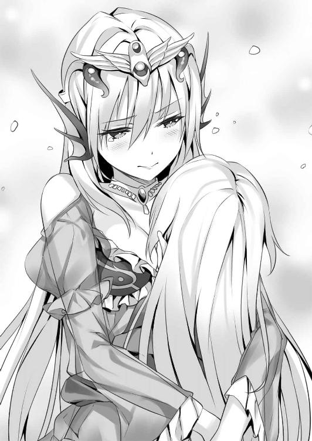
ただ、その安らぎを与えたのがクレアーレなのか、それとも彼女が信じるリューという存在なのかは、神獣でも見極めることができなかった。
「やるからには、アクアを率いる神獣としてわたしは本気でやります。リューくんも、殺すつもりでやりますから」
それで死ぬ程度なら、それだけの男だったということだ。
そこに、慈悲の気持ちは欠片ほどもなかった。
「──いいかい？ アンブラティオで追えるのは、アクアの中だけだ」
そこは、フーマーの執務室だった。イオリと東風吹が同席している他、誰の姿もない。
テーブルに地図を広げ、フーマーが語る。
アクアは国の七割が水界に覆われているということもあり、その領土は広大だ。ギガスの倍はあるだろう。
リヴァイアサンの樹城は、その中央付近を漂っていたらしい。そこからギガスまでの距離は、四千ロングムほどになる。アンブラティオが最高速度で航行し続けたとしても二日はかかる距離だ。
だが、それでもリヴァイアサンに追いつけるかは微妙なところだった。
──メアが、クレアーレに危害を加えることはないと思うが......。
それでも、二日も待たせるとなると穏やかな気持ちではいられない。
苛立ちを、拳を握りしめることで押し殺し、リューは頷く。
「わかってる。リヴァイアサンに取りつけたら、あとは自分でなんとかできる」
アクアとギガスの境には、浮遊樹の大森林が広がっている。樹城では抜けられない。仮に突破できたとしても、移動城塞としての力は失われるだろう。
そもそも、このアンブラティオには戦士以外にもたくさんの人々が暮らしているのだ。そこを戦場にするということは、ギガスで起こったことを繰り返すということだ。
もっとも、実際にはリヴァイアサンを止める算段などなにも立っていないのだが。
──だけど、今重要なのはそんなことじゃない。
無条件にアンブラティオで受け入れられたことに、リューは歓喜よりも困惑の色を滲ませて問いかけた。
「フーマー隊長......。あんたは、どうしてここに？」
「メアがずいぶんご執心だったみたいだからね。万が一ということを考えて、君たちを追いかけていたんだ」
窓の外へ向けられたフーマーの視線を追うと、そこにはもくもくと白い蒸気の煙が噴き上がっていた。樹城の中心部には水車のような羽根車が取りつけられており、それを幻装使いたちが炎で回転させているのだ。
現在、樹城はリヴァイアサンにも迫る勢いで加速を続けている。
だが、リューの疑問は晴れない。それどころか、疑念の色を深めていた。
「フーマー隊長。あんたは、まさかメアが神獣だって知ってたのか？」
「お茶のみ友達だからね。それとなくは聞いてたよ」
理解できなくて、リューは愕然とした。
「なんでそんな......。まさか、脅されてたのか？」
「メアが？ それこそまさかだ」
自分が脅すことはあっても脅されるなどあり得ないという笑みを浮かべ、フーマーは首を横に振る。
──これ、たぶん心外だって顔なんだよな......。
神獣でも殺せるといわんばかりの形相なのだが。
「じゃあ、なんで黙ってたんだ......というか、〈ウーロニクス〉の千人隊長が、神獣の存在を受け入れたっていうのか？」
「その質問に答える前に、僕からも訊きたいことがあるんだ」
リューが頷くと、フーマーは手を組んで顔の半分を隠す。
眼光だけ覗くその姿は、もはや密林で出会う猛獣のようでさえあった。
「今アンブラティオは、リヴァイアサンを追わせている。全力で追わないと、とてもじゃないけど追いつけないからね。でも、追いつく前に目的をはっきりさせないといけない」
目的──それはフーマーの、ではなくリューの目的だろう。
「戦部隊長。君は、リヴァイアサンを討ちに行くということで、いいのかな？」
少なくとも、ここの戦士たちはそう考えており、期待しているのだろう。アンブラティオに乗り込んだ時点で、彼らの戦意が高揚していることは感じられていた。
かつて、リューが抗えなかった流れだ。
そして、目の前にいるフーマーは、その戦士たちを代表する千人隊長なのだ。
「──いいや。あれを倒すつもりはない」
迷わなかった。
揺るがなかった。
フーマーは、恐ろしげな表情で、しかし知恵深い賢人のような声音で問いかける。
「この状況で、その言葉の意味はわかっているかな？」
「ああ──神獣を滅ぼす──それが〈ウーロニクス〉の悲願だ。そして俺には神獣を討てる可能性があって、目の前で神獣が国を一つ滅ぼそうとしてる」
「では、どういうことかな？」
「俺は、盗賊だ。俺は、リヴァイアサンが欲しいと思った。だから、奪う」
言葉の意味を吟味するように、フーマーはゆっくりと口を開いた。
「実に盗賊らしい言葉だとは思う。だけど、そこで君になにができるのかな？」
──そこに、リューくんがいる必要って、あるんですか──
メアの言葉が重なって聞こえる。
リューは、幻装使いですらない、ただの人だ。幻装使いとして強さを極めた者たちでさえ、神獣の前では無力に踏みしだかれる。
そして切り札であるはずのクレアーレは、メアに連れ去られた。黄金郷も奪われたのだ。リュー独りでなにができるというのか。
現実をしかと嚙みしめて、リューは首を横に振る。
「リヴァイアサンに会って、俺はクレアーレとギガスを守るのに、力を貸してくれって言った。メアは、がっかりした顔をしたんだ」
「ふむ、それで？」
「がっかりするってことはさ、その前に期待したってことだよな？ 神獣であるメアが、ただの人間になにを期待したっていうんだ。それが、妙に引っかかった」
フーマーは口を開かず、続きを促す。
「俺には欲しいものがある。叶えたい夢がある。だが、あいつらはどうなんだ？」
「あいつら、とは？」
果たしてそれはただの疑問か、それともリューの真意を見抜いているのか。フーマーは表情を変えずただ答えを待った。
リューは、ただ静かにこう問いかけた。
「神さまでも、夢を見るのか？」
「神獣が、夢を......？」
イオリが意外そうな声を漏らし、それから納得したように頷いた。
「そう、か......。そう、なのね？」
「......どういうこと？」
フーマーはただ沈黙し、東風吹が怪訝そうな声を漏らす。
リューは、〈銃〉を手に取った。
「メアは、探しものがあるって言ってたんだ。〈王の杖〉って道具があって、それを正しい者が持てば人も神獣もいっしょに暮らせるって。神獣も、本当は人と肩を並べて生きたいって、だけど神獣自身もそれを忘れてしまったって」
今ならわかる。あのとき、メアが落胆した意味が。
「俺は、その夢に乗るって言ったんだ。メアが欲しいものを盗んで、与えると言ったんだ」
〈王の杖〉と呼ばれた〈銃〉を突き出し、リューは宣言する。
「人だろうが、神さまだろうが、欲しいっていうんなら与えてやる。誰かから奪ってでもだ。それが俺のやり方だ。俺はメアを倒しに行くんじゃない。メアの夢を叶えに行くんだ」
与えることで、奪う。
それが、リューの盗賊としての信念だ。
そして、それこそが彼女を盗む唯一の方法だ。
その答えに、フーマーは射貫くような凶悪な視線でリューを見据える。
「それが、君の答えなんだね？」
「そうだ」
「それが〈ウーロニクス〉の理念に反するとも理解してるんだね？」
「そうだ」
退かなかった。
そんなリューに、フーマーは────
「ありがとう」
凶悪な、しかし優しい顔で、そう言った。
「なんで、あんたが礼を言うんだ......？」
「さっきの質問に答えよう。どうして僕がメアを神獣と知っていて、黙っていたか」
かつてこの部屋に集まったとき、メアとフーマーは親しい友人のようでさえあった。
それは、どういうことだったのか。
「──そもそも、アクアの〈ウーロニクス〉は、リヴァイアサンと敵対してはいないんだ」
「「「は......？」」」
これには、リューだけでなくイオリや東風吹でさえも啞然とした声を漏らした。
「代々、大将が替わるたびに彼女が現れ、協定を結んでいたんだよ。もちろん、部下たちは知らないことだけどね」
「なんで、またそんなことを......」
「〈旅人〉って言ったかな。メアは、そういう組織に関わっていて、いつか自分も倒れるかもしれないと考えていた。だから、そのときは僕たちがアクアを守ってほしいってね」
リューは理解できないという顔をした。
「俺が言うのもなんだが、メアは神獣だろう？ あんたらにとっては、憎い敵なんじゃないのか？」
「そうだね。だけど、君が言ったことだろう？」
「俺が言ったこと？」
「──神獣でも夢を見る──そう知ったら、なんだか憎めなくなってしまってね。きっと、先代も、その前も、みんなそうだったんじゃないかな」
──神獣さんたちも、本当は人間といっしょに仲良く暮らしたくて、そのためには神獣さんたちが認める人間の王さまを選ばなきゃいけなくって──
幸せそうに、メアが語った物語だ。
その夢に乗ったのは、リューだけではなかったのだ。
「フーマー隊長、あんたは、人と神獣が手を取り合える日が来るって、信じてるのか？」
「笑い飛ばしてしまうにはあまりに眩しくて、もったいない夢じゃないかな」
その言葉で、ようやくリューもメアが見た夢が見えた気がした。
同時に、どうしてもわからなかった疑問の答えが、ぽんと転がり出した。
──ああ、そうか。だから俺は、ギガスを盗めなかったんだ。
気づいてしまえば、とても簡単な話ではないか。
「神獣が夢見て、人が信じるなら、きっとやれる」
あとは、ただ盗めばいい。
顔を上げたリューは、自然と自信のある笑みを浮かべていた。
それは、自分を震い立たせる虚勢とは、明らかに違うものだった。
二日後──アンブラティオはようやくリヴァイアサンに追いついていた。
追いつくまで、アクアの南端から北の国境にまで来てしまっていた。もう少し遅ければ、大森林を越えられるところだった。
「よし、これなら届く！」
イオリの夜叉雛には、飛行能力がある。持続時間の短い究の型だが、樹城からリヴァイアサンの背に飛び乗る程度なら、問題はないはずだ。
だが、イオリは難しそうな顔をした。
「......無理だわ」
「無理？ なんで......」
「お互い、速すぎる。空気の圧力に負けて押し戻されるわ」
イオリの夜叉雛はあくまで跳躍と滑空であり、凧のそれなのだ。鳥の飛行能力とは違う。距離は届いても、風の抵抗に減速は免れないということらしい。
「なにか、踏み台になるものでもあれば話は違うけど......」
モナクスの城壁を飛び越えたときも、戦艦という踏み台を使って跳躍したのだ。
だが、水界に覆われたアクアには踏み台になりうる陸地自体が見当たらない。
「......踏み台があれば、届く？」
声を上げたのは、東風吹だった。
「なにか、考えがあるの？」
「......一度だけなら、飛ばせられる」
そう言われて、東風吹の幻装の形を思い出した。
「君が、踏み台になるつもりか？」
「......然り」
「危険じゃないのか？」
イオリの夜叉雛は炎の噴射で跳躍しているのだ。踏み台になるということは、その噴射をまともに受けることになる。さらには神性を顕わにした神獣の世界に墜ちるのだ。
東風吹は意外そうな顔をした。
「......あなたたちよりは、マシ。それよりも、リヴァイアサンからの迎撃が問題」
確かに、自分の妨害をするだろうリューたちを、リヴァイアサンが撃退しない理由はない。跳び回る羽虫をはたき落とす程度の感覚で、撃ち落とされるだろう。
「それは、躱してみせる」
神獣の一撃に耐えられる人間は存在しない。人として究極の一撃を放ったはずのミハエルですら、メガロスの一刀には粉砕されたのだから。
「不知火隊長の究の型には身代わりの能力もある。決して不可能な話ではないと思うよ」
励ますような言葉だが、フーマーの顔に浮かんでいるのは酷薄な笑みだった。
──やっぱり慣れないなあ......。
この凄まじい顔を見てしまっては、やはり東風吹の角程度など可愛らしいものだ。
「......ところで、あなたたちはなにをやっているの？」
困惑しきった声で問いかけたのは、イオリだ。
無理もない。どういうわけかフーマーは、甲板にテーブルを広げて東風吹と紅茶を飲み交わしているのだ。
間違っても、これから神獣に決戦を挑む空気には思えない。異様な空気にリューも問いかける勇気がなかったのだ。イオリを勇者だと褒め称えたい気持ちだった。
「......茶を飲み交わすと、約束した」
どうやら、出発前にそれを果たしていたと言いたいらしい。
「ええっと、君たちは、仲が良いのか？」
「......先日、初めて顔を合わせた」
「じゃあ、なんで？」
「......仲間、と言ってもらった」
嬉しかったらしい。光のない双眸が、わずかに緩んでいた。
──この娘、実は人懐っこいんじゃないかな......。
なんで焰人などにいるのか。
「......なにか？」
視線を感じ取ったらしく、東風吹が怪訝そうな顔を向ける。
「いや、君にはもっと陽の当たる場所の方が似合う気がするよ」
「......そこは、私には眩しすぎる」
その言葉から、リューは確かな憧憬を感じた。
「なあ、東風吹。この戦いが終わったら、この前の話、もう一度考えてくれないか？」
──俺といっしょに、来ないか──
リューはそう誘ったのだ。
「......あなたが行く道が、私の道と同じとは限らない」
東風吹の返事は、やはり素っ気ないものだったが。
彼女には、彼女だけの信念がある。それは〈ウーロニクス〉の任務よりも優先されるものであり、組織の中にあってまるで揺るがぬ道標だ。
それを曲げることは、リューにもできない。
──でも、そう言われると余計に欲しくなるよな。
それゆえに、東風吹には魅力があるのだ。リューの視線を受けて、彼女はなにか悩むように唇を結ぶ。それからそっとカップをテーブルに戻した。
「......代わりというわけではないが、私からも一つ、頼みがある」
「......？ ああ。なんでも言ってみな」
どこか恥ずかしそうに、東風吹はこう言った。
「......あなたの、顔を触らせてほしい」
「顔を？ 別にいいが、なんでだ？」
「......別れる前に、確かめておきたい」
言われて、リューも思い出した。視力を持たない人間は、指先の感覚からものの形を把握するのだという。
東風吹は踏み台という役割上、どうしてもリューたちとは途中で別れることになる。その前に、顔を知りたいと言ってくれたのだ。
「かまわないぜ。たんと確かめてくれ」
遠慮がちに伸ばされた指先が、リューの頰に触れる。
そのまま見失うことを恐れるように残りの指が添えられ、少しずつ動かされていく。
熱い飲み物を飲んでいたからだろうか。ほのかに赤く染まった指先は柔らかくて温かく、くすぐったかった。
そして、目の前には至極真面目な表情を浮かべた少女の顔が間近にある。もしかしたら同年代の男子の顔を触るのは初めてなのかもしれない。向こうも頰が赤く染まっていた。
「......男の子、か」
淡く微笑んで、そんなことを呟いたのが聞こえた。
なんだか、妙な気持ちにさせられてしまった。
「二人とも、準備はいい？」
イオリの声に、リューと東風吹は頷く。二人はイオリの手に摑まっていた。
リヴァイアサンまでは、一千ブレウィスほどだろうか。歩いても十分はかからないほどの距離だ。これ以上近づけばリヴァイアサンからの攻撃を食らうだろう、ギリギリの距離まで寄せてもらったのだ。
三人が立っているのは樹城から突き出した枝の一つで、少し離れた位置でフーマーが見送ってくれている。
夜叉雛の飛行能力も炎の型の一つだ。彼女が飛べば、木でできたアンブラティオなどたやすく炎上する。イオリが飛んだあと、フーマーがこの枝を切り落とすのだ。
「不知火イオリが銘じます。究の型──夜叉雛！」
炎で紡がれた花弁のような刃が、幾重にも重なって翼を形作る。
──前より、密度が上がった、か......？
心なしか、ギガスで見たときよりも、イオリの炎は明確な形を持っているように見えた。
幻装使いではないリューには彼らの技がどんな理屈で鍛えられるのかはわからないが、それでも腕を上げているのだろうと感じた。
──ギガスの一件で、イオリも強くなろうとしてるのかもな。
イオリが炎を背負ったことで、すでに足下の枝は炭化を始めている。強すぎる熱が、瞬時に酸素を焼き尽くしてしまうせいで〝発火〟という現象自体が起こらないのだ。
三人の体重を支えてなお頼もしかった太い枝が、瞬く間に崩れ始める。
「飛ぶわよ！」
そして、炎の翼が羽ばたいた。
空が、広がった。
足下は真っ白な波飛沫を立てる水界に覆われ、そこにポツポツと漂う緑の浮遊樹が世界の全てとなる。
その先に、神獣の世界が待っていた。
「──見つかった。来るわよ」
龍の形を持った水が、大きく胎動する。
果たして襲いかかるのは水弾か、樹城で見せた水の壁か、あるいは人魚が使う渦潮の拡大版だろうか。事前に想定できた、リヴァイアサンの攻撃方法を瞬時に思い浮かべる。
「──下だ不知火！」
東風吹の一喝に、足下へ目を向けたリューは息を吞んだ。
水界が、震えていた。
胎動していたのは、リヴァイアサンではなかった。水界そのものなのだ。
リヴァイアサンに従う兵のように幾本もの水の柱が聳え、その下では全てを打ち砕くような渦潮が旋回している。
──リヴァイアサンがその暴力を十全に振るうには、豊富な水源が必要なのじゃ──
クレアーレが語った言葉を、今さらのように思い出した。ここは、その豊富な水源に満たされた場所ではなかったか？
神獣が振るう力は、世界そのものなのだ。なぜ人魚程度の範疇で考えてしまったのか。
『──オォォォォォォォォォォォォォオオン』
戦慄する間に、リヴァイアサンが咆哮を上げる。
顔を上げると、頰に冷たいものが落ちてきた。
「なん、だ......雨か？」
顔に当たったのは、水の滴だった。
リューが確かめるように言うと、イオリと東風吹が露骨に顔色を変えた。
「......東風吹ツムギが銘じます。究の型──祟り髪」
そして、躊躇なく東風吹が究の型を展開する。
何百、何千と生み出された炎の糸が羽衣のような膜を紡ぎ上げる。
「......急げ、長くは保たない」
言い終わらぬうちに、ジュッと音と立てて、その膜に小さな穴が穿たれる。
ようやく、リューも気づいた。
──今の雨、イオリの夜叉雛を貫いて落ちてきたのか！
天を仰ぎ見れば、いつの間にか暗雲が広がっていた。リヴァイアサンの水柱が吐き出した水は、空に滞留して雲を作っているのだ。
水界だけでなく、空までもがリヴァイアサンの支配下にある。
──これが、神獣の世界......！
イオリや東風吹のような力を持つ幻装使いがいて、なぜ何千何万という歴史の中で一度も神獣に勝利できなかったのか。
その答えが、これだ。
どれほど力を極めようとも、人という小さな点では世界は壊せない。
イオリが速度を上げるが、それを許さないように空から水が落ちてくる。雨にしてはずいぶん大きなそれが、東風吹の盾を容赦なく貫いた。
「──っ、なにこれ、槍？」
すれ違いざまになんとか見えたのは、リューの腕ほどもある水の槍だった。長さは三ブレウィスほどになるだろうか。
それが、文字通り雨のように降り注いできていた。イオリは懸命に体を左右に振り、それを躱そうとはするが数が多すぎる。
百ブレウィスも進まないうちに、槍の一つに捉えられる。
「......ねじ伏せろ、祟り髪」
膜状に広がっていた糸が、鞭の形に束ねられる。
人の目では捉えられぬ速度で打ち払うそれは、見事に水の槍を粉砕した。
「──痛っ」
直後、顔に、腕に、背中に、小さく鈍い痛みが走る。
雨だ。
暗雲から降り注ぐ雨の滴が、イオリの夜叉雛を貫いてリューたちを打ち据えていた。東風吹が炎の型を膜から鞭に変えたことで、守りが失われたのだ。
──というか、こんなものを東風吹は防いでたのか！
敵に回すと恐ろしく厄介だが、味方でいてくれるとこうも心強いものなのか。
雨は絶えず降り注ぐが、水の槍は東風吹の鞭が防いでくれる。百を超える鞭が、生き物のように周囲を薙ぎ払っているのだ。
──でも、こんな力が長続きするわけがない。
イオリでさえ、夜叉雛を維持できるのはせいぜい数分なのだ。
東風吹の技量がどれほどのものだとして、これだけの炎を放ち続けて何分も保つはずもない。ちらりと目を向ければ、すでに相当息が上がっているのがわかった。
それがわかるからだろう。イオリも回避を捨てて矢のように真っ直ぐ飛んでいた。
リヴァイアサンまでの距離を測ろうとして、リューはまたしても目を剝いた。
「イオリ、待て！」
夜叉雛の進路を阻むように、水の壁が聳え立つ。
──樹城で足止めをされた壁か！
リューと東風吹の二人がかりでようやく破壊した水の牢だ。ただし、今度は果てが見えないほどに高い。モナクスの城壁がおもちゃに見えるほどだ。
「やれるか？」
声が届くかもわからないが、リューが問いかけると東風吹は確かに頷いた。
リューたちの意図を汲み取って、イオリも再び速度を上げる。
一度は破った壁だ。リューは〈銃〉を抜き、正面の壁を狙う。
「「行けぇっ！」」
炎の鞭が打ち据え、〈銃〉の閃光が衝突する。
巨大な水面が大きく震え、そこに夜叉雛が突っ込んだ。
バシャッと鈍い音を立てて、水の壁に大穴が開いていた。
──抜けた！
そう思った瞬間だった。
「東風吹さん！」
イオリの悲鳴にハッとしたときには、東風吹の手がスルリと滑り落ちていた。ここまで夜叉雛の飛行を支えていたのは彼女だ。ここにきて、とうとう力尽きたのだ。
──まだ間に合う！
「ツムギ！」
リューはとっさに手を伸ばすと、東風吹もそれを握り返すように手を差し出すが──彼女は、その手を取らなかった。
──なに、を......？
代わりに、両手の手甲を振るい、鞭を重ねて網のような壁を作る。
「......飛べ、不知火！」
そして、それをイオリに向けて放つ。
踏み台を得た夜叉雛は、アンブラティオを飛び立ったときを遥かに上回る加速を果たして撃ち出される。
神獣の世界に落ちていく東風吹は、なぜか微笑んだように見えた。
「なんでだよ......」
ここは、すでにリヴァイアサンの世界なのだ。
幻装も使い果たし、力尽きた彼女が落ちて、生きていられる可能性は絶望的だ。空も大地もリヴァイアサンの領域だと知っていれば、こんなことはさせなかった。
わかっては、いるのだ。
東風吹は夜叉雛のための踏み台になるため、ここまで着いてきた。力尽きた彼女にできる最後の一手は、予定通りイオリを飛ばせることだけなのだ。
彼女の信念ならば、リューが止めたとしても迷わずそれを選ぶ。
そんなことは、わかりきっていたはずなのだ。
──それでも、手を取ってほしかった。
所在なく伸ばした手を握りしめ、リューは顔にかかった滴を拭った。
ここで、嘆いている暇はないのだ。
ガシャンと音を響かせ、炎の破片が宙に散る。
今は翼の形を取ってはいるが、イオリの夜叉雛は本来花弁のような刃を保つ。それは鏡のような虚像を生み出し、自分の身代わりにする。
その代償は、もちろん刃そのものだ。
守りを失ったことで、イオリも夜叉雛の刃を犠牲に水の槍を防いでいるのだ。ガラスの割れる音と共に、翼が小さくなっていく。
「ああああぁぁぁぁぁぁぁぁぁぁぁあっ！」
感情を吐き出すように叫び、リューは〈銃〉を放った。
夜叉雛の刃を一本でも守るために、空から降り注ぐ水の槍を撃ち落として。
「リュー、追いついた！」
リヴァイアサンの背中が眼下に迫っていた。
ほとんど墜落するように、イオリはリヴァイアサンの背中に舞い降りた。
投げ出された龍の背は、石のように硬かった。
「イオリ！」
声をかけるが、彼女は反応しなかった。
神獣の世界を進めたのはイオリの力なのだ。並大抵の疲弊ではないだろう。今すぐ駆け寄って抱え起こしてやりたかったが、リューが来たのはそのためではない。
「来たぞ──メア」
人の姿をした水神が、そこに立っていた。
リューは、彼女を盗むと宣言し、それを果たすためにここに来たのだ。
イオリと東風吹という仲間を、こんなにぼろぼろにしてまでもだ。
それからクレアーレに視線で訴えると、彼女は小さく頷いた。返事はなかったが、ピシンと小さな亀裂のような音が聞こえた気がした。
メアはどこか期待を抱くように胸を押さえると、すぐに冷たい眼差しをした。
「びっくりしちゃいますね。本当に一人でわたしの前まで追いついちゃったんですか」
「一人じゃない。イオリも、東風吹もいた」
リューはただの人間だ。
〈銃〉という凶器を持っていても、自身にはなんの力もない。ここまで来られたのは、二人の幻装使いが死力を尽くしてくれたからだ。
メアが、愛らしく小首を傾げる。
「でも、ここにいるのはリューくん独りですよ？」
その通りだ。
──だから、ここから先を進まなきゃいけないのは、俺だ。
絶望的なまでに無力な、リュー自身の力で、だ。
ここに来るまでで、すでにリューは傷だらけになっていた。幻装をも貫く雨に打たれ、それで砕かれた刃の破片を浴び、衣服のあちこちが赤く染まっている。
神獣でなくとも、軽く肩を押すだけで倒れそうな、そんな有様だ。
しかし、リューの瞳には微塵も諦念の色は浮かんでいない。
樹城で膝を折った重圧にも屈していない。
神を前に、気負いの一つもなかった。
なぜなら────
「俺は、盗賊だ。宝を前にしたなら、ただ奪うだけだ」
盗むべき宝は、そこにある。
明確に見えていたなら、盗めないものなどない。
「わたしは神獣です。神獣として守るべきもののため、国でも世界でも滅ぼします」
盗賊の主張など、神獣の前ではなんの意味もない。
「ああ。それでいい。言ったろう？ 盗賊は盗む。譲ってもらう必要は、ないぜ？」
右手に〈銃〉を、左手に〈鳳凰〉を抜く。
「なら、見せてください」
「ああ！」
それを合図に、リューは駆け出した。
「障害は、大きいですよ？」
行く手を阻むように、また水の壁が立ち上がる。
──もう、それは何度も見た。
落ち着いて、リューは狙いを定める。
東風吹とならば、この壁を破ることができた。彼女が水壁の流れを乱してくれたからだ。
──だったら、乱れた部分を狙えば〈銃〉でも壊せる。
水の壁が安定する前に、リューはもっとも乱れた点を見出し〈銃〉を放つ。
多量の雫となって弾ける壁を乗り越え、リューは突き進む。
「なら、これはどうですか？」
〈銃〉のそれを凌駕するだろう水弾が、無数に放たれる。
──防げない。
そう理解して、リューは頭だけをかばって倒れ込むように身を投げ出す。
背中を、大腿を、鋭く水弾が抉っていく。
──でも耐えた。
まだ動ける。
まだ、前に進める。
無色のリヴァイアサンが赤く染まっていく。リューが流した血で、塗りつぶされている。
同時に、その程度で済んでいる自分が、試されているのだろうと感じた。
今、メアが振るっている力は、人魚を遥かに圧倒する程度だ。ここに来るまで猛威を振るっていた世界に比べれば、恐ろしく微弱なものだ。
メアは、鋭く目を細めて言う。
「リューくんは、英雄としては合格です。神獣相手に、ここまでがんばれる人はちょっといないですから」
でも、とメアは首を横に振る。
「それじゃあ、世界は変えられないです。だってもっと大きな力に押しつぶされちゃうだけなんですから」
「──っ？」
ズボッと、足下が沈んだ。
「わたしは、戦うのが苦手だって言ったじゃないですか？ 血を見るのも、痛そうな顔を見るのも、嫌なんです。だからどうしても必要なときは、苦しめないことにしてます」
すでに腰まで飲み込まれたリューは、逃れるどころか藻搔くことすら難しい。
しかし、不思議と苦痛は感じなかった。恐怖もない。
人は生まれる前、母の胎内で海に抱かれているという。暖かく、心地好く、ただ眠りを誘うような、そんな抱擁に感じられた。
このまま頭まで飲み込まれてもいい。そんな気分にさせられてしまう。これが、メアのいう苦痛を与えぬ殺し方なのだろう。
「眠い、な......」
「そのまま眠ってしまっていいんですよ？ わたしの世界は夢想流麗。ただ安らかな睡魔に身を委ねれば、あとは優しい夢が待ってます」
夢見るような安らかな死に、リューは自然と笑みを溢した。
「そいつは楽しみだ......。だけどな────」
左手のカタナを掲げ、それを水面へ突き立てる。
抵抗もなく水面を貫いた刀身は、リューの足を射貫いた。
痛みで、わずかに意識が覚醒する。
「俺の戦友は、俺に夢を果たせと言った！ 眠ってるだけで叶う夢になんか、用はない」
──貴様は見つけ出せ。俺がたどり着けなかったあの場所を──
黄金郷という同じ夢を見て、この〈鳳凰〉と夢を託してくれた男がいたのだ。
「来い、クレアーレ！」
叫んで、〈銃〉を口に咥え手を伸ばす。
「仕方がないのぅ」
何気ない仕草で、クレアーレはヒョイと液状化したリヴァイアサンの背に身を躍らせた。
不死鳥とはいえ、今は力を封じられたただの人だ。見る見る水の中に取り込まれるが。
「あ、ちょっと駄目ですよクレアーレ！ 水浸しじゃないですか」
蔦のような水塊が這い出し、抗う様子もなく溺れ始めるクレアーレを拾い上げる。
──そりゃあ、そうするよな？
そこに、リューの手が届いた。
「ふう。助かったぜ。危うく、溺れ死ぬとこだった」
クレアーレといっしょに掬い上げられて、リューはメアに笑みを投げる。
「ほら見ろ。まずは一つ、盗まれたぜ？」
そして、ようやく腕の中に取り戻したクレアーレに声をかける。
「待たせたな、クレアーレ。退屈はしなかったか？」
「退屈はせなんだが、少し、疲れたのぅ......」
辟易とした声に、メアが頰を膨らませる。
「ちょっとクレアーレ、それってどういう意味ですか？」
「汝に心当たりがあるならば、きっとそのせいじゃ」
どうやら、この二日間、ずっとちやほやされていたらしい。
水の蔦を、〈銃〉で撃ち抜く。
「リュー」
リヴァイアサンの背に着地すると、クレアーレが耳元に顔を近づけて囁いた。
「......メアを、救ってほしいのじゃ」
なにから、とは彼女は言わなかった。
「わかってる。俺は盗むと言ったんだ。信じろ」
それは今、誓いに変わった。
──クレアーレが俺に頼んだんだ。叶えないわけに、いかないだろう？
足からカタナを抜き、血糊を拭って鞘に収める。リューがもっとも得意とする刀技は、居合いだ。その技を以て、巨神をも斬ったのだ。
だが、ここでカタナを納めたのは居合いのためではない。
〈銃〉をクレアーレに預け、足の止血をする。
メアが、わからないという顔をした。
「なにを、してるんですか？」
「君は俺からクレアーレを奪った。それを取り戻したんだから切った張ったは、もう終わりだ。本当の盗みっていうのは、もっとスマートにやるもんだぜ？」
さらに困惑を深めた様子で、メアは首を傾げる。
「でも、リューくんはわたしを倒したわけじゃないですし、わたしはここから逃がすつもりもないですけど？」
状況は、なにも変わっていない。
ただ、クレアーレがリューの側に帰ってきたというだけなのだ。
──それで、十分じゃないか。
傷の処置が終わって、リューはようやく立ち上がった。
そして、リューは手を差し出す。
「なんのつもりですか？」
「仲直りのつもりなんだが？」
友愛を示した手に、メアは苦笑を漏らす。
「仲直りって言われても、わたしにリューくんと仲良くするメリットはないですよ？」
リューは、素直に頭を下げた。
「この前は悪かった」
「......？ なにがですか？」
「君の夢に乗るって言ったのに、俺は自分のことしか言わなかった。メアが怒るのも無理はない。謝るぜ」
とうとう、メアがぽかんと口を開いた。
「はや？ わ、わたし、別に怒ってるわけじゃないですよ？」
よほど理解不能だったらしい。すっかり素の声だった。
「メアが話してくれた〈王の杖〉の物語、悪くなかったぜ。神獣が人を支配するでもなく、人が神獣を倒すでもなく、いっしょに暮らせる世界。夢で終わらせるにはもったいない」
手を出したまま、一歩近づく。
「俺が、そいつを君に見せてやる」
怯んだように、メアが一歩退く。
「わたしが、何千年もかけて、未だに答えが出ない夢ですよ？」
「君が何千年も待ってくれたから、俺が叶えるんだ」
また一歩近づく。
「口でいうほど、簡単じゃないんですよ？」
「そんなことはない。神獣の君が願って、人間の俺が──いや、俺だけじゃない。フーマーや、アンブラティオの歴代の大将たちが信じたんだ。必要なものは、もう揃ってる」
さらに一歩近づく。
必死に笑みを浮かべようとしているらしいメアの表情は、すっかりこわばっていた。
その姿に、初めて話したときの笑顔が重なる。笑うことで、表情を隠している顔だ。
とうとう、手と手が触れ合える場所まで、リューは近づいた。
「人間のリューくんが、本当にクレアーレを救えるって言うんですか？」
まるで人間のように恐れた声を漏らすメアに、リューは首を横に振った。
「なあメア。君はそれを友達の夢だって言うけど、君自身の夢でもあったはずだろう？」
そうでなければ、あんな幸せそうに語れるはずがない。
「俺が救いに来たのはクレアーレじゃない。君なんだよ、メア」
メアが、大きく目を見開いた。
「......違う」
「メア......？」
「リューくんは、また間違えました。わたしは、そんなこと望んでないです」
「お、おい......？」
顔を上げたメアの瞳は、赤く染まっていた。
「──救われなきゃいけないのは、クレアーレなんです。なのに、わたしを救ってどうするんですか！」
「リュー！」
とっさに飛び退くと、目の前を水の刃が薙ぎ払った。
──これは、マズイ......！
神獣が本気で暴れたら、人間などひとたまりもなく消し飛ぶ。
振り返ると、クレアーレはイオリを抱きかかえていた。
駆け出そうとして足の傷が痛む。一瞬反応が遅れたことで、後ろから迫る濁流のような波から逃れることができなかった。
「あ......」
気がついたときには、宙に放り出されていた。
「──舞姫！」
薄い、炎の帯がリューを包み込んだ。
イオリだった。目を覚まして、とっさに幻装でリューを受け止めてくれたのだ。
「熱っつつっ？」
しかし、防護服を着ているとはいえ、幻装は神兵すら屠る炎だ。嫌な臭いを上げて、防護服が融解を始める。
そこに、ようやくイオリの手が届いた。
「おちおち、寝てもいられないわね......」
疲弊した声を漏らす相棒に、リューは苦笑を返した。
「神獣の前で寝る方がどうかしてるだろ......」
舞姫には、夜叉雛のような飛行能力はない。
ふわりと滑空しながら、地面に降り立つ。
「地面......？」
そう、水界ではなく、大地の上にリューたちは降りていた。
「ここは、どこだ？」
「すでに、モナクスの近くのようじゃ」
クレアーレが示した先に、外壁の聳え立つ街が見えた。
──もう、ギガスに入ってたのか......！
「リヴァイアサンを、止められなかった......」
失意の声を漏らすイオリに、リューは首を横に振った。
「いいや、むしろ好都合だぜ」
「なんでよ？」
「俺は、メアの夢を叶えるって言ったんだ。向こうが聞く耳を持たないと言うんなら、目の前に突きつけてやるだけさ」
イオリがわからないという顔をする。
「あんた、ずっとそれ言ってるけど、そもそもどうやって人と神獣がいっしょに暮らすなんて夢を叶えるつもり？」
その言葉を待っていたように、リューは自慢げに胸を叩いた。
「簡単なことだ──ギガスを盗む──俺が最初の目的を果たすだけで、全部丸く収まる」
神獣を失った今のギガスを、ではない。今度こそ、本当の意味でギガスを奪うのだ。
人と神獣が共に生きられる形で盗めたならば、それは全てを盗んだことになる。メアの夢にも、繫がる。
そう言って、モナクスを示した。
「見てろよ。今に、おもしろいことが起こるぜ？」
リューの言葉を肯定するように、リヴァイアサンの前で大きな波飛沫が立った。
「あれは──巨人っ？」
ギガスの神兵が、リヴァイアサンの行く手を阻もうと立ち塞がっていた。
アクアは丘を一つ跨いだだけの隣国だ。神獣ほど巨大な存在が動いて察知できないはずはない。ギガスの神兵は必ず動く。それがリューの読みだった。
「じゃが、神兵では神獣は止められぬ」
クレアーレの言う通り、立ち塞がった巨人をリヴァイアサンはその勢いのままに吹き飛ばす。国境に配置されていた者なのだろう。さらに数体の神兵が立ちはだかるが、巨人の力を以てしても神は止められない。
「くそ......。まだか？」
悠然とモナクスに突き進むリヴァイアサンの姿に、リューも焦りを感じ始める。
「あれが、おもしろいものなの？」
「違う。もうすぐだ。絶対に、来るはずなんだ」
「さっきから、なにを待ってるの？」
苛立った声を上げるイオリに答えず、リューは駆け出す。
──あっ、クレアーレが、走れない......。
ドレスは水を吸うと、重たく体にまとわりつく。それこそ、身動きも取れないほどに。
足を止めて振り返り──リューはにわかに顔を引きつらせた。
「あ......？」
恐らく、リヴァイアサンの突進で引き起こされたものだろう。背後から、壁のように迫り上がった波が押し寄せていた。
すでに走る体力も残っていないリューたちだ。
イオリが悲鳴を上げたときには、三人は水に吞み込まれていた。
「──げほげほっ」
津波に思えた波頭は、どうやらただの高波だったようだ。
リューが身を起こすと、新たにそれほど大きな傷はないようだった。リヴァイアサンの背で受けた傷に比べれば、どれもかすり傷だ。すぐ隣ではイオリも身を起こしており、クレアーレもしっかりとリューの腕にしがみついていた。
ハッとして周囲を確かめると、モナクス外壁の側だった。
──リヴァイアサンは？
姿を探すと、一千ブレウィスほど前方で、最後の巨人が吹き飛ばされるところだった。どうやら波に乗って彼女を追い越していたらしい。
「それで、どうするのじゃ？」
激昂する今のメアには、リューの声など届きはしない。
紳士帽子をかぶり直して、クレアーレが両腕を広げた。
「撃つがよい。黄金郷ならば、今のメアにも届こう」
黄金郷を開くならば、クレアーレを殺さなければならない。
リューは腰の〈銃〉を意識して......しかし首を横に振った。
「今は、そのときじゃない。というか、リヴァイアサンに対して、黄金郷を頼っちゃいけない気がするんだ」
メアはクレアーレを救いたいのだ。
そのクレアーレを殺してメアを止めたとしても、彼女を盗むことはできない。
「なら、どうするのじゃ？」
リューはしっかりとクレアーレの肩を抱き、モナクスごとリューたちを粉砕するように迫るリヴァイアサンを見据える。
リヴァイアサンまでの距離は、もう五百ブレウィスもない。あと三十秒とかからず、リューたちは踏み砕かれることになる。
「待ってるんだよ」
「だから、なにを待っているのじゃ？」
「俺が、ギガスを手に入れるチャンスだ」
やはりわからないという顔をするクレアーレに、リューは揺るがぬ自信を持ってこう言った。
「メアが言ってた〈王の杖〉──それを探してる友達って、クレアーレのことだよな？」
神獣のメアが心酔する相手など、クレアーレただ一人だろう。
クレアーレは、物憂げに表情を曇らせる。
「わらわは、待てなかった。諦めたのじゃ」
「そう、なんだろうな。でもさ、それってメアもいっしょだったんじゃないか？」
「メアも......？」
「君が信じられなかった夢を独りで追い続けたってことは、やっぱり君と同じ絶望にぶつかったんじゃないかな」
神獣であるクレアーレやメアの絶望を、人の身であるリューが本当の意味で理解することなどはできない。
それでも、彼女が必死で歯を食いしばってきたことはわかる。笑顔で絶望をかみ殺してきたことは、わかるのだ。
「君やメアが諦めても、神さまが信じなくても、俺は諦めない。フーマーも言ってたぜ。その夢は、笑い飛ばすにはもったいないってよ」
そして、眼前に迫ったリヴァイアサンを見上げる。
「神さまは、もう少し人間を信じてもいいと思うぜ？」
『ぉぉぉぉぉぉおぉぉおおおおおおおおおおおおおおおおおおおっ！』
リューに応えるように、雄叫びで空が割れた。
──やっと来た！
轟音と共に、リヴァイアサンの巨体が宙を跳ねる。
神であるリヴァイアサンの進撃を止めたそれに、クレアーレが目を丸くした。
「あれは──メガロス！」
鎧をまとった雄々しき巨神が、リューを......いや、街を守るように立ち塞がっていた。
リューが待っていたのは、これだった。
──実を言うと、メガロスくんにはもう、宣戦布告をしちゃってるんですよ──
メアはそう言ったのだ。
戦いを挑まれて、あのメガロスが黙っていられるはずもない。
巨神化したメガロスの手にあるのは、長剣ではなかった。その半分の長さもない、短刀だ。それを二本、左右の手に握っている。
──あれは、カタナか？
カタナは〈ウーロニクス〉の剣だ。それをなぜ神獣であるメガロスが握っているのか。
「──うわっぷ？」
悠長に眺めていると、メガロスが起こした波に吞み込まれてリューはまた地面に投げ出された。
「戦部くん......？」
喘ぎながら身を起こすと、頭上から聞き覚えのある声が降ってきた。
「君は......クルテル？ なんでここに────」
そこにいたのはギガスの生き残りである、クルテルだった。
──駄目だ。抗えない。
巨神の神性を目の当たりにし、クルテルは息もできぬほどに圧倒されていた。
涙まで流して震える彼女に、メガロスはこう告げた。
『貴様の剣を差し出せ』
「え......？」
『我は剣を必要としている。貴様の剣がもっとも優れているはずだ』
どうやら、隊長格のクルテルが一番の業物を所持していると見抜いたらしい。
──カタナを差し出すだけでいいなら......！
死なないで済むかもしれない。
カチカチと奥歯を鳴らしながら、腰のカタナに手を伸ばし──そこで踏みとどまった。
「......で」
『なんだと？』
「なんで、剣が必要、なの？」
疑問を口にするだけでも、寿命を削られるような感覚だった。
メガロスは不思議そうに目を細めると、ふむと頷いた。
『じきに、この地へリヴァイアサンが攻め込む。迎え撃つには剣が必要だ』
「なっ......」
リヴァイアサン──リューが交渉に行った、アクアの神獣の名だ。
──戦部くん、失敗したの......？
そう考えて、違うと気づいた。
リューと別れたのは昨日の話だ。時間的にまだアクアにもたどり着いていないはずだ。リヴァイアサンに接触しているはずはない。
──じゃあ、交渉の余地なんてなかったってこと？
とたんに、気が狂いそうな不安に襲われた。
メガロスと戦って、ギガスの〈ウーロニクス〉は壊滅した。
だが、その大半は神兵の進軍によるものだ。メガロスが動いたのは黄金郷が開いてからであり、実際にはクルテルたちは神獣そのものに蹂躙されたわけではないのだ。
だが、他国の神獣が攻めるとなれば、メガロスが直々に動く。神獣同士の戦いになど巻き込まれれば、それこそギガスそのものが滅びるのではないか。
──逃げなきゃ......。
押しつぶされそうなほど痛感して、神獣を前に一歩も退かなかった背中を思い出した。
──戦部くんなら、こういうときも諦めないのかな......。
そして、彼が戻ってきたとき、逃げ出して生き延びたと打ち明けるのだろうか？
神獣を倒すと息巻いて、いざ神獣がいなくなれば自分ではなにもできないと諦めるのか。
──そんなの、嫌だ！
ぎりっと歯を食いしばり、クルテルはメガロスを睨み返した。
「私がカタナを渡したら、どうなるの？」
『我がリヴァイアサンを屠る』
「あなたは、戦部くんに国を盗られたんじゃないの？」
それは、この場で握りつぶされても文句は言えないだろう言葉だった。
しかし、メガロスは静かに首を横に振った。
『我は人に敗北した。だが、我がこの国と民を育てたことに、変わりはない』
そして、永らくギガスを治めてきた王は言った。
『ギガスは我が生んだ国だ。他の神獣に踏み荒らされ、それを黙って眺める気はない』
その答えで、クルテルはまだ自分にできることがあると気づくことができた。
「私のカタナ、貸してもいい。だけど、条件がある」
メガロスが、不快そうに目を細めた。
『不遜だな。申してみよ』
息が詰まる威圧感だった。
人の力は小さい。神獣からの侵略に、抗う術など持たない。
人としてクルテルの取るべき道は、メガロスに救いを請うことだろう。
しかし────
「ギガスはもう、人間の国よ。神獣の支配は受けない。ただ守られるだけなんて、支配されてるのと同じよ」
クルテルは、傲慢にそう突き放した。
『いいだろう。ならば我は関与せぬ。リヴァイアサンに、どう抗うのか見せてもらおう』
「......最後まで、聞きなさいよ」
震える声で、それでも必死に神を見つめ返し、クルテルは続けた。
「人間は、神獣から見ればちっぽけで、無力かもしれない。神獣が攻めてきたら、なんにもできないかもしれない。だけど、だからってなにも選ばなかったら、私たちは家畜と同じじゃない」
腰の剣帯から、鞘ごとカタナを外す。
「私のカタナをあなたに預ける。お願い。リヴァイアサンを倒して。でも、私も連れて行って。私は、見届けたい。同じ場所で、全てを」
力はなくとも、見つめることはできる。
神獣に任せて逃げるのではなく、同じ場所で、同じものを見て、同じ結末を見届ける。
それが、クルテルの答えだった。
リューに負けたくないという、クルテルの意地だった。
巨神の表情はわからなかったが、メガロスは笑ったように見えた。
『よかろう。ならば見届けるが良い。己の選択の結末を』
そして、クルテルはメガロスの肩に乗せられ、モナクスまでやってきたのだった。
話を聞いて、リューは啞然とした。
「君は、すごいことをするな......」
はにかんだ笑みを浮かべて、クルテルは前髪をいじった。
「あは、たぶん私、あなたにそう言ってもらいたかったんだと思う。......ギガスは、私たちの国よ。戦部くんにおんぶされるだけなら、自分の国だなんて言えないもの」
神獣がいなくなって、ギガスが不安定になって、戸惑ったのはリューだけではなかったのだろう。
クルテルの声には、最後に別れたときには感じられなかった力強さがあった。
そこでズズンと大地が揺れ、リューとクルテルは二体の神獣へ視線を戻した。
メガロスとリヴァイアサン──二体の神獣は一見互角だが、メガロスの方が圧され始めているのが、リューにはわかった。
天変地異と呼べる水の世界に、メガロスの鎧が砕かれ、鋼鉄の皮膚から鮮血が噴き出す。そこに、水龍の長大な胴が絡みつく。強固な鎧に亀裂が走り、砕けていく。
しかし絞め殺そうと圧力を高めるリヴァイアサンの顎を、メガロスの腕が捉えた。
『ぬうぅぅうあああっ！』
雄叫びと共に、リヴァイアサンの頭部が上顎から引きちぎられた。
バシャリと水の龍が砕け散る。
そして、満身創痍のはずのメガロスの体から出血が治まり、さらに強固な皮膚と筋肉が生み出される。
「あいつ、不死身......なのか？」
「あれがメガロスの世界じゃ。あやつの肉体は無尽蔵の体力を持ち、傷つくほど強靭に再生される。そしてあの巨体を一撃で葬りうる者は、神獣にも存在せぬ。まさしく個の極地じゃ」
ただ突き進み、人も神も踏み潰す。個として完成された世界なのだ。
クレアーレの答えに、リューは寒気を覚えた。
──あんなものに、俺たちは戦いを挑んだのか......。
ミハエルほどの男が命を懸けてなお、ただ打ち砕かれるわけだ。
しかしリヴァイアサンもまたそのメガロスと争い続けてきた神獣だ。荒ぶる水の世界はなにも鎮まっていない。砕かれた水龍が瞬く間に復元され、再び巨神へと迫る。
「わ、わ、わ、ちょっと、これってマズくない？」
クルテルが悲鳴じみた声を漏らす。
神獣同士が戦うということは、二つの世界がぶつかるということだ。戦いの余波だけで地面が砕け、モナクスの外壁にまでも深々と亀裂が刻まれる。
それでも、リューは慌てずクレアーレに笑いかけた。
「なあ、クレアーレ。神獣は人間といっしょに生きたがってて、今こうしてメガロスは人間を守って戦ってる。人間も、そこについてきた。これでも、信じられないか？」
それは、リューが行動して起こした出来事ではないかもしれない。
それでも、それが起こった場所に、リューは立っているのだ。
ピシン、ピシンと、なにかが軋む音が聞こえた。
見れば、クレアーレの手枷からだった。やがて、バキンと大きな音を立て、手枷に小さな亀裂が走った。
亀裂から、黄金の炎が溢れ出す。
「黄金郷......？」
目を丸くするイオリとクルテルを横目に、クレアーレは淡く微笑んだ。
「汝がそう言うと、不思議ともう一度信じてみたくなるのぅ」
「なら、信じろ。それだけでいい」
リューが〈銃〉を差し出すと、クレアーレはそこに手を重ねた。
銃口を向けた先には、リヴァイアサンの巨体がある。
メガロスほどではないにしろ、あの大きさだ。目を瞑っていても当たる。
あとは、引き金を引く覚悟だけだ。
「俺が、全部盗んできてやる。だから、信じろクレアーレ」
そして、黄金の光がリヴァイアサンを撃ち抜いた。
水龍は、始めから存在しなかったようにザザアッと崩れ落ちていった。
エピローグ
「──やあ、目が覚めたかい？」
すぐ側から聞こえた声に、彼女は眉根を寄せた。
「......その声、フーマー隊長か」
本人が言うには恐ろしい顔をしているらしいが、彼女には自分を人として扱ってくれた、数少ない友人だ。
「......私は、生きているのか？」
「君が死んでると、僕も死んでしまったことになるかな？」
冗談めかした言葉に、彼女──東風吹ツムギは肩を竦めた。
ようやく、自分がベッドに寝かされていて、そこが樹城の一室らしいとわかった。どうやら、水界から流されてきた彼女を、フーマーが救助してくれたらしい。
「たぶん、メアは君たちを死なせるつもりはなかったんだと思うよ」
「......なぜ？」
「それが、彼女の信条だからさ。君が人のために剣を振るうのと同じようにね」
──神獣にも、信念があるのか......。
ならばこんな理不尽な世界を作ったのは、果たしていかなる信念によるものなのだろう。
ともあれ、その理不尽に命を救われたのも事実だった。
「......死んだと、思った」
「自分から死ぬようなことをするのは、感心しないな」
「......命を懸けるに値すると、思った」
その言葉が意外に思われたらしいのが、気配でわかった。
「戦部隊長が気に入ったかい？」
「......否。利害が一致しただけ」
東風吹が命を懸けたのは、リューのためではない。リヴァイアサンを止めギガスを救うという目的に対してだ。
そう答えると、そっと頭を撫でられた。
「なら、そういうことにしておこう」
なにやら含みのある言葉にムッとしたものを感じたが、今はそれよりも先に確かめなければならないことがある。
「......リヴァイアサンは？」
「とりあえず、夢想流麗は収まったみたいだね。でも、それ以上はちょっとわからない」
リヴァイアサンはすでにギガスへ突入してしまったらしい。アクアから出られない樹城からでは、それ以上のことを観測するのは難しいだろう。
「まだ、起きない方がいい。君は重傷なんだよ？」
身を起こす東風吹を、フーマーが気遣わしげな声で止める。
「......任務ゆえに」
まだ、リューを本部へ連行していない。
さすがに、フーマーも呆れたようなため息を漏らした。
「あのとき、戦部隊長を行かせたことを、ちょっと後悔してきたよ」
確かに、アンブラティオでリューを止めてくれていれば、東風吹も苦労はしなかった。
痛む体に鞭を打ち、カタナの在り処を手で探るとフーマーが差し出してくれた。
礼を言って受け取ると、優しい声でこう言われた。
「東風吹隊長。君は、任務以外の生き甲斐を見つけるべきだと思うね」
「......その要求は、難しい」
糸と刃を仕込んだ外套を羽織り、東風吹はまた影のように消えていく。
〈焰〉の一文字を刻んだ、覆面を置いてけぼりに。
角を隠すために必要だったはずの、覆面をだ。
「そう、難しい要求でもないようだけどね？」
忘れ物の覆面を拾い上げて、フーマーは凶悪な、しかし穏やかな微笑を浮かべた。
「久しぶりだな、メガロス」
人の姿に戻ったメガロスに、リューはそう声をかけた。
「貴様か」
二本の小太刀を手に、メガロスは冷たくリューを見据える。
「ち、ちょっとリュー、行っちゃ駄目よ！」
無防備に近寄るリューを見て、イオリが悲鳴のような声を上げる。
メガロスの顔には頰から額までをひき裂く刀傷が刻まれている。神である彼の顔にこんな傷をつけたのは、外ならぬリューなのだ。
今、リューとメガロスはリヴァイアサンを倒すために戦ったが、本来は敵対する二人だ。
「貴様は、我から国を奪うと言った。そして、貴様が奪った我の国を見た」
リューを見据える眼差しに圧倒的な怒気が込められる。
──陛下なくして、我らはどう生きれば良いのだ──
モナクスで立ちはだかった騎士の言葉だ。今のギガスという国の様子を、どこまでも的確に表した言葉だった。
ギガスは迷走している。
神獣を失い、この地の〈ウーロニクス〉も瓦解し、勝者なき捨てられた国となってしまったのだ。じきに、無法の地となるだろう。
「これが、貴様の欲した結末か？」
その声には怒気と軽侮が色濃いが、同時になにかを試すような響きも含まれていた。
「......いいや、違うな。これは、俺が望んだ状態じゃあない」
「ならば、貴様はなにをしている。貴様のものなのだろう、この国は？」
「ああ、そうだ。俺の国だ」
リューは〈ウーロニクス〉の同胞は救ったが、この地の民にはなにもしていない。求めるものを与えるという、盗賊の信条すら果たしていない。
それでも、リューは臆すことなく笑みを返した。
「俺はあんたからこの国を盗んだ。だが、肝心なものを一つ、盗み損ねていた」
「肝心なものだと？」
メガロスが眉間に皺を寄せる。
「ああ、一番必要なものだ。そいつを盗み損ねたのが、俺の失敗だ。だが、そいつはまた見つけることができた。今なら、盗んで与えられる」
抜き身のカタナを手にした神獣を前に、リューは身構えもせず堂々とこう告げた。
「それは、メガロス──あんたという、王だ」
これには、メガロスも呆気に取られたように口を開いた。
「なんだ、と......？」
「少し考えればわかることだったんだ。ギガスは巨神という神獣の国であって、人間の国じゃあない。そこからメガロスという神獣が失われれば、それはもう巨神の国ギガスではありえない」
神獣という王を排除してしまったから、〈ウーロニクス〉の望んだ結末にしかならなかった。その理念を準えてしまったのだ。
「あんたの国を盗むということは、あんたごと盗む必要があったんだ。なのに、俺はそれを見落とした。この国には、神獣がいなくちゃいけないんだ。だから────」
「俺と共に来い、メガロス」
それは、メガロスだけではなく、この場にいた全員を震撼させる言葉だった。
「ち、ちょっと待ってよ戦部くん。それじゃあ結局なにも変わらないじゃない！ 人間は、神獣に支配されるべきだっていうわけ？」
言ったのはクルテルだ。
まったく以て彼女の言うとおりなのだが、リューは首を横に振る。
「支配者としてじゃあない。象徴として、この国と共に在ってほしいんだ。人が間違ってるって思うんなら、その都度そう言えばいい。人も神獣も対等にものが言える、そんなふうに在ってほしいんだ」
「そんなこと、できると思ってるの？」
リューは心外そうにクルテルを見た。
「もうすでに、君がやって見せたことだろう？」
「わ、私が......？」
「ああ。君はカタナを手放して逃げることもできたのに、ここまで来た。メガロスに条件を出して、メガロスも受け入れた。それって、お互い対等だってことじゃないのか？」
そして、真っ直ぐメガロスを見据える。
「もう一度言うぜ。あんたが必要だ。俺と来い」
神に対する人間の言葉に、メガロスは大きなため息を漏らした。
「人よ。汝らには〝恐怖〟という感情があるというな」
リューの手を取るでもなく、淡々と語る。
「不安や苦痛から逃れたいという反応であり、危険から身を守る本能だ。そして、ときに暴力的な感情だという。そうだな？」
なんの話か、その意図は読めなかったがリューは頷き返す。
「我は貴様を危険だと感じた。これが、人の言うところの〝恐怖〟なのだな。かつてのクレアーレにさえ抱かなかった感情だ。人よ、我は貴様が恐ろしい。なぜなら────」
神であるメガロスが、リューに対して恐怖したと認めた。
そして、リューは知っている。
今メガロスが言ったように、恐怖とは、畏れとは、ときに暴力的なものであることを。
「──なぜなら、貴様はいずれ、世界を滅ぼす」
そう言って、メガロスはカタナを振り上げた。
──くそ、駄目なのか！
身構えるには、なにもかもが遅すぎた。
それでも、リューは身を強張らせながらメガロスを真っ直ぐ見据え返した。
「──......っ、あれ？」
カタナは、リューの額に触れるか否かの位置で、止まっていた。
「貴様は危険だ。だが、同時に我は貴様の──戦部リューの行く先を見てみたいとも思う」
そう言って、リューの手にカタナの柄を差し出す。
「いいだろう。我の剣、貴様に捧げてやる」
人か神獣か──どちらか一方の勝利ではなく、互いに手を取り合う。
それが、ギガスという国を壊さずに奪う方法だった。
それこそが、クレアーレとメアが望んで、叶えられなかった夢だ。
そして、リューが盗むべき世界は、そんな世界なのだとようやく確かめられた。
ピチャン──
それを祝福するように、水の跳ねる音が響いた。
「びっくりしちゃいました。あの堅物のメガロスくんに、ここまで言わせちゃうなんて」
「──メア！」
人の姿をした神の姿に、リューは不遜にも両腕を広げて胸を張った。
「見てたんなら話は早い──人と神獣は共に生きることができるのか──その答えを見せたつもりなんだが、どうかな？」
メアが、緩んだ苦笑を浮かべて白い髪をかき上げる。その足下からくてんと力なく水塊が這い出す。レヴィだ。いつもよりも張りがないように見えた。
「えへへ、困っちゃいますね。ちょっとケチの付けようがないみたいです」
「なら、俺の勝ちってことでいいよな？」
「そうですね。盗まれちゃい、ましたね......」
ポロリと、メアの瞳から滴が溢れた。
「本当に、なんで盗んでいっちゃうんですか。わたし、がんばったんですよ？ 今までずっと、クレアーレの夢を叶えようってがんばったんですよ。なのに、なに簡単に横取りしてるんですか？」
神と呼ぶにはあまりに弱々しく、少女らしい涙だった。
「ああ、横取りだ。君が積み上げてきたものだから、俺は信じることができた。たとえ、君が諦めてもだ。だから、全部俺のものだ」
そう言って、手を差し出した。
「今度こそ、盗まれてくれるな？」
応えるようにわずかに腕を浮かし、しかしメアは首を横に振った。
「まだ、です」
「これでも、足りないか？」
「足りないんです」
そう言って目を向けた先には、クレアーレの姿があった。無骨な手枷に囚われた、神獣の少女だ。
「クレアーレはまだ、本当の意味じゃあ、絶望したままなんです。だから、あの手枷を外せないでいる」
言われて、リューも気づいた。
──二日も側にいて、メアがあれを外そうとしなかったはずはない......。
つまり、神獣の力を以てしても、クレアーレの手枷は壊せなかったということだ。
「リューくん。神獣も、世界も、永遠じゃないんです。死ぬときは、死んじゃうんです。わたしだって、メガロスくんだって。なのに、独りだけ死ねないのって、どう思いますか？」
リューはクレアーレを見た。
──生と死を司るわらわは、煉獄の向こうへは逝けぬのじゃ。たとえ死のうとも、たとえ世界が滅びようとも、たとえ億千万の時が流れようとも──
黄金郷という、死者を浄化する世界をその身に内包しながら、クレアーレはその先に行くことができない。
メアは、リューの手を両手で柔らかく包む──正確には、その手に握った〈銃〉を。
「リューくんは、〈王の杖〉を目覚めさせました。まだまだ不十分ですけど、クレアーレを救えるかもしれない、そんな可能性を示してくれました」
──〈銃〉が、〈王の杖〉......。
黄金郷の炎を吸って〈銃〉は形を変えた。それが、目覚めということなのだろうか。
戸惑っていると、メアが目の前でつま先を立て、背伸びをしていた。
「──わたしの気持ちは、確かに盗まれちゃいました」
甘い吐息と共に、唇が軽く頰に触れた。
「はえ......？」
「神さまが人間との約束を破るわけにはいかないですから。わたしのこと、好きにしていいですよ？」
言葉の意味を理解するのに、しばらくの時間が必要だった。
──好きにしていい──
夢想流麗をも凌駕する、堪らなく甘美な言葉だ。
「よし来たぁぁぁあっ！ 俺の青春に今、新たな幸福が──はうっ？」
正直に歓喜を表すと、首筋に冷たい刃が突きつけられていた。
「......あんたは、どうしていつもそう、節操がないの？」
「ひっ、イオリ？ いや待て。これは正当な報酬だと思うんだ。それにほら、クレアーレを守るのもギガスをなんとかするのも全部目的は果たしたじゃないか！ メアもなんか言ってくれよ！」
救いを求めて神獣の少女に目を向けると────
「わぁい！ というわけでただいまですクレアーレ」
メアは、クレアーレに飛びつき真っ白な三つ編みをしっぽのように振っていた。
「......くっつくでない。動きにくい」
「えへへ。可愛い可愛い。やっぱりクレアーレは可愛いなあ」
偉大な友を愛玩動物のように抱き締め、メアは幸せそうに笑っていた。
もふもふと頰ずりされるクレアーレの方も、抵抗を諦めたようにされるがままだった。
──まるで話を聞いていない......。
それでも、この笑顔を見てしまっては全て許してしまいたくなる。
たとえ、幼なじみの刃がのど元に突きつけられていてもだ。
人と神獣が共に歩める世界──それが、リューが手に入れるべき世界だ。
メガロスやメアと手を取り合えたのは、まだほんの最初の一歩なのだろう。
それでも、進むべき道は明確に見えた。
──言われるまでもない。クレアーレは俺が救う。
ようやく笑ってくれるようになった、孤独な少女に全てを与えるために。
あとがき
皆さま、お久しぶりでございます。富士見では四か月ぶりになるでしょうか。手島史詞でございます。
支配者を倒したからといってハッピーエンドになるとは限らない。混迷するディストピアで、しかし罪人の少女を救うために立ち止まることは許されない。自分がやったことは正しかったのか過ちなのか。〈ウーロニクス〉とも衝突し、迷うリューはまた救いを欲する少女と出会って──進むべき道は盗賊か、英雄か。怪盗活劇第二弾！
とまあ、そんな感じの話になります。『かくて滅びた幻想楽園Ⅱ』でございます。
ひとまず、この物語はここで一区切りとなります。ただ勢いのままに走ってきたリューは揺るぎない信念を手に入れ、クレアーレが本当に欲していた救いも見つかって、と。
次は、恐らく別のシリーズになるのではないかと思います。まだご報告できるような段階ではありませんが、来年のどこかではお披露目できるのではないかと思います。
他の予定ですが......今このあとがきを書いてるのが実は七月なのです。
先月刊行しました『剣刻の銀乙女５（一迅社）』が、年末くらいになるでしょうか。
根気強い読者さんのおかげで順調に巻を重ねている『飛ばない蝶と空の鯱～蒼の彼方より、最果てへ～Ⅱ（ガガガ文庫）』が秋ごろ。
あと、ガガガ文庫でもう一つシリーズを用意していまして、そちらと『蝶鯱』、どちらが先になるかなあ、と。
年内に出そうなのはそのあたりでしょうか、申し訳ありません。まだ発売日が確定しておりませんので、この中のどれかになるかと思われます。
・近況について。
今年の六月は酷い気温でしたね。長野は朝は十度で昼間は三十度以上まで上がり、子供といっしょに倒れてました。それを見かねたのか、なぜかお中元にジュースを二箱くらいいただきまして、大人も子供も狂喜しました。
ですが夏といえば祭り！ 近くで『もの作りフェア』なるものをやっておりまして、ベンチやラジオなど、なかなか本格的なものが作れました。実はこれ、昨年も行ったのですがそのときは開場三十分前に行ったにも拘わらず、目当てのものは全滅していたのです。
ですので今年は開場一時間前という自分でもちょっと引くくらい早く行ってみたのですが、それでもすでに百人くらい並んでました。しかしなんとか目当てのものは手に入れ、子供といっしょにベンチや真鍮製の風鈴なんかを作ってホクホクして帰ってきました！
そんなことを言ってたらページが......！ というわけで各方面へ謝辞。
今回も毎度根気よく面倒見てくださいます担当Ｋさま。忙しい中がんばってくださいましたイラストレータＧＡＮさま。カバーデザイン、校正、宣伝に携わってくださいました皆さま。いつも本買ってくれるＹくんＮさん。オタク趣味の理解を深めてくれる奥さん子供たち。そして本書を手に取ってくださいましたあなたさま。
ありがとうございました！
あ、もう一つ。ブログ移転しました。アトリエ月の窓 新館http://teshima.exblog.jp/
ＮＧＣ２２４を聴きながら ２０１３年 ７月 手島史詞
かくて滅びた幻想楽園Ⅱ
手島史詞
平成25年9月25日 発行
発行者 山下直久
発行所 株式会社 富士見書房
〒102-8144 東京都千代田区富士見1-12-14
http://www.fujimishobo.co.jp/
(C) 2013 Fuminori Teshima, GAN/Fujimishobo